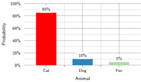

Nén mô hình

Mục đích
Tại sao các mô hình thắng benchmark hiếm khi trở thành các mô hình chạy trong sản xuất?
Quá trình huấn luyện tạo ra một mô hình có năng lực, nhưng chỉ năng lực thôi chưa đủ để đảm bảo khả năng triển khai. Cloud, Edge, Mobile và TinyML đều áp đặt những ràng buộc mà các benchmark nghiên cứu thường bỏ qua: ngân sách bộ nhớ tính bằng megabyte thay vì gigabyte, mục tiêu độ trễ tính bằng mili giây thay vì giây, và giới hạn công suất tính bằng miliwatt thay vì kilowatt. Nghiên cứu tối ưu hoá độ chính xác trên các tập kiểm thử độc lập; sản xuất tối ưu hoá độ chính xác trên mỗi đô la, mỗi watt và mỗi mili giây. Các mô hình thắng benchmark thường lớn hơn, chậm hơn và ngốn nhiều tài nguyên hơn mức môi trường sản xuất cho phép. Để thu hẹp khoảng cách đó, cần một kỷ luật nén có hệ thống: đánh đổi những khả năng mà triển khai không cần lấy các ràng buộc không thể vi phạm. Nhiều mô hình đã được huấn luyện mang nhiều độ chính xác số học, nhiều kết nối hoặc dung lượng hơn so với nhu cầu của ngữ cảnh triển khai, và có thể loại bớt phần dư thừa mà vẫn giữ được hành vi cần thiết. Tuy nhiên, biểu diễn nhỏ hơn không tự động đồng nghĩa nhanh hơn. Ngăn xếp phần cứng và phần mềm phải khai thác được độ chính xác hoặc cấu trúc mới; nếu không, việc giảm kích thước chỉ trên danh nghĩa có thể chỉ chuyển nút thắt cổ chai mà độ trễ vẫn không đổi. Khi áp dụng đúng, nén có thể giảm mạnh kích thước mô hình, biến một sản phẩm nghiên cứu chỉ chạy trong trung tâm dữ liệu thành một tài sản sản xuất chạy được trên điện thoại, cảm biến hoặc vi điều khiển. Kỷ luật này không chỉ để làm mô hình nhỏ đi, mà là để làm ra đúng mô hình phù hợp với môi trường vật lý của nó. Theo thuật ngữ D·A·M, nén là đồng thiết kế thuật toán-máy ngay trên chính mô hình, viết lại cấu trúc toán học của nó để khớp với các ràng buộc vật lý của máy.
Learning Objectives
- Giải thích nén là một dạng đồng thiết kế thuật toán-máy, trong đó chúng ta đánh đổi dung lượng dư thừa để đáp ứng các ràng buộc về bộ nhớ, độ trễ và năng lượng.
- So sánh tỉa (pruning), chưng cất, lượng tử hoá và tìm kiếm kiến trúc theo loại ràng buộc tài nguyên mà mỗi kỹ thuật nới lỏng.
- Tính mức giảm bộ nhớ tham số, mức giảm độ chính xác biểu diễn và mức độ thưa để ước tính mức lợi nén tốt nhất có thể.
- Áp dụng các chiến lược sau huấn luyện, nhận biết lượng tử hoá (quantization-aware) và chỉ trọng số, dưới các ràng buộc về độ chính xác và phần cứng.
- Chọn tỉa (pruning) có cấu trúc và các toán tử sao cho ánh xạ được vào các nhân (kernels) của bộ tăng tốc hiện có.
- Thiết kế các pipeline nén, sắp xếp thứ tự tỉa (pruning), chưng cất và lượng tử hoá để giữ vững độ chính xác khi triển khai.
- Đánh giá độ trễ, năng lượng và độ chính xác đo được trên phần cứng mục tiêu, thay vì chỉ dựa vào số lượng phép tính FLOP.
Framework tối ưu hoá

Các trọng số Frontier lớn hơn rất nhiều so với bộ nhớ của điện thoại và vi điều khiển; nén giúp thu hẹp khoảng cách này.
Một mô hình ngôn ngữ với 7 tỷ tham số cần 14 GB chỉ để lưu trữ các trọng số ở FP16. Thiết bị mục tiêu để triển khai là một điện thoại thông minh với 8 GB RAM, dung lượng này phải chia sẻ cho hệ điều hành, các ứng dụng và cả mô hình. Về mặt toán học, điều này là bất khả thi. Dù có kỹ thuật tinh vi đến mấy, phép tính này cũng không thay đổi: 14 GB không thể vừa vặn trong 8 GB. Thế nhưng, người dùng vẫn kỳ vọng mô hình chạy nhạy, ngoại tuyến, và không làm cạn pin chỉ trong một giờ. Mỗi yêu cầu chỉ có một khoảng thời gian rất ngắn để nạp dữ liệu, thực hiện tính toán và trả kết quả; khoảng cách khi triển khai còn bao gồm cả dung lượng bộ nhớ, năng lượng và khả năng chạy ngoại tuyến. Khoảng cách này không phải là một bất tiện nhỏ, mà là thách thức mang tính quyết định của nén mô hình.
Hãy nhớ lại ‘hợp đồng silicon’ (nguyên tắc 4), thỏa thuận hiệu suất giữa mô hình và phần cứng của nó. Thông lượng tính toán, băng thông bộ nhớ, dung lượng bộ nhớ và chi phí cố định quyết định tài nguyên nào sẽ trở thành nút thắt cổ chai trước. Trong huấn luyện, hợp đồng này thường được đẩy lên cao hơn. Các nhà nghiên cứu có thể chọn kiến trúc lớn hơn, độ chính xác số học cao hơn và thêm các lớp sâu hơn khi cụm GPU chịu được các yêu cầu đó. Huấn luyện cũng phải mang theo gradient, trạng thái của optimizer và một khoảng đệm số học mà một đường dẫn triển khai chỉ chạy forward có thể không cần. Trong Huấn luyện độ chính xác hỗn hợp, độ chính xác hỗn hợp cải thiện hiệu quả huấn luyện trong khi vẫn giữ hành vi số học cần thiết để học. Nén đi xa hơn cho triển khai bằng cách hạ độ chính xác xuống INT8 hoặc thấp hơn khi đường thực thi mục tiêu hỗ trợ. Việc triển khai có thể đảo ngược các ưu tiên của huấn luyện: môi trường sản xuất có thể nhỏ hơn, bị giới hạn về công suất và nhạy với độ trễ, ngay cả khi mô hình được phát triển mà không có những giới hạn này. Nếu lựa chọn dữ liệu tối ưu hóa những gì mô hình học từ đó, thì nén tối ưu hóa những gì mô hình đã huấn luyện mang vào môi trường đó. nén mô hình là một quá trình có hệ thống nhằm ‘đàm phán lại’ hợp đồng silicon cho một ngữ cảnh thực thi mới, giảm dung lượng bộ nhớ, chi phí tính toán hoặc mức tiêu thụ năng lượng trong khi vẫn giữ được hành vi mà ứng dụng yêu cầu.
Quy mô của việc ‘đàm phán lại’ này biến tối ưu hóa mô hình thành một ngành kỹ thuật bài bản, không phải tập hợp các mẹo tùy tiện. Một mô hình 175 tỷ tham số tiêu thụ hơn 350 GB chỉ riêng ở định dạng FP16, trong khi một vi điều khiển chỉ có 512 KB SRAM. Thu hẹp khoảng cách sáu bậc độ lớn đòi hỏi các phương pháp có hệ thống với những đánh đổi có thể dự đoán, không phải thử và sai. Mỗi kỹ thuật tối ưu hóa đều loại bỏ một phần nào đó khỏi mô hình (tham số dư thừa, độ chính xác số học hoặc độ phức tạp kiến trúc), và chúng ta phải hiểu rõ chính xác những gì bị mất, những gì được giữ lại, cũng như cách các mất mát này cộng dồn khi kết hợp nhiều kỹ thuật.
Nén hoạt động theo ba hướng bổ trợ nhau. Tối ưu hóa cấu trúc loại bỏ phần dư ngay trong mô hình: Pruning (tỉa) loại bỏ các tham số ít ảnh hưởng, knowledge distillation (chưng cất tri thức) chuyển giao hành vi vào một kiến trúc nhỏ hơn, và neural architecture search (tìm kiếm kiến trúc) khám phá các thiết kế theo mục tiêu đặt ra. Tối ưu hóa độ chính xác giảm số bit của các trọng số và activation; ví dụ, chuyển từ FP32 sang INT8 giúp giảm bốn lần số byte thô cho mỗi giá trị biểu diễn. Các đơn vị ma trận độ chính xác thấp được phần cứng hỗ trợ cũng có thể tăng tốc phép toán. Tối ưu hóa ở cấp phần cứng ánh xạ kết quả lên bộ xử lý đích bằng các kỹ thuật như hợp nhất (fusion) và tính thưa (sparsity) được hỗ trợ. Ba hướng này tạo thành một chồng tối ưu hóa (optimization stack): thay đổi cấu trúc quyết định những phép toán nào tồn tại, thay đổi độ chính xác quyết định số byte trên mỗi giá trị, còn phần việc ở cấp phần cứng quyết định liệu các khoản tiết kiệm mang tính lý thuyết đó có trở thành các đường thực thi được hỗ trợ hay không. Một người thực hành có thể tỉa các bộ lọc của ResNet-50, lượng tử hóa phần còn lại xuống INT8, và hợp nhất batch normalization vào phép tích chập. Lợi ích chỉ cộng dồn khi các biến đổi giải tỏa những nút thắt khác nhau và runtime hỗ trợ đồ thị kết quả. Vì vậy, mỗi lớp cần được đo lường riêng. Tensor Cores giải thích các cơ chế của bộ tăng tốc đằng sau các đường dẫn độ chính xác thấp.
Các hệ thống cụ thể giúp những đánh đổi này đo được một cách rõ ràng: ResNet-50 và MobileNetV2 (các mô hình chủ đạo của chúng tôi từ Danh sách các mô hình tiêu biểu: Tiểu sử mô hình) cho các khối lượng công việc (workload) về thị giác, các mô hình ngôn ngữ dựa trên transformer cho các tác vụ chuỗi, DLRM cho áp lực bộ nhớ trong hệ thống khuyến nghị (Naumov et al. 2019), và mạng nơ-ron tích chập tách sâu (depthwise-separable CNN) gọi là DS-CNN cho nhận dạng từ khóa trong TinyML (Y. Zhang et al. 2017). Tái sử dụng các mô hình này cho phép chúng ta so sánh các kỹ thuật trong những điều kiện nhất quán, khiến các đánh đổi giữa độ chính xác, độ trễ, bộ nhớ và năng lượng trở nên cụ thể thay vì trừu tượng.
Definition 1.1: Nén mô hình
Nén mô hình là nhóm kỹ thuật giúp giảm chi phí tính toán và dung lượng bộ nhớ của một mô hình đã được huấn luyện bằng cách loại bỏ các tham số dư thừa (tỉa (pruning)), giảm độ chính xác số (lượng tử hoá), hoặc chuyển giao hành vi đã học sang một kiến trúc nhỏ hơn (chưng cất (distillation)), đồng thời vẫn giữ tối đa độ chính xác dự đoán.
- Ý nghĩa: Nén trực tiếp làm giảm các hạng mục di chuyển dữ liệu và tính toán trong định luật sắt. Lượng tử hoá INT8 cho một LLM có 175 tỷ tham số sẽ giảm bộ nhớ lưu trữ trọng số từ 350 GB (FP16) xuống 175 GB, tương đương mức giảm 2× lần \(D_{\text{vol}}\). Các đơn vị ma trận chuyên dụng cho độ chính xác thấp có thể tăng thông lượng tính toán nếu kernel và layout dùng đúng đường dẫn INT8 được hỗ trợ. Tỉa (pruning) không cấu trúc đến độ thưa 50% sẽ giảm một nửa số phần tử khác 0, nhưng số phép toán thực thi chỉ giảm khi runtime có thể bỏ qua các số 0 đó thông qua định dạng thưa hoặc kernel được hỗ trợ.
- Điểm khác biệt: Khác với các phương pháp nén sau huấn luyện như tỉa (pruning) và lượng tử hoá, tìm kiếm kiến trúc nơ-ron (NAS) khám phá các kiến trúc hiệu quả ngay từ đầu bằng cách duyệt một không gian thiết kế. Ở đây, NAS được xem như một kỹ thuật tối ưu hoá cấu trúc có liên quan: nó thay đổi biểu diễn trước khi huấn luyện thay vì nén một mô hình đã hoàn thiện.
- Cạm bẫy thường gặp: Các kỹ thuật nén không tự động kết hợp với nhau mà không gây ảnh hưởng lẫn nhau. Tỉa (pruning) làm thay đổi phân bố trọng số và mẫu hình thao tác; lượng tử hoá thêm các ràng buộc về hiệu chuẩn và kernel. Kết hợp chúng có thể làm giảm độ chính xác hoặc không mang lại tăng tốc nếu không được kiểm chứng chung.
Ngăn xếp tối ưu hoá đi từ biểu diễn, sang số học, rồi đến thực thi. Bối cảnh triển khai quyết định ràng buộc nào trói chặt trước; các phương pháp cấu trúc thay đổi phép tính, các phương pháp về độ chính xác thay đổi cách biểu diễn từng giá trị, và các phương pháp kiến trúc quyết định liệu phiên bản đã nén có thực sự ánh xạ tốt sang thực thi hiệu quả trên phần cứng hay không. Việc lựa chọn và kết hợp kỹ thuật nên tuân theo thứ tự các ràng buộc đó, thay vì chọn theo một danh sách cố định.
Ba chiều này tạo thành một thứ bậc tự nhiên. Quá trình tối ưu hoá trước hết xác định những phép tính mô hình nên thực hiện (biểu diễn), tiếp theo là độ chính xác cần thiết để thực hiện chúng (số học), và cuối cùng là mức độ hiệu quả khi chạy trên phần cứng vật lý (triển khai). Figure 1 minh hoạ tiến trình này từ các mối quan tâm ở phía phần mềm đến thực thi ở cấp độ phần cứng.
{kind=link}
Lớp trên cùng, biểu diễn mô hình hiệu quả, tập trung loại bỏ phần dư thừa trong cấu trúc mô hình. Các kỹ thuật như tỉa (pruning), chưng cất tri thức và tìm kiếm kiến trúc mạng nơ-ron (NAS)1 giúp giảm số lượng tham số hoặc phép toán cần thiết, từ đó xử lý vấn đề dung lượng bộ nhớ và độ phức tạp tính toán ở cấp độ thuật toán.
1 Tìm kiếm kiến trúc mạng nơ-ron (NAS): Zoph and Le (2016) tại Google Brain đã dùng học tăng cường để tìm ra kiến trúc với chi phí 22,400 GPU-days (800 GPUs cho 28 days), tương đương 537,600 GPU-hours. Các cách tiếp cận chia sẻ trọng số như Efficient Neural Architecture Search (ENAS) sau đó đã giảm chi phí tìm kiếm khoảng 1,000× bằng cách chia sẻ tham số giữa các kiến trúc ứng cử viên (Pham et al. 2018). NAS có tính đến phần cứng và các phương pháp mở rộng quy mô sau đó đã biến đầu ra tìm kiếm thành các họ kiến trúc triển khai được như EfficientNet và MobileNetV3 (Tan and Le 2019; Howard et al. 2019).
Lớp giữa — biểu diễn số hiệu quả — tối ưu hoá cách lưu trữ và xử lý các giá trị số. Lượng tử hoá và huấn luyện độ chính xác hỗn hợp giảm độ rộng bit của trọng số và activation (ví dụ, từ số thực dấu phẩy động 32-bit xuống số nguyên 8-bit), giúp chạy nhanh hơn và dùng ít bộ nhớ hơn trên phần cứng chuyên dụng.
Lớp dưới cùng — triển khai phần cứng hiệu quả — xem liệu các phép toán còn lại có ánh xạ hiệu quả lên bộ xử lý mục tiêu hay không. Hợp nhất toán tử, hỗ trợ độ thưa, và lập lịch nhận biết phần cứng giúp căn chỉnh tính toán với các cấp bậc bộ nhớ và các đơn vị vector hoặc ma trận; việc phân tích hiệu năng (profiling) xác định liệu chúng có cải thiện mức độ sử dụng tài nguyên hoặc thông lượng hay không.
Những chiều này phụ thuộc lẫn nhau. Tỉa (pruning) giảm độ phức tạp nhưng có thể cần thay đổi kiến trúc để đạt hiệu quả phần cứng. Lượng tử hoá giảm độ chính xác nhưng làm thay đổi hành vi số và các đường thực thi khả dụng. Một chiến lược hữu ích có thể kết hợp kỹ thuật ở các lớp khi chúng giải quyết các ràng buộc khác nhau. Với người thực hành cần hướng dẫn ngay, section 1.6.2 ánh xạ các ràng buộc triển khai tới các kỹ thuật ứng viên. Các phần tiếp theo cung cấp nền tảng kỹ thuật cần thiết để đánh giá những lựa chọn đó.
Tầm quan trọng tương đối của từng chiều thay đổi theo mục tiêu triển khai. Hệ thống đám mây có thể chấp nhận mô hình lớn hơn nhưng đòi hỏi thông lượng; thiết bị di động ưu tiên bộ nhớ và năng lượng; hệ thống nhúng đối mặt với các ràng buộc chặt chẽ trên mọi tài nguyên cùng lúc. Hiểu rõ những ngữ cảnh triển khai này sẽ định hướng ưu tiên các chiều tối ưu hoá.
Self-Check: Question
The chapter’s optimization framework organizes model compression along three dimensions that progress from software-level concerns down to physical silicon execution. Which sequence matches that hierarchy?
- Efficient numerics representation → efficient model representation → efficient hardware implementation
- Efficient hardware implementation → efficient model representation → efficient numerics representation
- Efficient model representation → efficient numerics representation → efficient hardware implementation
- Efficient hardware implementation → efficient numerics representation → efficient model representation
A \(7\text{-billion}\)-parameter language model in FP16 occupies \(14\text{ GB}\) of weight memory alone. The target deployment platform is a smartphone with \(8\text{ GB}\) of shared RAM. Explain how quantizing weights to INT4 addresses both the physical memory capacity ceiling and the memory-bandwidth bottleneck during autoregressive token generation.
True or False: When a model cannot be deployed because its parameter footprint exceeds the device’s physical RAM capacity, operator fusion is an effective direct substitute for pruning or quantization.
Order the stages of renegotiating a model’s silicon contract from high-level software abstraction down to physical silicon execution: (1) Numerical precision optimization (e.g., INT8 quantization), (2) Hardware-level execution mapping (e.g., kernel fusion and layout alignment), (3) Model representation optimization (e.g., channel pruning and distillation).
The chapter frames model compression as a systematic renegotiation of the model’s ____, which is the implicit performance bargain governing which physical resource (compute throughput, memory bandwidth, or memory capacity) becomes the binding bottleneck on the deployment device.
A deployment team optimizes ResNet-50 for an edge processor by applying 50% structured filter pruning, INT8 quantization to surviving weights, and Conv-BatchNorm operator fusion. Why does this composite pipeline achieve substantially greater acceleration than applying any single technique in isolation?
- All three techniques target the same arithmetic bottleneck, so their individual latency reductions add linearly without overhead
- Pruning automatically converts the convolutional graph into a NAS-discovered topology that eliminates the need for separate quantization
- Applying quantization first forces the runtime to bypass memory hierarchy constraints, making subsequent fusion redundant
- Each technique operates on a distinct layer of the optimization stack (representation, numerics, and execution), allowing their individual efficiency gains to compound multiplicatively
Ngữ cảnh triển khai
Khung tối ưu hoá ở trên xác định ba chiều nén, nhưng chiều nào quan trọng nhất còn tuỳ nơi mô hình sẽ chạy. Một GPU trong trung tâm dữ liệu với 80 GB bộ nhớ băng thông cao (HBM) có các ràng buộc chi phối khác so với một điện thoại thông minh dùng RAM chia sẻ, hay một vi điều khiển chỉ có vài trăm kilobyte SRAM. Table 1 tóm tắt các ràng buộc chính trong các môi trường triển khai khác nhau.
| Ngữ cảnh | Bộ nhớ | Độ trễ | Công suất | Mục tiêu chính |
|---|---|---|---|---|
| Đám mây | hàng chục GB | 100–500 ms | Linh hoạt | Thông lượng, chi phí |
| Di động/Edge | hàng trăm MB đến GB | 5–100 ms | Thang W | Kích thước, độ trễ |
| TinyML | KB–MB | 1–10 ms | mW | Kích thước, năng lượng |
Các kịch bản triển khai
Suy luận trên đám mây thường ưu tiên thông lượng (yêu cầu/giây/đô la), trong đó các lộ trình lượng tử hoá được hỗ trợ có thể tăng mật độ phục vụ (serving) và hợp nhất toán tử có thể giảm độ trễ cho mỗi yêu cầu (Choudhary et al. 2020; Dean et al. 2018). Các triển khai trên thiết bị di động và edge phải gói gọn trong bộ nhớ thiết bị, đồng thời đáp ứng các mục tiêu thời gian thực. Ví dụ, một ứng dụng camera xử lý 30 fps có 33 ms cho mỗi khung hình; vượt ngưỡng độ trễ này có thể quyết định tính năng đó có vận hành thời gian thực hay không.
Trong TinyML, việc tối ưu hoá trở thành một yêu cầu bắt buộc khi triển khai. Một vi điều khiển chỉ với vài trăm kilobyte RAM không thể chạy một mô hình 100 MB, bất kể độ chính xác. Mô hình phải nằm trong giới hạn phần cứng, nếu không thì không thể triển khai (Banbury et al. 2020). Thiết bị di động có dư địa hơn, nhưng một tối ưu hoá vượt ngưỡng bộ nhớ, độ trễ hoặc nhiệt có thể quyết định tính năng đó có được phát hành hay không.
Áp lực ở thời điểm triển khai này không phải điều mới. AlexNet, mô hình mang tính bước ngoặt đã giành chiến thắng trong thử thách ImageNet năm 2012, đã gặp rào cản bộ nhớ trong quá trình huấn luyện, và kiến trúc của nó đã ghi dấu lựa chọn thiết kế hai GPU.
Example 1.1: AlexNet tách mô hình trên hai GPU (2012)
Cơ chế: Một GPU NVIDIA GTX 580 chỉ cung cấp 3 GB bộ nhớ GDDR5—không đủ để lưu trữ 240 MB trọng số của mô hình cùng với các activation FP32 (\(M_{\text{act}}\)) và trạng thái của optimizer (\(M_{\text{state}}\)) khi huấn luyện trên một GPU duy nhất.
Tác động: Mô hình hoàn toàn không thể được huấn luyện trên một thiết bị duy nhất, nên trần bộ nhớ đã tác động ngược lên chính thiết kế mạng thay vì chỉ là vấn đề mua sắm phần cứng.
Giải pháp: Họ phân hoạch mô hình trên hai GPU GTX 580 3 GB và giới hạn các kết nối xuyên GPU để tập làm việc (working set) nằm trong giới hạn bộ nhớ của từng thiết bị (\(M_{\text{peak}} \le 3\text{ GB}\)). Kiến trúc hai tháp này đạt tỷ lệ lỗi top-5 là 15.3%, với biên độ 10.8 điểm phần trăm.
Bài học về hệ thống: Các giới hạn về dung lượng bộ nhớ đã luôn là một thách thức đối với deep learning ngay từ buổi đầu. Các chiến lược triển khai mô hình (tỉa (pruning), lượng tử hoá) đang giải quyết đúng những giới hạn vật lý từng buộc AlexNet phải chia tách mô hình.
Áp lực bộ nhớ từng định hình kiến trúc của AlexNet cũng xuất hiện trong các ràng buộc sản phẩm hằng ngày, khi mô hình phải chạy trên phần cứng di động phổ thông.
Example 1.2: Một ví dụ minh họa về thành công của MobileNet
Chẩn đoán: Một mô hình MobileNetV3 FP32 chưa nén chỉ đạt 8 FPS, vượt quá các giới hạn về độ trễ và công suất nhiệt của thiết bị. Lượng tử hoá trọng số sang INT8 cho phép NPU/DSP di động thực thi phép nhân ma trận số nguyên.
Bài học về hệ thống: Ở đây, INT8 cắt dung lượng tham số thô xuống còn 1/4, và đường dẫn số nguyên được hỗ trợ giúp tăng tốc suy luận từ 8 FPS lên 35 FPS. Dù vậy, tốc độ và công suất vẫn cần được đo trực tiếp trên thiết bị.
Khoảng cách giữa yêu cầu của mô hình và khả năng của thiết bị cho thấy nén là điều bắt buộc khi triển khai trên hệ thống hạn chế tài nguyên.
Cân bằng các đánh đổi
Table 2 định lượng khoảng cách triển khai này bằng cách dùng các mô hình tiêu biểu (lighthouse models) từ Danh sách các mô hình tiêu biểu: Tiểu sử mô hình: ngay cả MobileNetV2 ở độ chính xác INT8 cũng vượt quá bộ nhớ thiết bị TinyML khoảng 6.7×. Sự không tương thích này khiến đánh đổi giữa độ chính xác và hiệu quả trở nên không thể tránh khỏi. Tăng dung lượng mô hình thường cải thiện độ chính xác dự đoán nhưng cũng làm tăng chi phí tính toán, khiến suy luận chậm hơn và tốn nhiều tài nguyên hơn. Những cải thiện đó đồng thời kéo theo thách thức về dấu chân bộ nhớ, độ trễ suy luận, mức tiêu thụ công suất và hiệu quả huấn luyện.
Systems Perspective 1.1: Đường cong đánh đổi giữa nén và độ chính xác
Quyết định kỹ thuật nằm ở chỗ chọn điểm dừng. Nên dừng nén tại “điểm uốn” của đường cong, nơi mà mức mất chính xác tăng thêm bắt đầu vượt quá mức tăng hiệu quả tăng thêm. Vượt qua điểm này, mô hình xuống cấp nhanh hơn là tăng tốc.
| Mô hình | Bộ nhớ trọng số khi runtime | Lưu trữ trọng số artifact | Đám mây (~107 GB) | Di động (8 GB) | TinyML (~512 KB) |
|---|---|---|---|---|---|
| DLRM | 100 GB | 100 GB | ok | không (11.6×) | không (190734.9×) |
| GPT-2 XL | 6 GB | 6 GB | ok | ok | không (11444.1×) |
| ResNet-50 | 102.4 MB | 102.4 MB | ok | ok | không (195.3×) |
| MobileNetV2 | 14 MB | 14 MB | ok | ok | không (26.7×) |
| MobileNetV2 (INT8) | 3.5 MB | 3.5 MB | ok | ok | không (6.7×) |
| DS-CNN (KWS, INT8) | 200 KB | 200 KB | ok | ok | ok |
Sự đánh đổi này biểu hiện khác nhau tuỳ ngữ cảnh triển khai. Huấn luyện cần tài nguyên tính toán tăng theo kích thước mô hình; còn suy luận phải đáp ứng nghiêm ngặt các ràng buộc về độ trễ và công suất trong các ứng dụng thời gian thực. Hiểu rõ mỗi kỹ thuật tối ưu hoá nằm ở đâu trên biên Pareto giữa nén và độ chính xác là điều thiết yếu để lựa chọn kỹ thuật một cách sáng suốt.
Table 3 tóm tắt các kỹ thuật tối ưu hoá chính, lợi ích cho hệ thống và chi phí phía ML. Đây là những mối quan hệ mang tính thực nghiệm—kết quả thực tế còn phụ thuộc vào kiến trúc mô hình, tác vụ và việc triển khai cẩn thận.
| Kỹ thuật | Lợi ích hệ thống | Chi phí ML | Tác động điển hình | Vùng |
|---|---|---|---|---|
| Operator Fusion | Giảm độ trễ 10–30% | Không có | Không mất độ chính xác | 1 |
| FP32 → BF16 | Bộ nhớ gấp 2 lần, thông lượng ~gấp 2 lần | Tối thiểu | Giảm độ chính xác \(<0.1\%\) | 1 |
| FP16 → INT8 | Bộ nhớ gấp 2 lần, thông lượng gấp 2–4 lần | Lỗi lượng tử hoá | Giảm độ chính xác 0.5–1% | 2 |
| Tỉa (pruning) 50% | Mô hình nhỏ hơn ~gấp 2 lần | Mất dung lượng | Giảm độ chính xác 0.5–1% | 2 |
| Knowledge Distillation | Mô hình học sinh nhỏ hơn gấp 2–10 lần | Giới hạn khả năng | Giảm độ chính xác 1–3% | 2 |
| Lượng tử hoá 4-bit | Giảm bộ nhớ gấp 4 lần | Lỗi đáng kể | Giảm độ chính xác 2–5% | 2–3 |
| Tỉa (pruning) 90% | Mô hình nhỏ hơn ~gấp 10 lần | Mất dung lượng nghiêm trọng | Giảm độ chính xác 5–15% | 3 |
| Tăng Kích thước batch (gấp 8 lần) | Thông lượng cao hơn, sử dụng GPU tốt hơn | Generalization gap | Yêu cầu LR scaling | — |
Các kỹ thuật bảo toàn cấu trúc mô hình, như hợp nhất (fusion) và giảm độ chính xác, thường “miễn phí” hoặc ít tốn kém. Ngược lại, các kỹ thuật thay đổi cấu trúc, như tỉa (pruning) và chưng cất, mang lại mức tiết kiệm lớn hơn nhưng đòi hỏi tinh chỉnh cẩn thận. Mỗi ngữ cảnh triển khai áp đặt một ràng buộc chủ đạo khác nhau, ví dụ như dung lượng bộ nhớ trên thiết bị di động, độ trễ trong hệ thống thời gian thực, hay năng lượng trên các cảm biến chạy bằng pin. Ngăn xếp tối ưu hóa sẽ lần theo các ràng buộc đó xuống các tầng thấp hơn. Các phương pháp cấu trúc thay đổi những phép tính được thực hiện, giảm số tham số và số phép toán của mô hình để đáp ứng ngân sách bộ nhớ và tính toán chặt chẽ hơn. Các kỹ thuật về độ chính xác giảm số bit dùng để biểu diễn mỗi giá trị, trực tiếp thu nhỏ bộ nhớ và tăng tốc phép toán số học. Các phương pháp kiến trúc cải thiện hiệu quả thực thi của phần phép toán còn lại trên phần cứng thực, giúp thu hẹp khoảng cách giữa mức tiết kiệm lý thuyết và hiệu suất đo được.
Checkpoint 1.1: Đường biên hiệu quả
Tối ưu hóa là việc đánh đổi tài nguyên này lấy tài nguyên khác.
Các đánh đổi
Self-Check: Question
Across the deployment contexts analyzed in the chapter, which platform makes model compression an existential requirement—where a model cannot run at all until it fits—rather than an operational latency or cost optimization?
- TinyML microcontrollers, where strict sub-megabyte RAM limits and milliwatt power envelopes create hard feasibility boundaries below which execution is physically impossible
- Cloud inference clusters, where batch processing allows models to exceed host RAM by paging weights dynamically from disk
- Autonomous edge servers, where continuous thermal throttling is preferred over model compression
- Mobile smartphones, where unified memory architecture eliminates all capacity constraints for large neural networks
A practitioner evaluates two candidate vision and audio models against a \(512\text{ KB}\) TinyML microcontroller SRAM envelope: MobileNetV2 quantized to INT8 (roughly \(3.5\text{ MB}\)) and a DS-CNN keyword spotter (roughly \(800\text{ KB}\) at FP32 and \(200\text{ KB}\) at INT8). Which outcome is correct?
- Both models fit comfortably because INT8 quantization guarantees that any vision or audio network fits in TinyML memory
- DS-CNN INT8 fits within the 512 KB budget at roughly 200 KB, whereas MobileNetV2 INT8 still exceeds the memory envelope by roughly 7×
- Neither model fits because microcontrollers lack floating-point units required to execute INT8 scaling operations
- MobileNetV2 INT8 fits because depthwise separable convolutions eliminate activation memory, while DS-CNN exceeds the limit
In the chapter’s compression-accuracy Pareto trade-off curve, define what the ‘knee of the curve’ represents quantitatively, and explain the decision rule it provides to an engineer deciding when to stop compressing a model.
True or False: Scaling up batch size on a GPU server shifts a model along its compression-accuracy Pareto frontier by altering its algorithmic representation.
A mobile video-conferencing feature requires \(30\text{ FPS}\) background segmentation, but baseline FP32 MobileNetV3 runs at only \(8\text{ FPS}\). Applying INT8 quantization accelerates the model to \(35\text{ FPS}\) with a minor \(0.4\%\) drop in mIoU, satisfying the shipping requirement. Which region of the chapter’s compression-accuracy Pareto frontier best describes this outcome?
- Region 1 (free lunch), because achieving 35 FPS proves that INT8 quantization incurs zero loss in segmentation boundary fidelity
- Region 3 (danger zone), because any reduction in numerical precision destabilizes temporal consistency in video processing
- An unfeasible operating point outside the Pareto frontier, because 35 FPS exceeds the maximum display refresh rate
- Region 2 (efficient trade), because a modest, acceptable drop in segmentation accuracy unlocks a 4.4× frame rate increase that satisfies the 30 FPS real-time shipping threshold
Tối ưu hóa cấu trúc
Các mạng nơ-ron hiện đại thường có nhiều tham số hơn mức cần cho triển khai.2 Phần dung lượng thừa vẫn tiêu tốn bộ nhớ, tính toán và năng lượng. Tối ưu hóa cấu trúc nhắm vào khía cạnh đầu tiên trong framework của chúng ta, biểu diễn mô hình hiệu quả, bằng cách thay đổi những gì mô hình tính toán. Mặc dù dung lượng bổ sung có thể hỗ trợ tối ưu hóa trong quá trình huấn luyện, các tham số không cải thiện mô hình khi triển khai vẫn làm phát sinh chi phí triển khai.
2 Tham số hoá quá mức: C. Zhang et al. (2017) đã chứng minh rằng các mạng đủ lớn để học trên tập dữ liệu ImageNet cũng có thể ghi nhớ cả những nhãn hoàn toàn ngẫu nhiên, cho thấy khả năng huấn luyện có thể vượt xa cấu trúc thực sự cần cho các nhãn tự nhiên. Các nghiên cứu về tỉa (pruning) sau đó chỉ ra hệ quả khi triển khai: các mô hình đã huấn luyện thường chứa nhiều tham số có thể loại bỏ hoặc làm thưa với mức mất mát nhiệm vụ nhỏ, miễn là quá trình tỉa (pruning) và tinh chỉnh (fine-tuning) được thực hiện cẩn thận (Gale et al. 2019; Blalock et al. 2020). Sự dư thừa này không phải là một hằng số 10\(\times\) áp dụng cho mọi trường hợp; nó phụ thuộc vào kiến trúc, tập dữ liệu, mẫu thưa và sự hỗ trợ của runtime.
Mọi kỹ thuật trong chương này đều tuân theo cùng một heuristic kỹ thuật: bảo toàn độ phức tạp. Nén hiếm khi loại bỏ hẳn chi phí. Nó chỉ chuyển dịch chi phí giữa các trục Dữ liệu, Thuật toán và Máy. Ví dụ, tỉa (pruning) có thể giảm số tham số nhưng yêu cầu runtime khai thác cấu trúc thưa; chưng cất tri thức có thể giảm chi phí suy luận nhưng thêm một pha huấn luyện thầy-trò; lượng tử hoá có thể giảm việc di chuyển dữ liệu nhưng đánh đổi bằng độ chính xác số học. Nhiệm vụ của kỹ sư là chuyển độ phức tạp đến nơi có chi phí thấp nhất, dựa trên các ràng buộc khi triển khai.
Thách thức là loại bỏ phần dư thừa mà không làm mất điều cốt lõi. Mỗi kỹ thuật đều chuyển dịch độ phức tạp. Tỉa (pruning) giảm số lượng tham số nhưng yêu cầu phần cứng khai thác các mẫu thưa và xử lý truy cập bộ nhớ không đều. Chưng cất tri thức tạo ra một mô hình triển khai nhỏ hơn bằng cách tốn thêm tài nguyên tính toán trong quá trình huấn luyện. Tìm kiếm kiến trúc mạng nơ-ron (NAS) giảm công sức thiết kế của con người bằng cách dành nhiều ngân sách hơn cho tìm kiếm tự động. Vì vậy, tối ưu hoá cấu trúc đặt ra câu hỏi: độ phức tạp nên nằm ở đâu cho một mục tiêu triển khai cụ thể?3
3 Biên Pareto: Được đặt theo tên nhà kinh tế học người Ý Vilfredo Pareto (1848–1923), người quan sát rằng 80 phần trăm đất đai của Ý thuộc sở hữu của 20 phần trăm dân số. Trong tối ưu hóa đa mục tiêu, biên Pareto là tập nghiệm mà khi cải thiện một mục tiêu (ví dụ: tốc độ) thì tất yếu phải hy sinh mục tiêu khác (ví dụ: độ chính xác). EfficientNet bám theo đường biên này một cách cụ thể: từ B0 (77.1 phần trăm độ chính xác, 390 triệu FLOPs) đến B7 (84.4 phần trăm, 37 tỷ FLOPs)—tức tăng 95\(\times\) lượng tính toán để đổi lấy thêm 7.3 điểm phần trăm độ chính xác, cho thấy mức độ dốc của sự đánh đổi ở rìa biên (Tan and Le 2019).
Ba kỹ thuật này giải quyết thách thức bằng các cách tiếp cận bổ trợ. Tỉa (pruning) loại bỏ các tham số ít ảnh hưởng khỏi một mô hình hiện có. Chưng cất tri thức chuyển giao các năng lực đã học của một mô hình lớn sang một kiến trúc nhỏ hơn. NAS tự động hóa thiết kế kiến trúc từ đầu, xây dựng cấu trúc tối ưu cho các ràng buộc cụ thể (Hutter et al. 2019). Trong thực tế, các kỹ thuật này thường được kết hợp: một kiến trúc do NAS thiết kế, được chưng cất từ một mô hình thầy lớn, rồi được tỉa (pruning) để triển khai cuối cùng. Ở đây, chúng ta bàn về tỉa (pruning) trước vì nó phơi bày trực diện sự đánh đổi cấu trúc cốt lõi: loại bỏ tham số chỉ hữu ích khi cấu trúc thu được là thứ runtime có thể khai thác.
Tỉa (pruning)
Để minh họa một kịch bản triển khai, hãy xét một MobileNet được huấn luyện để phân loại ảnh trên thiết bị theo dõi sức khỏe đeo tay. Mô hình đã huấn luyện có kích thước 14 MB, nhưng vi điều khiển đích chỉ có 2 MB bộ nhớ flash. Huấn luyện lại một kiến trúc nhỏ hơn từ đầu sẽ cần hàng tuần thu thập và thẩm định dữ liệu—mà lịch trình sản phẩm không cho phép. Giả sử profiling cho thấy khoảng 85.7 percent trọng số của mô hình gần bằng 0 và đóng góp rất ít trên tập thẩm định. Loại bỏ các trọng số đó và tinh chỉnh (fine-tuning) phần còn lại trong vài epoch có thể tạo ra một mô hình gọn còn 2 MB với mức suy giảm độ chính xác chấp nhận được. Những con số này nhằm cố định bài toán đánh đổi kỹ thuật, chứ không phải là một benchmark chung cho MobileNet.
Tỉa (pruning)4 trực tiếp giải quyết các ràng buộc về hiệu quả bộ nhớ bằng cách loại bỏ những tham số hoặc cấu trúc đóng góp ít cho mục tiêu khi triển khai. Nhiều mạng đã được huấn luyện có dung lượng có thể bỏ đi, nhưng tỷ lệ an toàn phụ thuộc vào kiến trúc, tác vụ, kiểu tỉa (pruning) và quy trình khôi phục. Các câu hỏi trung tâm là tỉa (pruning) cái gì (trọng số riêng lẻ hay cả cấu trúc), làm sao ước tính phần có thể bỏ (dựa vào độ lớn, gradient, hay activation), và khi nào tỉa (pruning) (sau huấn luyện, trong khi huấn luyện, hoặc thậm chí ngay từ lúc khởi tạo). Cơ chế độ thưa thớt có cấu trúc N:M giải thích phía phần cứng; bài học hệ thống ở đây là: các số 0 chỉ có giá trị khi luồng thực thi có thể bỏ qua chúng.
4 Optimal Brain Damage: Được giới thiệu bởi LeCun et al. (1989), phương pháp này giúp giảm số tham số xuống còn 1/4—và tiết kiệm bộ nhớ tương ứng—trong một bộ nhận dạng chữ viết tay bằng cách dùng xấp xỉ đường chéo của thông tin đạo hàm bậc hai (Hessian) để ước tính mức tăng tổn thất khi loại bỏ từng trọng số. Một ma trận Hessian đầy đủ có \(\mathcal{O}(n^2)\) phần tử với \(n\) tham số, nhưng Optimal Brain Damage tránh phải lưu toàn bộ ma trận bằng cách chỉ xấp xỉ đường chéo của nó. Ở quy mô hiện đại, tỉa (pruning) vẫn ưu tiên các tiêu chí rẻ hơn như độ lớn, vì ngay cả ước tính độ cong đường chéo cũng làm tăng chi phí huấn luyện.
Definition 1.2: Tỉa (pruning)
Tỉa (pruning) là một kỹ thuật nén mô hình, làm thưa không gian tham số bằng cách loại bỏ các trọng số đóng góp rất ít thông tin vào bề mặt tổn thất.
- Ý nghĩa: Kỹ thuật này có thể chuyển các ma trận dày đặc thành cấu trúc thưa, giúp giảm dung lượng bộ nhớ và tổng khối lượng dữ liệu \((D_{\text{vol}})\) khi biểu diễn thưa, siêu dữ liệu và quy trình khôi phục vẫn giữ được chất lượng chấp nhận được.
- Điểm khác biệt: Khác với lượng tử hoá, vốn giảm độ chính xác của mọi trọng số, tỉa (pruning) giảm số lượng trọng số bằng cách xác định và loại bỏ phần dư thừa.
- Cạm bẫy thường gặp: Một hiểu lầm phổ biến là tỉa (pruning) sẽ “tự động” tăng tốc thực thi. Thực tế, nếu không có hỗ trợ chuyên biệt cho thực thi dạng thưa, các ma trận thưa thu được thậm chí có thể chạy chậm hơn ma trận dày đặc do mẫu truy cập bộ nhớ không đều; chỉ số \(R_{\text{peak}}\) cao hơn thôi không đủ để làm cho một bố trí thưa không đều trở nên hiệu quả.
Chúng ta tìm một phiên bản thưa thớt của các tham số mô hình \(\hat{\mathbf{W}}\) sao cho mức tăng lỗi dự đoán (loss) là nhỏ nhất, đồng thời vẫn đáp ứng ngân sách tham số cố định \(k\). Việc phát biểu mục tiêu này bằng toán học giúp làm rõ cả mục tiêu lẫn lý do vì sao cần các nghiệm gần đúng: \[ \min_{\hat{\mathbf{W}}} \mathcal{L}(\hat{\mathbf{W}}) \quad \text{subject to} \quad \|\hat{\mathbf{W}}\|_0 \leq k \] trong đó \(\|\hat{\mathbf{W}}\|_0\) là chuẩn L0 (đếm số tham số khác 0). Bài toán tối ưu hóa có ràng buộc số lượng phần tử này mang tính tổ hợp, nên trong thực tế người ta dùng các kỹ thuật phỏng đoán5 như tỉa (pruning) dựa trên độ lớn. Listing 1 minh họa cách tiếp cận này: loại bỏ các trọng số có giá trị tuyệt đối nhỏ để biến một ma trận trọng số đặc thành biểu diễn thưa thớt như trong figure 2.
5 Phương pháp phỏng đoán: Từ tiếng Hy Lạp heuriskein (khám phá), cùng gốc với “eureka” của Archimedes. Trong tỉa (pruning), phỏng đoán phổ biến nhất là: độ lớn càng lớn thì càng quan trọng. Cách này hiệu quả về thực nghiệm nhưng dễ tạo ra bẫy hệ thống: tỉa (pruning) dựa trên độ lớn áp dụng toàn cục có thể loại bỏ phần lớn tham số ở các lớp thừa tham số, trong khi các lớp nút cổ chai quan trọng hầu như vẫn nguyên, tạo cảm giác nén mạnh nhưng vẫn giữ nhiều chi phí tính toán và bộ nhớ ở những lớp quan trọng (Blalock et al. 2020). Đây là lý do các chu trình tỉa (pruning) - huấn luyện lại lặp nhiều lần với ngân sách theo từng lớp thường an toàn hơn so với tỉa (pruning) theo độ lớn kiểu toàn cục và ngây thơ: mỗi chu trình cho phép mạng phân bổ lại tầm quan trọng trước lần cắt tiếp theo.
import torch
# Original dense weight matrix
weights = torch.tensor(
[[0.8, 0.1, -0.7], [0.05, -0.9, 0.03], [-0.6, 0.02, 0.4]]
)
# Simple magnitude-based pruning: keep only the 4 largest weights
threshold = 0.5
mask = torch.abs(weights) >= threshold
pruned_weights = weights * mask
print("Original:", weights)
print("Pruned (4 nonzeros):", pruned_weights){kind=link}
Hãy chú ý: ma trận thưa ở bên phải chỉ giữ lại các giá trị có độ lớn cao (các ô màu), còn các trọng số gần bằng 0 thì bị đưa về đúng 0. Với những mô hình phù hợp để tỉa (pruning), phần lớn thông tin hữu ích vẫn có thể được giữ lại dù đã loại bỏ nhiều trọng số có độ lớn nhỏ. Quan sát này là động lực cho tỉa (pruning) dựa trên độ lớn như một quy tắc thực nghiệm hữu ích.
Để việc tỉa (pruning) khả thi về mặt tính toán, các phương pháp thực tế thường thay ràng buộc L0 cứng bằng chuẩn hóa mềm như chuẩn L1 \((\lambda_{\text{L1}} \| \mathbf{W} \|_1)\), trong đó \(\lambda_{\text{L1}}\) kiểm soát mức phạt độ thưa và \(\mathbf{W}\) là tensor trọng số được chuẩn hóa. Cách này khiến các giá trị nhỏ dần, để sau đó có thể ngưỡng hoá về 0. Trong thực tế, thường dùng tỉa (pruning) lặp, trong đó các tham số được loại bỏ theo nhiều bước, xen kẽ với tinh chỉnh (fine-tuning) nhằm khôi phục độ chính xác đã mất (Gale et al. 2019; Blalock et al. 2020).
Cấu trúc mục tiêu
Việc chọn tỉa (pruning) gì phụ thuộc vào ràng buộc phần cứng của môi trường triển khai và tài nguyên nào đang là nút thắt cổ chai. Khi dung lượng bộ nhớ là ràng buộc chính, tỉa (pruning) neuron có thể giúp giảm tải trực tiếp ở các mô hình mà các lớp kết nối đầy đủ chiếm phần lớn không gian lưu trữ tham số: loại bỏ toàn bộ neuron cùng các trọng số và độ chệch (bias) liên quan sẽ làm giảm bề rộng lớp và số lượng tham số. Trước hết cần profiling để xác định rằng chính các lớp này, chứ không phải embedding, activation hay thành phần khác, mới là nút thắt cổ chai thực sự.
Khi độ trễ suy luận tích chập trên các bộ tăng tốc phổ thông là nút thắt cổ chai, tỉa (pruning) kênh (còn gọi là tỉa (pruning) bộ lọc) là một lựa chọn mạnh. Loại bỏ toàn bộ kênh hoặc bộ lọc sẽ giảm độ sâu bản đồ đặc trưng và số phép nhân-tích lũy ở các lớp tiếp theo. Mạng con thu được vẫn dày đặc và đều đặn, nên có thể ánh xạ lên các kernel GPU và TPU (Tensor Processing Unit) thông thường mà không cần định dạng thưa (sparse) phi cấu trúc. Độ trễ đạt được vẫn phụ thuộc vào các kích thước, kernel và lưu lượng bộ nhớ sau cùng.
Khi một mô hình có các giai đoạn có thể loại bỏ, tỉa (pruning) lớp sẽ loại bỏ trọn một lớp khỏi mạng. Mỗi lần loại bỏ cắt đi toàn bộ tính toán của giai đoạn đó, nhưng đồng thời làm giảm độ sâu biểu diễn và có thể thay đổi hình dạng tensor, các đường tắt (residual), hoặc các giao diện ở các phần sau. Các lớp còn lại phải gánh chức năng đã mất, thường thông qua tinh chỉnh (fine-tuning) hoặc huấn luyện lại. Vì vậy, số phép toán tiết kiệm được trên danh nghĩa không đảm bảo giảm độ trễ tương ứng: việc viết lại đồ thị, hình dạng kernel và lưu lượng bộ nhớ vẫn chi phối thực thi. Tỉa (pruning) lớp đòi hỏi xác thực tác vụ cẩn thận và end-to-end profiling. So sánh song song trong figure 3 cho thấy vì sao tỉa (pruning) kênh và tỉa (pruning) lớp có chi phí triển khai khác nhau.
{kind=link}
Để thấy hai cách tiếp cận này khác nhau thế nào trong thực tế, hãy so sánh hai phần của figure 3. Khi một kênh bị tỉa, kiến trúc mô hình cần được điều chỉnh để phù hợp với thay đổi cấu trúc đó. Cụ thể, số kênh đầu vào ở các lớp tiếp theo phải được sửa đổi, kéo theo việc thay đổi độ sâu của các bộ lọc áp dụng cho lớp có kênh bị loại bỏ. Ngược lại, tỉa lớp loại bỏ toàn bộ các kênh trong một lớp, nên cần những thay đổi kiến trúc lớn hơn. Khi đó, các kết nối giữa những lớp còn lại phải được cấu hình lại để bỏ qua lớp đã bị loại. Dù áp dụng cách tỉa nào, tinh chỉnh (fine-tuning) vẫn rất quan trọng để thích ứng phần mạng còn lại và khôi phục hiệu suất.
Tỉa không cấu trúc
Tỉa không cấu trúc loại bỏ từng trọng số riêng lẻ nhưng vẫn giữ nguyên kiến trúc mạng tổng thể. Trong quá trình huấn luyện, một số kết nối trở nên dư thừa, đóng góp rất ít vào đầu ra cuối cùng. Tỉa các kết nối yếu này làm giảm số lượng phần tử khác 0 và, sau khi khôi phục, có thể giữ được hầu hết chất lượng tác vụ.
Để chính thức hóa quá trình này, ta giả sử \(\mathbf{W} \in \mathbb{R}^{m \times n}\) là ma trận trọng số trong một lớp cụ thể. Việc tỉa sẽ loại bỏ một tập con các trọng số bằng cách áp dụng một mặt nạ nhị phân \(\mathbf{M} \in \{0,1\}^{m \times n}\), từ đó tạo ra ma trận trọng số đã tỉa: \[ \hat{\mathbf{W}} = \mathbf{M} \odot \mathbf{W} \] trong đó \(\odot\) là tích Hadamard theo từng phần tử. Mặt nạ \(\mathbf{M}\) được xây dựng dựa trên một tiêu chí tỉa, thường là độ lớn của trọng số. Một cách tiếp cận phổ biến là tỉa dựa trên độ lớn, loại bỏ một phần \(\rho_{\text{sparse}}\) các trọng số có độ lớn nhỏ nhất bằng cách định nghĩa một ngưỡng \(\delta_{\text{prune}}\) như sau: \[ M_{i,j} = \begin{cases} 1, & \text{if } |W_{i,j}| > \delta_{\text{prune}} \\ 0, & \text{otherwise} \end{cases} \] trong đó \(\delta_{\text{prune}}\) được chọn để đảm bảo rằng chỉ còn lại \((1 - \rho_{\text{sparse}})\) phần các trọng số có độ lớn lớn nhất. Phương pháp này giả định rằng các trọng số có độ lớn lớn hơn đóng góp nhiều hơn vào chức năng của mạng, nên được ưu tiên giữ lại.
Tỉa không cấu trúc làm giảm số lượng tham số khác 0. Việc giảm này chỉ thật sự tiết kiệm bộ nhớ lưu trữ mô hình khi các số 0 được mã hóa theo định dạng thưa, với chi phí siêu dữ liệu thấp hơn các giá trị bị lược bỏ. Nếu không, một tensor dày đặc có các số 0 được che bằng mask vẫn chiếm dung lượng lưu trữ như ban đầu.
Tuy nhiên, tỉa không cấu trúc không nhất thiết cải thiện hiệu suất tính toán trên phần cứng hiện đại. Các bộ tăng tốc tiêu chuẩn được tối ưu cho phép nhân ma trận dày đặc, và một ma trận trọng số thưa thường không thể tận dụng tối đa tăng tốc phần cứng trừ khi có các kernel tính toán thưa chuyên biệt. Vì vậy, tỉa không cấu trúc chủ yếu có lợi cho lưu trữ mô hình hơn là tăng tốc suy luận.
Tỉa có cấu trúc
Nếu tỉa không cấu trúc loại bỏ từng trọng số riêng lẻ, thì tỉa có cấu trúc (Li et al. 2017) loại bỏ toàn bộ các đơn vị tính toán: nơ-ron, bộ lọc, kênh hoặc lớp. Cách tiếp cận này có thể tạo ra các tensor dày đặc nhỏ hơn, vẫn dùng được các kernel của bộ tăng tốc thông thường. Vì vậy, việc chuyển thành giảm độ trễ thường dễ hơn so với độ thưa không cấu trúc tùy ý, dù vẫn cần đo lường các yếu tố như hình dạng mới, hành vi bộ nhớ và chất lượng tác vụ.
Nơ-ron, bộ lọc và các lớp có thể đóng góp rất khác nhau vào dự đoán của mô hình. Một số thành phần có thể mang thông tin dư thừa hoặc ít ảnh hưởng, nhưng chỉ nên loại bỏ khi việc xác thực cho thấy cấu trúc còn lại vẫn giữ được hành vi yêu cầu. Xác định đúng những cấu trúc đó vẫn là thách thức cốt lõi.
Các chiến lược tỉa nhận biết phần cứng, chẳng hạn độ thưa có cấu trúc N:M,6 áp đặt các mẫu cụ thể (ví dụ: đảm bảo 2 trong mỗi 4 trọng số là 0) để phù hợp với khả năng của các bộ tăng tốc chuyên biệt. Chương này dùng mẫu 2:4 làm ví dụ cho kỹ thuật nén; Cơ chế độ thưa thớt có cấu trúc N:M sau đó sẽ minh họa cách các Tensor Core thưa khai thác mẫu này.
6 Độ thưa có cấu trúc N:M: Được giới thiệu thương mại cùng với GPU A100 của NVIDIA (2020), mẫu 2:4 được chọn vì nó giảm một nửa số phép toán nhân-tích lũy, đồng thời giữ siêu dữ liệu vị trí đủ nhỏ để phù hợp với đường dẫn Sparse Tensor Core (NVIDIA Corporation 2020; Choquette et al. 2021). Tỷ lệ cố định này là một ràng buộc của phần cứng, không phải tối ưu toán học: đường dẫn Sparse Tensor Core của A100 tăng tốc cho các toán hạng thưa 2:4, mang lại thông lượng tính toán tăng tới 2\(\times\) so với thực thi dày đặc khi các kernel và bố cục thỏa mãn ràng buộc này. Các tỷ lệ khác không được tăng tốc bởi đường dẫn phần cứng chuyên biệt này, cho thấy thiết kế silicon giới hạn những mẫu độ thưa nào có thể thật sự mang lại tăng tốc.
Các phương pháp tỉa (pruning) thường phải đánh đổi giữa việc giảm số tham số và tính đều đặn khi thực thi trên phần cứng. Hãy so sánh ba phần trong figure 4: phần bên trái minh họa việc loại bỏ các trọng số một cách không đều, trong khi các phần ở giữa và bên phải cho thấy việc loại bỏ nơ-ron và kênh có cấu trúc.
{kind=link}
Ngược lại, tỉa (pruning) có cấu trúc (minh họa ở phần giữa và bên phải của figure 4) sẽ loại bỏ toàn bộ nơ-ron hoặc bộ lọc nhưng vẫn giữ nguyên cấu trúc tổng thể của mạng. Ở phần giữa, một mạng kết nối đầy đủ sau khi tỉa vẫn giữ bản chất kết nối đầy đủ nhưng có ít nơ-ron hơn. Ở bên phải, tỉa có cấu trúc được áp dụng cho một CNN bằng cách loại bỏ các nhân tích chập hoặc toàn bộ kênh (các hình vuông đứt nét). Cách làm này duy trì các phép tích chập cốt lõi của CNN đồng thời giảm tải tính toán, giúp phù hợp hơn với các bộ tăng tốc phần cứng.
Một cách tiếp cận phổ biến trong tỉa (pruning) có cấu trúc là xếp hạng toàn bộ nơ-ron hoặc bộ lọc dựa trên độ lớn của các trọng số liên quan. Một chuẩn nhóm thấp là một chỉ báo rẻ và đơn giản cho thấy tầm quan trọng thấp, nhưng không phải bằng chứng rằng đơn vị đó có thể bỏ đi. Điểm số có thể dùng chuẩn \(\ell_1\) hoặc \(\ell_2\) trên các trọng số của mỗi đơn vị; các nhóm có điểm dưới một ngưỡng chọn sẵn sẽ là ứng viên để tỉa. Cần xếp hạng theo từng lớp vì các thang đo thô có thể khác nhau giữa các lớp. Phương pháp này không cần một lượt dữ liệu đại diện, nhưng việc tính điểm, chọn ngưỡng, triển khai đồ thị đã rút gọn, và xác thực hoặc tinh chỉnh (fine-tuning) kết quả vẫn phát sinh chi phí kỹ thuật và tính toán.
Một chiến lược khác là tỉa (pruning) dựa trên activation, trong đó đánh giá activation của nơ-ron hoặc bộ lọc trên một tập dữ liệu. Các đơn vị có activation luôn yếu trên các đầu vào đại diện sẽ trở thành ứng viên loại bỏ, kèm theo các kiểm tra ablation hoặc tinh chỉnh (fine-tuning). Cách tiếp cận này nắm bắt hành vi phụ thuộc đầu vào thay vì chỉ dựa vào các trọng số tĩnh. Tuy vậy, việc xếp hạng vẫn có thể bỏ sót các đầu vào hiếm nhưng quan trọng, phụ thuộc vào cách điều chỉnh tỷ lệ activation, hoặc thay đổi sau khi các đơn vị ở phía trước bị loại bỏ. Vì vậy, tỉa (pruning) dựa trên activation đòi hỏi dữ liệu profiling mang tính đại diện và cần được xác thực sau khi các cấu trúc đã chọn bị loại bỏ.
Tỉa (pruning) dựa trên gradient sử dụng đạo hàm của hàm mất mát để ước tính việc loại bỏ một nơ-ron hoặc bộ lọc sẽ làm thay đổi hàm mục tiêu như thế nào. Một điểm số bậc nhất nhỏ chỉ ra một ứng viên tại checkpoint hiện tại và trên dữ liệu đã lấy mẫu; điều đó không khẳng định sự không liên quan vĩnh viễn hay bao quát mọi tương tác giữa các đơn vị. Các tiêu chí dựa trên gradient có thể kết hợp giá trị của một đơn vị với gradient của nó để xếp hạng mức thay đổi mất mát cục bộ kỳ vọng. Khác với các tiêu chí chỉ dựa vào độ lớn của trọng số, chúng cần tính lan truyền ngược và thường được tích hợp vào quá trình huấn luyện hoặc tinh chỉnh (fine-tuning). Kết quả sau khi tỉa vẫn cần được kiểm chứng ở cấp độ tác vụ vì điểm số này chỉ là một xấp xỉ cục bộ.
Các tiêu chí này đánh đổi giữa chi phí đo lường và độ sát với hành vi của mô hình. Điểm số độ lớn ít tốn kém và là một đường cơ sở hữu ích, nhưng bỏ qua phân phối đầu vào. Điểm số activation đưa vào các đầu vào đại diện và chỉ ra các đơn vị ít hoạt động trên khối lượng công việc (workload) đó, trong khi điểm số dựa trên gradient còn xét đến bề mặt mất mát cục bộ với chi phí huấn luyện bổ sung. Không tiêu chí nào vượt trội trên mọi mô hình, và cũng không tiêu chí nào chứng minh rằng việc loại bỏ là vô hại. Một so sánh chuẩn mực sẽ tỉa đến cùng một mục tiêu cấu trúc, áp dụng cùng một ngân sách phục hồi (recovery budget), và đo chất lượng tác vụ sau khi loại bỏ. Sau đó, cần lập hồ sơ (profile) đồ thị đã xuất, vì một điểm số tầm quan trọng tốt hơn có thể giữ được chất lượng nhưng lại tạo ra các cấu trúc mà runtime mục tiêu không thực thi hiệu quả. Do đó, lựa chọn phụ thuộc vào dữ liệu và tài nguyên tính toán sẵn có, cấu trúc đang bị loại bỏ, và biên độ chất lượng của quá trình triển khai.
Tỉa (pruning) động
Các phương pháp tỉa (pruning) truyền thống, dù không cấu trúc hay có cấu trúc, đều tạo ra một mặt nạ Static pruning hoặc một mạng con cố định trong quá trình triển khai, ngay cả khi mặt nạ này được học dần trong quá trình huấn luyện. Ngược lại, dynamic pruning điều chỉnh những phép tính nào được kích hoạt dựa trên dữ liệu đầu vào hoặc động lực huấn luyện, nên mạng con được thực thi có thể thay đổi theo thời gian.
Tỉa (pruning) động có thể tận dụng các kỹ thuật thưa tại runtime, trong đó mô hình chọn tham số hoặc cấu trúc dựa trên đặc điểm của đầu vào. Chẳng hạn, tỉa (pruning) theo điều kiện activation sẽ vô hiệu hóa các nơ-ron hoặc kênh cho những đầu vào cụ thể (Hu et al. 2023). Độ thưa phụ thuộc đầu vào này chỉ giảm được phần việc phải thực thi khi bộ điều khiển và runtime có thể bỏ qua phần đó với chi phí thấp hơn so với thực thi theo một đường đặc (dense path).
Ví dụ, hãy xét một mạng nơ-ron tích chập xử lý các ảnh có độ phức tạp khác nhau. Trong quá trình suy luận trên một ảnh đơn giản chủ yếu gồm các vùng đồng nhất, một số bộ lọc tích chập có thể tạo ra activation không đáng kể. Một chính sách động có thể nhận diện các bộ lọc ứng viên và tạm thời loại chúng khỏi quá trình tính toán. Việc loại bỏ này làm giảm khối lượng công việc danh nghĩa, nhưng chi phí của bộ điều khiển, việc thực thi không đều (irregular execution), và bất kỳ thay đổi nào về chất lượng vẫn tính vào kết quả cuối cùng. Phương pháp này chỉ hữu ích trong các ứng dụng nhạy cảm với độ trễ khi mức độ khác biệt giữa các đầu vào đủ lớn để bù đắp các chi phí đó. Benchmarking trình bày các chiến lược đo lường để đánh giá những cải thiện hiệu quả như vậy; ở đây, yêu cầu then chốt là đo cả tốc độ và độ chính xác trên cùng một khối lượng công việc (workload) mục tiêu và trên toàn bộ phân phối đầu vào.
Một lớp tỉa (pruning) động khác hoạt động trong quá trình huấn luyện, dần đưa vào và điều chỉnh độ thưa trong suốt quá trình tối ưu hóa. Tỉa (pruning) độ lớn dần dần (gradual magnitude pruning) bắt đầu từ một mạng đặc (dense) và từng bước tăng tỷ lệ tham số bị tỉa, đồng thời tinh chỉnh (fine-tuning) các trọng số còn lại. Các biến thể huấn luyện thưa thớt động (dynamic sparse training) còn cho phép mạng phục hồi khỏi suy giảm năng lực do tỉa (pruning) gây ra bằng cách mọc lại các kết nối về sau được chứng minh là quan trọng trong quá trình huấn luyện.
Tỉa động có thể phân bổ lượng công việc khác nhau cho các đầu vào khác nhau và có thể kích hoạt lại năng lực mà một mặt nạ tĩnh khi triển khai đã loại bỏ vĩnh viễn. Những đặc điểm này tạo ra cơ hội, chứ không đảm bảo mang lại hiệu quả hay độ chính xác. Bộ điều khiển nằm trên đường xử lý chính, các tuyến phụ thuộc đầu vào có thể làm phân mảnh các batch, và không gian hành vi mở rộng đòi hỏi xác thực nhiều hơn. Trong huấn luyện, có thể cần thêm các hàm mất mát liên quan đến định tuyến hoặc các kỹ thuật điều chuẩn để chính sách thực sự dùng các đường dẫn rẻ hơn. Triển khai sản xuất phải theo dõi tần suất từng tuyến, các đuôi độ trễ (latency tails) và chất lượng theo tuyến; Vận hành machine learning sau này sẽ trình bày các thực hành giám sát và rollback đó. Vì vậy, tỉa động chỉ phù hợp khi độ phức tạp của đầu vào biến đổi đủ lớn để bù đắp chi phí điều khiển và chi phí xử lý theo batch, chứ không phải là lựa chọn mặc định thay cho tỉa tĩnh.
Các đánh đổi của tỉa
Ba phương pháp tỉa nằm ở các vị trí khác nhau trên trục đánh đổi giữa tính đều đặn và độ chi tiết. Tỉa không cấu trúc có thể loại bỏ các trọng số riêng lẻ và do đó đạt được độ thưa ở mức rất chi tiết, nhưng các bộ tăng tốc cần các định dạng thưa và kernel phù hợp để bỏ qua các số 0 đó. Tỉa có cấu trúc loại bỏ các kênh, bộ lọc hoặc lớp và có thể tạo ra các phép toán dày đặc nhỏ hơn mà phần cứng thông thường đã hỗ trợ. Tỉa động làm cho cấu trúc thực thi phụ thuộc vào đầu vào, thêm chi phí điều khiển và batching để đổi lấy khả năng phân bổ có điều kiện. Table 4 tóm tắt những khác biệt trong triển khai này.
Các danh mục này mô tả cách thực thi khi triển khai, chứ không phải các thuật toán huấn luyện loại trừ lẫn nhau. Một mạng con có cấu trúc có thể được huấn luyện với lịch trình động rồi đóng băng để phục vụ (serving); hãy phân loại tạo phẩm dựa trên những gì runtime của nó thực sự thực thi.
| Khía cạnh | Tỉa (pruning) không cấu trúc | Tỉa (pruning) có cấu trúc | Tỉa (pruning) động |
|---|---|---|---|
| Điều gì bị loại bỏ? | Các trọng số riêng lẻ trong mô hình | Toàn bộ nơ-ron, kênh, bộ lọc hoặc lớp | Điều chỉnh tỉa (pruning) dựa trên các điều kiện runtime |
| Cấu trúc mô hình | Ma trận trọng số thưa; kiến trúc gốc không thay đổi | Kiến trúc mô hình được sửa đổi; các lớp bị tỉa (pruning) được loại bỏ hoàn toàn | Cấu trúc thích ứng linh hoạt |
| Tác động đến bộ nhớ | Giảm số lượng phần tử khác 0; dung lượng lưu trữ chỉ giảm khi có biểu diễn thưa phù hợp | Giảm dung lượng lưu trữ mô hình bằng cách loại bỏ toàn bộ các thành phần | Thay đổi dựa trên tỉa (pruning) thời gian thực |
| Tác động đến tính toán | Tính toán dày đặc vẫn còn trừ khi một đường dẫn thưa được hỗ trợ bỏ qua các số 0 | Giảm FLOPs danh nghĩa; độ trễ phụ thuộc vào các hình dạng và kernel kết quả | Thay đổi theo chính sách định tuyến và chi phí quản lý của bộ điều khiển |
| Khả năng tương thích phần cứng | Yêu cầu định dạng thưa và hỗ trợ thực thi tương ứng | Tạo ra các mạng con dày đặc, nhưng các hình dạng không phù hợp vẫn có thể làm phần cứng hoạt động kém hiệu quả | Yêu cầu các công cụ suy luận thích ứng |
| Có cần tinh chỉnh (fine-tuning) không? | Thường được sử dụng để khôi phục độ chính xác sau khi tỉa (pruning) | Thường được sử dụng sau khi sửa đổi cấu trúc | Phụ thuộc vào cách chính sách định tuyến và các mạng con được huấn luyện |
| Trường hợp sử dụng | Nén mô hình hiệu quả bộ nhớ để triển khai trên đám mây | Tối ưu hóa suy luận thời gian thực, AI di động/edge và huấn luyện hiệu quả | Ứng dụng AI thích ứng, hệ thống thời gian thực |
Các chiến lược tỉa
Bên cạnh ba nhóm lớn là tỉa không cấu trúc, có cấu trúc và động, các quy trình tỉa khác nhau có thể ảnh hưởng đến hiệu quả của mô hình và khả năng giữ lại độ chính xác. Hai chiến lược tỉa phổ biến là tỉa lặp và tỉa một lần, mỗi cách đều có lợi ích và đánh đổi riêng.
Tỉa lặp
Tỉa lặp giúp hạn chế việc độ chính xác sụt giảm mạnh bằng cách xen kẽ bước loại bỏ cấu trúc với các chu kỳ huấn luyện lại. Hãy theo dõi quy trình ba hàng trong figure 5 để thấy độ chính xác giảm xuống rồi phục hồi ra sao sau mỗi giai đoạn tinh chỉnh (fine-tuning).
{kind=link}
Hãy theo dõi ba hàng của figure 5 để thấy quá trình dần dần này trên một mạng nơ-ron tích chập, nơi sáu kênh được tỉa. Thay vì loại bỏ tất cả kênh cùng lúc, tỉa lặp loại bỏ hai kênh mỗi lần trong ba chu kỳ. Sau mỗi bước tỉa, mô hình được tinh chỉnh (fine-tuning) để phục hồi hiệu suất. Lần lặp đầu tiên, việc loại bỏ hai kênh làm độ chính xác giảm từ 0.995 xuống 0.971, nhưng tinh chỉnh (fine-tuning) sau đó đưa độ chính xác trở lại 0.992. Sau thêm hai chu kỳ tỉa và tinh chỉnh, mô hình cuối cùng đạt độ chính xác 0.991, chỉ giảm 0.4% so với ban đầu, đồng thời số kênh giảm 27%. Bằng cách phân bổ các thay đổi cấu trúc qua nhiều lần lặp, mạng vẫn giữ được khả năng hoạt động trong khi tăng hiệu quả tính toán.
Tỉa một lần
Tỉa một lần loại bỏ nhiều thành phần kiến trúc trong một bước duy nhất, sau đó là một giai đoạn tinh chỉnh (fine-tuning) kéo dài để phục hồi độ chính xác của mô hình. Cách tiếp cận mạnh mẽ này giúp nén mô hình nhanh, nhưng có nguy cơ làm giảm độ chính xác nhiều hơn vì mạng phải thích nghi với các thay đổi cấu trúc lớn cùng lúc.
Hãy áp dụng tỉa (pruning) một lần cho cùng mạng trong ví dụ tỉa lặp. Thay vì loại bỏ hai kênh mỗi lần qua nhiều vòng lặp, tỉa một lần sẽ xóa cùng lúc cả sáu kênh. So sánh quy trình một hàng trong figure 6 với trường hợp tỉa lặp: loại bỏ đồng thời 27% số kênh của mạng khiến độ chính xác giảm mạnh, từ 0.995 xuống 0.914. Ngay cả sau tinh chỉnh (fine-tuning), mạng chỉ phục hồi lên 0.943, tức vẫn kém 5% so với mạng gốc chưa tỉa. Dù cả tỉa lặp và tỉa một lần rốt cuộc tạo ra cấu trúc mạng giống hệt nhau, cách làm từ từ của tỉa lặp giúp giữ hiệu suất mô hình tốt hơn.
{kind=link}
Việc lựa chọn giữa các chiến lược này phụ thuộc vào ba yếu tố liên quan chặt chẽ. Thứ nhất, mục tiêu độ thưa (sparsity target): các mục tiêu giảm cao thường cần cách tiếp cận lặp để giữ độ chính xác, còn các mục tiêu vừa phải có thể đạt bằng phương pháp một lần. Thứ hai, tài nguyên sẵn có: tỉa (pruning) lặp đòi hỏi nhiều tính toán cho nhiều vòng tinh chỉnh (fine-tuning), trong khi phương pháp một lần đánh đổi độ chính xác lấy tốc độ. Thứ ba, thời gian triển khai (deployment) và nền tảng mục tiêu: phương pháp một lần cho phép triển khai (deployment) nhanh hơn, nhưng một số kiến trúc phần cứng hỗ trợ tốt hơn các mẫu thưa cụ thể, nên khi đủ thời gian, cách tiếp cận lặp thường có lợi hơn.
Giả thuyết vé số (Lottery ticket hypothesis)
Các chiến lược tỉa (pruning) trong chương này có chung một giả định: chúng bắt đầu với một mạng đã được huấn luyện và sau đó xác định các tham số cần loại bỏ. Mối quan hệ giữa cấu trúc mạng và khả năng huấn luyện có thể sâu sắc hơn những gì các chiến lược tỉa (pruning) gợi ý: tỉa (pruning) có thể tiết lộ các mạng con hiệu quả vốn đã ẩn trong mô hình dày đặc, thay vì chỉ đơn thuần xóa đi các trọng số không cần thiết sau khi huấn luyện.
Quan điểm này dẫn đến Giả thuyết vé số (Lottery Ticket Hypothesis)7 (LTH), thách thức các quy trình tỉa (pruning) truyền thống: trong các mạng nơ-ron lớn tồn tại những mạng con nhỏ, được khởi tạo thuận lợi (những “vé trúng thưởng”), khi huấn luyện độc lập có thể đạt độ chính xác tương đương mô hình đầy đủ. Thay vì coi tỉa (pruning) là một bước nén sau huấn luyện, LTH gợi ý dùng nó như một cơ chế để phát hiện các mạng con hiệu quả này ngay từ giai đoạn đầu của quá trình huấn luyện (Rachwan et al. 2022).
7 Giả thuyết vé số (Lottery ticket hypothesis): Được đặt tên dựa trên trực giác rằng việc huấn luyện một mạng lớn giống như mua nhiều vé số—hầu hết đều thua, nhưng một vài “vé trúng thưởng” (các mạng con thưa với khởi tạo thuận lợi) có thể tự huấn luyện để đạt độ chính xác tương đương. Frankle and Carbin (2019) đã thiết lập giả thuyết này trên các mạng thị giác và mạng kết nối đầy đủ cỡ nhỏ; các công trình sau đó đã khảo sát và mở rộng ý tưởng này sang các bối cảnh lớn hơn (Rachwan et al. 2022). Về mặt hệ thống, điều này gợi ý rằng một phần bộ nhớ và tính toán dùng để huấn luyện các mạng dày đặc có thể là chi phí thừa có thể nhận diện được; tuy nhiên, lợi ích thực tế còn phụ thuộc vào việc liệu mạng con trúng thưởng có thể được tìm ra trước khi phải chi phần lớn chi phí huấn luyện ban đầu hay không.
Các thí nghiệm LTH ban đầu kiểm tra giả thuyết này bằng một quy trình tỉa (pruning) lặp. Hãy theo dõi chu trình trong figure 7: huấn luyện một mạng, tỉa bỏ các trọng số có độ lớn thấp, và đặt các trọng số còn lại về trạng thái khởi tạo ban đầu thay vì ngẫu nhiên hóa lại. Lặp chu trình này có thể cô lập một mạng con thưa mà, trong các thiết lập đã báo cáo, khi huấn luyện có thể đạt độ chính xác tương đương mạng ban đầu (Frankle and Carbin 2019). Tuy nhiên, thành công của quy trình còn tùy thuộc vào kiến trúc, quy mô, optimizer và ngân sách huấn luyện.
{kind=link}
Giả thuyết Lottery Ticket Hypothesis cho rằng có thể tồn tại các mạng con nhỏ gọn, có thể huấn luyện được bên trong một khởi tạo thừa tham số. Quan sát này thúc đẩy nghiên cứu về huấn luyện thưa trực tiếp, nhưng quy trình khám phá chuẩn không loại bỏ chi phí huấn luyện dày đặc: vẫn phải chạy một hoặc nhiều lần dày đặc hoặc bán dày đặc để tìm ‘vé’. Vì vậy, kết quả này nhấn mạnh vai trò của khởi tạo, đồng thời đặt ra câu hỏi thực tế cho hệ thống: liệu có thể xác định mạng con trước khi tiêu tốn phần lớn ngân sách huấn luyện ban đầu hay không?
Quy trình lặp này cũng tách riêng hai yếu tố mà việc tỉa một lần thường gộp chung: những trọng số nào được giữ lại và mức huấn luyện phục hồi sau mỗi lần cắt. Trong một số bối cảnh, các bước tỉa nhỏ hơn cho mạng nhiều cơ hội phục hồi hơn; ở những bối cảnh khác, các chu kỳ bổ sung lại không tương xứng với chi phí. Vì vậy, khi so sánh triển khai, cần đồng thời đo lường chất lượng cuối cùng, chi phí tìm kiếm hoặc huấn luyện lại, và mức tiết kiệm runtime thực sự đạt được.
Trong thực tế, một pipeline kiểu LTH nên được so sánh với việc huấn luyện ngay từ đầu một mô hình dày đặc nhỏ hơn, với tỉa một lần kèm phục hồi, và với các phương pháp huấn luyện thưa trực tiếp. Việc hạch toán phải bao gồm mọi lần chạy khám phá dày đặc hoặc bán dày đặc, việc quay lại checkpoint, các chu kỳ tỉa, và các giai đoạn phục hồi—không chỉ riêng mạng con cuối cùng. Một ‘vé trúng thưởng’ là kết quả huấn luyện; nó chỉ trở thành thắng lợi về hệ thống khi tổng thời gian sử dụng bộ tăng tốc, kích thước tạo phẩm cuối cùng, độ trễ mục tiêu, và chất lượng tác vụ đều vượt trội so với các lựa chọn khác.
Tỉa trong thực tế
LTH đưa ra một góc nhìn lý thuyết thuyết phục về tỉa (pruning), nhưng các triển khai thực tế vẫn phải tạo ra artifact cho runtime mà hệ thống triển khai có thể tận dụng. Việc tỉa ở cấp độ framework chỉ hữu ích khi nó tạo ra một artifact triển khai mà runtime có thể dùng: một mô hình dày đặc nhỏ hơn, một mô hình thưa có cấu trúc, hoặc một định dạng thưa đi kèm các kernel tương ứng. Tỉa trong quá trình huấn luyện thường bắt đầu bằng cách áp dụng mặt nạ: tensor gốc vẫn giữ nguyên, nhưng một mặt nạ nhị phân sẽ đặt các trọng số được chọn về 0 trong lượt truyền tiến. Cơ chế này có thể dẫn dắt quá trình học, nhưng tự nó không đảm bảo độ trễ thấp hơn hay dùng ít bộ nhớ hơn. Lợi ích khi triển khai chỉ xuất hiện khi cấu trúc bị mặt nạ che đó được chuyển thành artifact mà runtime phục vụ (serving) thực sự tải.
Ranh giới artifact này là nơi tách bạch các chiến lược tỉa (pruning). Tỉa không cấu trúc loại bỏ từng trọng số riêng lẻ và cần các kernel thưa cùng định dạng lưu trữ phù hợp để biến các giá trị 0 thành tốc độ xử lý. Tỉa có cấu trúc loại bỏ cả kênh, head, neuron hoặc khối, từ đó định hình lại các tensor thành các phép toán dày đặc nhỏ hơn mà các bộ tăng tốc thông thường đã thực thi tốt. Tỉa dần dần trong quá trình tinh chỉnh (fine-tuning) bổ sung một lịch trình huấn luyện: độ thưa tăng dần theo thời gian để các trọng số còn lại có thể phục hồi độ chính xác khi dung lượng bị cắt giảm. Do đó, việc kiểm tra hệ thống cần cụ thể: xác định cái gì được tỉa, xác định định dạng runtime, và xác minh rằng phần cứng mục tiêu có các kernel biến độ thưa đó thành lợi ích thực tế.
Những đánh đổi này trở nên cụ thể khi xem xét các triển khai thực tế. Một số dòng mô hình giảm chi phí triển khai bằng kiến trúc thay vì tỉa (pruning) hậu kỳ: MobileNet dùng tích chập phân tách theo chiều sâu cho thị giác trên thiết bị di động và nhúng (Howard et al. 2017), còn EfficientNet dùng mở rộng kết hợp để cải thiện cân bằng giữa độ chính xác và hiệu quả trong điều kiện tài nguyên hạn chế (Tan and Le 2019). Tỉa (pruning) vẫn là một đòn bẩy tối ưu hóa riêng. Các transformer kiểu BERT8 đã được tỉa bằng cách loại bỏ các head chú ý dư thừa hoặc các chiều trung gian, trong khi các phương pháp chưng cất riêng như DistilBERT và TinyBERT huấn luyện các mô hình học viên dày đặc nhỏ hơn nhưng vẫn giữ lại phần lớn hiệu suất của BERT (Sanh et al. 2019; Jiao et al. 2020).
8 Tỉa (pruning) BERT: 12 đầu chú ý trên mỗi lớp của BERT có thể chứa mức dư thừa đáng kể—Michel et al. (2019) cho thấy trên MultiNLI rằng có thể loại bỏ nhiều đầu mà hiệu năng không thay đổi đáng kể về mặt thống kê. Tỷ lệ có thể loại bỏ phụ thuộc vào từng lớp và từng tác vụ, nên tỉa (pruning) khi triển khai phải đo cả chất lượng tác vụ lẫn việc cấu trúc mới có thật sự giảm khối lượng xử lý ở runtime hay không.
Tỉa (pruning) có một hạn chế cố hữu: bắt đầu từ một kiến trúc sẵn có và cắt bớt các phần. Mô hình đã được tỉa kế thừa cấu trúc từ mô hình gốc—cùng loại lớp, cùng kiểu kết nối, chỉ là ít tham số hơn. Bản thân kiến trúc gốc có thể không hiệu quả khi triển khai. Người làm thực tế có thể cần một mô hình với cấu trúc hoàn toàn khác, chẳng hạn một transformer sáu lớp thay vì 12 lớp, nhưng vẫn giữ được các khả năng của mô hình gốc.
Nếu triển khai yêu cầu một kiến trúc khác, câu hỏi tiếp theo là một mô hình nhỏ hơn có thể tiếp thu hành vi mà mô hình gốc đã học như thế nào. Chưng cất tri thức trả lời câu hỏi đó bằng cách dùng mô hình lớn hơn làm nguồn giám sát thay vì chính nó là mô hình triển khai.
Chưng cất tri thức
Giả sử một mô hình hỏi đáp y tế vượt quá ngân sách bộ nhớ và độ trễ của máy chủ GPU đơn của bệnh viện. Việc làm thưa các trọng số hiện có có thể vẫn để lại một dạng biểu diễn không được hệ thống hỗ trợ, hoặc kiến trúc vẫn quá lớn so với mục tiêu; vì vậy triển khai có thể đòi hỏi một mô hình nhỏ hơn về căn bản. Chưng cất tri thức giải quyết lớp vấn đề này bằng cách huấn luyện một “học viên” nhỏ gọn để tái tạo hành vi của một “giáo viên” lớn hơn, thường giữ được phần lớn hiệu năng tác vụ của giáo viên với chi phí suy luận thấp hơn (Hinton et al. 2015; Sanh et al. 2019). Thuật ngữ chưng cất mượn từ hóa học, nơi quá trình chiết xuất một tinh chất cô đặc từ một hỗn hợp lớn hơn,9 nhưng điểm mấu chốt về mặt hệ thống là: các dự đoán của giáo viên có thể mang thông tin vượt ra ngoài các nhãn huấn luyện thô.
9 Chưng cất: Tên gọi này được mượn từ quá trình hóa học dùng để tách hỗn hợp. Trong nén mô hình, mô hình học viên học từ phân phối đầu ra đã được làm mềm hoặc các biểu diễn nội bộ của mô hình giáo viên, thay vì sao chép các tham số của nó. Các mục tiêu mềm (soft targets) có thể mã hóa mối quan hệ giữa các lớp, nhưng mô hình học viên chỉ học được những gì mục tiêu và dữ liệu huấn luyện của nó thể hiện. Phép ẩn dụ này hữu ích nhưng không nên hiểu theo nghĩa đen: tham số nhiệt độ xuất phát từ việc điều chỉnh hàm softmax, và sự đánh đổi giữa kích thước và chất lượng phụ thuộc vào mô hình học viên, dữ liệu, mục tiêu, và quy trình huấn luyện (Hinton et al. 2015). Việc tiết kiệm khi triển khai đến từ kiến trúc của mô hình học viên, chứ không phải từ chính phép ẩn dụ.
Definition 1.3: Chưng cất tri thức
Chưng cất tri thức là một kỹ thuật nén mô hình huấn luyện một mô hình học viên nhỏ hơn để tái tạo hành vi của một mô hình giáo viên lớn hơn, đã được huấn luyện trước.
- Ý nghĩa: Chưng cất chuyển gánh chi phí từ các lần suy luận lặp lại sang một giai đoạn huấn luyện bổ sung. Một mô hình học viên có thể nhỏ hơn đáng kể so với mô hình giáo viên nhưng vẫn giữ được hiệu suất tác vụ hữu ích; chẳng hạn, DistilBERT báo cáo ít hơn 40% tham số, suy luận nhanh hơn 60%, và đạt 97% hiệu suất hiểu ngôn ngữ của BERT (Sanh et al. 2019). Sự đánh đổi này đặc biệt có giá trị khi chi phí huấn luyện học viên được phân bổ qua nhiều truy vấn trong môi trường triển khai.
- Điểm khác biệt: Khác với tỉa (pruning), vốn loại bỏ tham số khỏi một kiến trúc hiện có, và lượng tử hoá (quantization), vốn giảm độ chính xác số, chưng cất huấn luyện một kiến trúc dày đặc mới. Mô hình học viên kế thừa hành vi từ phân phối đầu ra của mô hình giáo viên hoặc từ các biểu diễn trung gian, thay vì kế thừa toàn bộ số lượng tham số hay cấu trúc các lớp của mô hình giáo viên.
- Cạm bẫy thường gặp: Một hiểu lầm phổ biến là chưng cất là nén không mất mát. Thực tế, mô hình học viên bị giới hạn bởi năng lực của chính nó, chất lượng của mô hình giáo viên, và mức độ phù hợp giữa dữ liệu dùng để chưng cất với phân phối dữ liệu khi triển khai; một học viên có thể tái hiện trung thực cả lỗi lẫn tri thức của giáo viên.
Các mô hình giáo viên truyền đạt kiến thức ngữ nghĩa bằng cách tạo ra các phân phối xác suất liên tục cho các lớp đầu ra. Hãy xem biểu đồ cột xác suất trong Phân phối mục tiêu mềm (Soft Target Distribution). Bạn sẽ thấy xác suất của các lớp không phải mục tiêu thể hiện sự tương đồng về cấu trúc giữa các lớp như thế nào.
::: {#fig-kd-targets fig-env=“figure” fig-pos=“htb” fig-cap=“Phân phối mục tiêu mềm (Soft Target Distribution): Mức độ tin cậy tương đối của mô hình thầy cho thấy những lớp nào gần nhau về ngữ nghĩa (ví dụ: mèo so với chó), nhờ đó cung cấp tín hiệu giám sát phong phú hơn nhiều so với một nhãn”đúng” nhị phân đơn thuần.” fig-alt=“Biểu đồ cột thể hiện phân phối xác suất trên ba lớp động vật: Mèo 85 phần trăm, Chó 10 phần trăm, Cáo 5 phần trăm.”}

:::
Chưng cất tri thức đánh giá mô hình học trò dựa trên cả dự đoán của mô hình thầy và mục tiêu ground-truth. Hãy theo dõi luồng huấn luyện hai nhánh trong figure 8, lưu ý cách hàm mất mát chưng cất mềm và hàm mất mát học trò cứng kết hợp để dẫn dắt việc tối ưu hóa tham số.
Về mặt vận hành, quy trình có bốn quyết định trước khi bắt đầu huấn luyện: chọn một mô hình thầy với hành vi mong muốn; chọn một mô hình học trò có kiến trúc gọn, phù hợp với mục tiêu triển khai; chạy mô hình thầy trên dữ liệu hiệu chuẩn hoặc dữ liệu tác vụ để tạo ra các mục tiêu mềm; và chọn nhiệt độ cùng trọng số hàm mất mát để cân bằng giữa việc bắt chước mô hình thầy và học từ các nhãn cứng. Bước xác thực không chỉ kiểm tra độ chính xác. Một mô hình chưng cất thành công phải giữ được hiệu chuẩn, hành vi theo từng nhóm con, và độ trễ trên phần cứng mục tiêu, vì mô hình học trò có thể thừa hưởng lỗi của mô hình thầy cũng dễ như thừa hưởng độ bất định hữu ích của nó.
{kind=link}
Toán học chưng cất
Bắt đầu từ chuẩn hóa softmax được giới thiệu trong Các hàm activation phi tuyến tính, chúng ta sử dụng một tham số nhiệt độ10 \(T_{\text{distill}}\) để làm mềm phân phối xác suất. Đầu ra softmax cho lớp \(i\) trở thành: \[ p_i^{(T_{\text{distill}})} = \frac{\exp(z_i/T_{\text{distill}})}{\sum_j \exp(z_j/T_{\text{distill}})} \]
10 Nhiệt độ (softmax): Thuật ngữ này bắt nguồn từ phân phối Boltzmann trong cơ học thống kê. Chia logit cho một nhiệt độ lớn hơn 1 sẽ cho ra một phân phối mềm hơn, giúp bộc lộ các xác suất tương đối giữa những lớp không phải đích. Ở \(T_{\text{distill}}{=}1\), kết quả là softmax tiêu chuẩn. Tăng nhiệt độ làm giảm chênh lệch giữa các logit, nhưng không đảm bảo các xác suất được bộc lộ sẽ thực sự giúp mô hình học trò. Mức làm mềm hữu ích phụ thuộc vào thang logit, độ hiệu chuẩn của mô hình thầy, năng lực của mô hình học trò, cách đặt trọng số cho hàm mất mát, và cả hệ số \(T_{\text{distill}}^2\) đi kèm. Vì vậy, nhiệt độ thường được chọn dựa trên thực nghiệm thay vì cố định trong một khoảng chung cho mọi bài toán.
11 Độ phân kỳ KL (KL divergence): Được Solomon Kullback và Richard Leibler giới thiệu năm 1951, \(\mathcal{D}_{\text{KL}}(p \lVert q)\) đo số bit bổ sung cần để mã hóa các mẫu từ phân phối \(p\) bằng một mã được tối ưu cho \(q\). Hệ quả bất đối xứng quan trọng: \(\mathcal{D}_{\text{KL}}(\text{teacher} \lVert \text{student})\) phạt nặng mô hình học trò nếu nó gán xác suất bằng 0 cho những đầu ra mà mô hình thầy cho là có khả năng, buộc học trò phải giữ bao phủ rộng phân phối của thầy, kể cả các “nhãn mềm” xác suất thấp mang theo độ bất định mà thầy đã học. Quá trình chưng cất có thể ảnh hưởng đến hiệu chuẩn, và cần được đánh giá riêng.
Giá trị \(T_{\text{distill}}\) cao hơn sẽ làm phẳng phân phối softmax và có thể làm lộ dark knowledge—những quan hệ tương đối giữa các lớp, ví dụ mô hình thầy gán xác suất cho chó cao hơn xe tải đối với một bức ảnh mèo. Phạm vi giá trị hữu ích được tinh chỉnh theo từng mô hình và mục tiêu. Hàm mất mát tổng \(\mathcal{L}_{\text{distill}}\) cân bằng giữa entropy chéo tiêu chuẩn và độ phân kỳ KL:11
\[ \mathcal{L}_{\text{distill}} = (1 - \gamma_{\text{KD}}) \mathcal{L}_{\text{CE}}(\mathbf{p}_{\text{student}}, y) + \gamma_{\text{KD}} T_{\text{distill}}^2 \mathcal{D}_{\text{KL}}(\mathbf{p}_{\text{teacher}}^{(T_{\text{distill}})} \lVert \mathbf{p}_{\text{student}}^{(T_{\text{distill}})}) \]
Ở đây \(\mathbf{p}_{\text{teacher}}^{(T_{\text{distill}})}\) và \(\mathbf{p}_{\text{student}}^{(T_{\text{distill}})}\) lần lượt là các phân phối xác suất của mô hình thầy và mô hình học trò, được tính với \(T_{\text{distill}}\). \(y\) là nhãn cứng, và \(\gamma_{\text{KD}} \in [0,1]\) là trọng số cân giữa thành phần nhãn cứng và thành phần chưng cất. Hệ số \(T_{\text{distill}}^2\) bù cho việc nhiệt độ làm giảm độ lớn gradient trong cách thiết lập này. Mô hình học trò thu được vẫn cần được đánh giá về chất lượng nhiệm vụ, hiệu chuẩn, bộ nhớ và độ trễ.
Cải thiện hiệu quả và các đánh đổi
Lợi thế triển khai chính của chưng cất so với tỉa (pruning) không cấu trúc là nó có thể tạo ra một mô hình dày đặc nhỏ hơn. Một mô hình học trò dày đặc dùng các kernel thông thường, thay vì yêu cầu một đường thực thi dành riêng cho dữ liệu thưa. Điều này không có nghĩa là mọi mô hình học trò dày đặc đều nhanh: độ sâu, độ rộng, độ dài chuỗi, các toán tử, định dạng số và runtime vẫn quyết định đồ thị thực thi. Ví dụ, DistilBERT đạt 97% hiệu suất hiểu ngôn ngữ của BERT với ít hơn 40% tham số và suy luận nhanh hơn 60%.12 Nguyên tắc tương tự có thể áp dụng khi ghép một kiến trúc thị giác máy tính gọn nhẹ như MobileNet với giám sát từ mô hình thầy (Howard et al. 2017; Hinton et al. 2015). Kiến trúc cung cấp mẫu thực thi, còn chưng cất cung cấp tín hiệu huấn luyện; nhưng cả hai đều không thay thế được việc đo lường thực tế. Mô hình học trò có thể kế thừa những hành vi hữu ích của mô hình thầy, nhưng cũng có thể kế thừa lỗi của thầy, nên việc chuyển giao này phải được kiểm chứng trên phân phối triển khai.
12 DistilBERT: Mô hình được báo cáo có 66 triệu tham số so với 110 triệu của BERT-Base, nhỏ hơn 40% và nhanh hơn 60%, đồng thời giữ 97% hiệu suất hiểu ngôn ngữ của nó. Bộ nhớ tuyệt đối và độ trễ vẫn phụ thuộc vào định dạng số, kích thước batch, độ dài chuỗi, runtime và phần cứng (Sanh et al. 2019).
Chưng cất cũng có thể kết hợp với các kỹ thuật nén khác, nhưng bằng chứng phải gắn với kỹ thuật cụ thể đang dùng. Với tỉa (pruning), Gordon et al. (2020) cho thấy BERT có thể được tỉa trong giai đoạn tiền huấn luyện rồi chuyển sang các tác vụ downstream, thay vì phải tỉa riêng cho từng tác vụ. Các mô hình học trò đã chưng cất cũng có thể ghép với tỉa (pruning) hoặc lượng tử hoá trong các pipeline triển khai, nhưng các tổ hợp đó cần được kiểm chứng cho tác vụ và phần cứng mục tiêu.
Tuy nhiên, các hạn chế là có thật. Chưng cất cần suy luận từ mô hình thầy và huấn luyện mô hình học trò, nên chi phí ban đầu có thể cao hơn một lượt tỉa (pruning) ngắn sau huấn luyện, dù một pipeline tỉa (pruning) lặp cũng có thể tốn kém. Hiệu quả phụ thuộc vào chất lượng mô hình thầy và năng lực mô hình học trò: học trò quá nhỏ có thể không tái tạo được hành vi cần thiết, còn học trò quá lớn có thể không đạt mục tiêu triển khai. Benchmarking cung cấp một framework đánh giá rộng hơn; ở bối cảnh cụ thể, quyết định nên so sánh chất lượng tác vụ, kích thước mô hình, độ trễ và tổng chi phí huấn luyện.
Table 5 đối chiếu các đánh đổi chính giữa chưng cất tri thức và tỉa (pruning) trên các trục: mức giữ chính xác, chi phí huấn luyện, tốc độ suy luận, khả năng tương thích phần cứng và độ phức tạp triển khai. DistilBERT và MobileBERT cho thấy thiết kế lại kiến trúc kết hợp chưng cất; tỉa (pruning) có thể được kết hợp với chưng cất trong các pipeline tối ưu hoá khác, nhưng các mô hình này chủ yếu nên được hiểu là các ví dụ về mô hình học trò dày đặc.
| Tiêu chí | Knowledge Distillation | Tỉa (pruning) |
|---|---|---|
| Duy trì độ chính xác | Phụ thuộc vào mô hình và học viên; thường mạnh mẽ với một giáo viên có năng lực | Phụ thuộc vào mô hình và độ thưa |
| Chi phí huấn luyện | Cao hơn – Yêu cầu suy luận của giáo viên và huấn luyện học viên | Thường thấp hơn – Yêu cầu tỉa (pruning) và thường là tinh chỉnh (fine-tuning) |
| Tốc độ suy luận | Thường thuận lợi cho một học viên dày đặc nhỏ hơn | Phụ thuộc – Tỉa (pruning) có cấu trúc hiệu quả, không có cấu trúc cần hỗ trợ đặc biệt |
| Khả năng tương thích phần cứng | Cao – Hoạt động trên các bộ tăng tốc tiêu chuẩn | Hạn chế – Các mô hình thưa có thể cần thực thi chuyên biệt |
| Nỗ lực triển khai | Phức tạp hơn: suy luận của giáo viên, mục tiêu của học viên và huấn luyện | Thay đổi: chọn một tiêu chí, tỉa (pruning), tinh chỉnh (fine-tuning) và xuất |
Chưng cất tri thức thường được dùng cùng với tỉa (pruning) và lượng tử hoá để có mô hình sẵn sàng triển khai. Cách chưng cất tương tác với các kỹ thuật bổ trợ này quyết định hiệu quả của các pipeline tối ưu hoá nhiều giai đoạn.
Tỉa (pruning) chỉnh sửa một tham số hóa sẵn có, còn chưng cất chuyển hành vi sang một kiến trúc mô hình học sinh đã chọn. Cả hai không trực tiếp biểu diễn tensor trọng số đặc bằng các nhân tố hạng thấp. Với ma trận minh họa \(4096{\times}4096\), một phân tích hạng 128 chỉ lưu trữ 6.25% số tham số vô hướng so với ma trận đặc; độ chính xác của phép xấp xỉ này phụ thuộc vào phổ giá trị suy biến của ma trận. Các phương pháp xấp xỉ có cấu trúc tận dụng dạng dư thừa toán học này.
Các phép xấp xỉ có cấu trúc
Xấp xỉ có cấu trúc phục vụ một lựa chọn triển khai khác so với tỉa (pruning) hoặc chưng cất: khi trọng số của một lớp có dư thừa về mặt toán học, biểu diễn trực tiếp phần dư thừa đó có thể rẻ hơn so với lưu trữ toàn bộ tensor đặc gốc. Các phương pháp này phân tách các ma trận trọng số và tensor lớn thành các thành phần có số chiều nhỏ hơn, vì các biểu diễn có số chiều cao thường chấp nhận các xấp xỉ hạng thấp, gọn nhẹ. Phân tích hạng thấp và phân tách tensor là những chiến lược bổ sung để đạt được nén.
Phân tích hạng thấp
Phân tích ma trận hạng thấp (LRMF) xấp xỉ các ma trận trọng số bằng các biểu diễn có hạng thấp hơn. Với một ma trận \(\mathbf{A} \in \mathbb{R}^{m \times n}\), LRMF tìm các ma trận \(\mathbf{U} \in \mathbb{R}^{m \times k}\) và \(\mathbf{V} \in \mathbb{R}^{n \times k}\) sao cho: \[ \mathbf{A} \approx \mathbf{U}\mathbf{V}^T \] trong đó \(k \ll m, n\) là hạng của phép xấp xỉ. Việc này thường được tính bằng phân tích giá trị suy biến (SVD),13 chỉ giữ lại \(k\) giá trị suy biến hàng đầu.
13 Phân tích giá trị suy biến (SVD): Định lý Eckart-Young (1936) chứng minh rằng giữ lại \(k\) giá trị suy biến hàng đầu cho một xấp xỉ hạng-\(k\) tối ưu theo chuẩn Frobenius và chuẩn phổ (spectral norm). Vấn đề đánh đổi chính trong hệ thống là liệu chi phí tính toán cao, chỉ trả một lần cho phép phân tích này—\(\mathcal{O}(mn \cdot \min(m,n))\)—có được bù đắp bởi tiết kiệm bộ nhớ và băng thông khi dùng mô hình nhỏ hơn trong các lần gọi suy luận lặp lại hay không.
Câu hỏi khi triển khai là việc giảm số trọng số lưu trữ và khối lượng phép toán ma trận–vector có đủ lớn để biện minh cho việc thực hiện thêm một phép nhân theo thừa số thứ hai hay không.
Systems Perspective 1.2: Đánh đổi băng thông-tính toán
Nếu chúng ta phân tích nó với hạng \(k\) = 128, ta lưu hai ma trận (4096 nhân 128 và 128 nhân 4096), tổng cộng chỉ 4.2 MB, tức giảm 16× lần số giá trị lưu trữ. Khi suy luận dùng trực tiếp hai thừa số này, phép tính ma trận–vector cũng giảm từ \(\mathcal{O}(mn)\) xuống \(\mathcal{O}(k(m+n))\) với \(k\) nhỏ. Việc triển khai chỉ nhanh hơn nếu chi phí cho hai phép nhân theo thừa số và lưu lượng dữ liệu trung gian của chúng nhỏ hơn kernel dày đặc ban đầu. Nếu ta vật liệu hóa tường minh \(\mathbf{U}\mathbf{V}^T\), sẽ tốn thêm \(\mathcal{O}(mkn)\) khối lượng tính toán và làm mất ý nghĩa của việc phân tích.
Sự đánh đổi giữa băng thông và tính toán này là phiên bản cục bộ của bức tường bộ nhớ: quá trình thực thi bị nghẽn do di chuyển các trọng số hơn là do nhân chúng. Hiểu về bức tường bộ nhớ AI sau đó sẽ xem xét hiện tượng tương tự từ phía phần cứng.
Các ma trận chiếu trọng số lớn có thể được nén thành các biểu diễn hạng thấp mà không cần tạo lại ma trận đầy đủ hạng. Hãy xem phân rã ma trận trong figure 9, bạn sẽ thấy ma trận đầy đủ \(\mathbf{M}\) được tách thành các thừa số hạng \(k\) là \(\mathbf{L}_k\) và \(\mathbf{R}_k^T\) như thế nào.
{kind=link}
LRMF áp dụng trực tiếp cho các lớp kết nối đầy đủ và cũng có thể áp dụng cho các tensor trọng số tích chập sau khi được sắp xếp lại hình dạng cho phù hợp. Dung lượng lưu trữ giảm từ \(\mathcal{O}(mn)\) xuống \(\mathcal{O}(mk + kn)\), trong khi quá trình suy luận thực hiện hai phép nhân với các thừa số. Việc chọn hạng \(k\) cần cân bằng giữa lợi ích nén và tiết kiệm tính toán với lỗi xấp xỉ và chi phí phụ trội của kernel.
Phân rã tensor
Phân rã tensor mở rộng việc phân tích thừa số sang các tensor đa chiều, thường gặp trong các lớp tích chập và cơ chế chú ý. Khi triển khai, cần cân nhắc xem việc tiết kiệm lưu trữ nhờ biểu diễn tensor hạng thấp có bù đắp được chi phí tái tạo và suy luận hay không. Figure 10 phân tách một tensor 3D thành các ma trận thừa số, cho thấy mỗi thành phần hạng 1 đóng góp như thế nào vào việc tái tạo. Lựa chọn phương pháp phân rã phụ thuộc vào bậc của tensor, hạng mục tiêu và chi phí suy luận.
{kind=link}
Các họ phân rã tensor chính khác nhau ở cách biểu diễn. Phân rã CP biểu diễn một tensor như tổng các thành phần hạng 1, \(\mathcal{X} \approx \sum_{r=1}^{k} \mathbf{u}_r \otimes \mathbf{v}_r \otimes \mathbf{w}_r\) (Lebedev et al. 2015). Phân rã Tucker giữ một tensor lõi nhỏ cùng các ma trận nhân tố, \(\mathcal{X} \approx \mathcal{G} \times _1 \mathbf{U} \times _2 \mathbf{V} \times _3 \mathbf{W}\). Tensor-train (TT) biểu diễn một tensor bậc cao dưới dạng chuỗi các lõi bậc thấp hơn. Tính hữu ích của mỗi phương pháp phụ thuộc vào lựa chọn hạng, mức tiết kiệm tham số, sai số xấp xỉ và các kernel có sẵn.
Phân rã tensor được áp dụng cho các bộ lọc tích chập (xấp xỉ các tensor trọng số 4D), cơ chế chú ý trong transformer và các lớp embedding trong các mô hình xử lý ngôn ngữ tự nhiên (NLP). Các đánh đổi tương tự như LRMF: cân bằng giữa nén và mất thông tin, cùng chi phí tính toán tăng thêm do các phép co tensor trong quá trình suy luận. Table 6 so sánh LRMF và phân rã tensor theo cấu trúc dữ liệu áp dụng, cơ chế nén và chi phí tính toán.
| Đặc trưng | Low-Rank Matrix Factorization (LRMF) | Phân tách Tensor |
|---|---|---|
| Cấu trúc dữ liệu áp dụng | Ma trận hai chiều | Tensor đa chiều |
| Cơ chế nén | Phân tích một ma trận thành hai hoặc nhiều ma trận có rank thấp hơn | Phân tách một tensor thành nhiều thành phần có rank thấp hơn |
| Các phương pháp phổ biến | Singular Value Decomposition (SVD), Alternating Least Squares (ALS) | CP Decomposition, Tucker Decomposition, Tensor-Train (TT) |
| Chi phí tính toán | Phụ thuộc vào phương pháp phân tích, rank được chọn và các kernel | Phụ thuộc vào phép phân tách, các rank được chọn, quy trình tối ưu hóa và các kernel co tensor |
| Giảm dung lượng lưu trữ | Giảm dung lượng lưu trữ từ \(\mathcal{O}(mn)\) xuống \(\mathcal{O}(mk + kn)\) | Phụ thuộc vào phép phân tách và các rank được chọn; lưu trữ các ma trận nhân tử và, đối với một số phương pháp, một core tensor |
| Thực thi suy luận | Thay thế một phép toán dày đặc bằng hai phép toán nhân tử | Giới thiệu các phép co tensor mà độ trễ của chúng phụ thuộc vào các kernel có sẵn |
| Các trường hợp sử dụng chính | Các lớp kết nối đầy đủ, embedding, hệ thống khuyến nghị | Các bộ lọc tích chập, cơ chế attention, học đa phương thức |
| Độ phức tạp triển khai | Dễ triển khai hơn, thường liên quan đến các phương pháp phân tích trực tiếp | Phức tạp hơn, yêu cầu tối ưu hóa lặp và lựa chọn rank |
Trong thực tế, có thể kết hợp LRMF và phân rã tensor: các lớp fully connected được nén bằng LRMF, còn các kernel tích chập dùng phân rã tensor. Lựa chọn phụ thuộc vào cấu trúc mô hình và việc bộ nhớ hay độ trễ là ràng buộc chính.
Tỉa (pruning) và phân rã làm thay đổi các biểu diễn mô hình hiện có, trong khi chưng cất chuyển hành vi sang mô hình học sinh đã chọn. Tìm kiếm kiến trúc mạng nơ-ron đi theo hướng khác: khám phá các kiến trúc hiệu quả ngay từ thiết kế.
Tìm kiếm kiến trúc mạng nơ-ron
Tỉa (pruning), chưng cất và phân rã (factorization) đều bắt đầu từ các lựa chọn kiến trúc do con người quyết định. Việc chọn một cấu hình đủ cạnh tranh có thể đòi hỏi rất nhiều thử nghiệm, và khi khám phá thủ công, bạn có thể bỏ sót những ứng viên hữu ích (Elsken et al. 2019). Tìm kiếm kiến trúc mạng nơ-ron (NAS) tự động hóa một phần quy trình này bằng cách khám phá một không gian kiến trúc và các mục tiêu đã xác định. NAS dựa trên học tăng cường thời kỳ đầu tối ưu hóa độ chính xác trên tập xác thực (Zoph and Le 2016); các phương pháp chia sẻ trọng số giúp giảm chi phí đánh giá ứng viên (Pham et al. 2018); và NAS nhận biết phần cứng bổ sung độ trễ thiết bị hoặc hiệu quả nền tảng vào mục tiêu tối ưu hóa (Tan et al. 2019).
14 NAS nhận biết phần cứng: Tối ưu hóa độ trễ đo được thay vì FLOPS, vốn có thể chênh lệch 3–5\(\times\) khi truy cập bộ nhớ hoặc hỗ trợ toán tử chi phối. Tan et al. (2019) đưa độ trễ thiết bị vào quá trình tìm kiếm và tìm ra các kiến trúc nhanh hơn 1.8\(\times\) so với MobileNetV2, đồng thời đạt độ chính xác cao hơn.
Vòng lặp phản hồi ba giai đoạn trong figure 11 cho thấy NAS hoạt động ra sao. NAS14 định nghĩa một không gian tìm kiếm gồm các thành phần kiến trúc và các ràng buộc, áp dụng một chiến lược như học tăng cường (Zoph and Le 2016), tìm kiếm tiến hóa hoặc tối ưu hóa dựa trên gradient, và đánh giá các ứng viên theo các mục tiêu về độ chính xác và hiệu quả. Mỗi lần đánh giá sẽ dẫn hướng quá trình tìm kiếm tới những vùng hứa hẹn hơn trong không gian kiến trúc. Quy trình này có thể tìm ra các kiến trúc cạnh tranh, đồng thời giảm lượng công việc khám phá thủ công cần thiết.
{kind=link}
Bài toán tối ưu hóa NAS
Hiệu quả của NAS phụ thuộc vào ba quyết định thiết kế: những kiến trúc nào cần tìm kiếm (không gian tìm kiếm), cách khám phá không gian đó một cách hiệu quả (chiến lược tìm kiếm), và cách đánh giá mức độ phù hợp của từng kiến trúc tiềm năng để triển khai. Bài toán tối ưu hóa này bắt đầu với một vấn đề “con gà và quả trứng”: chúng ta không thể biết một kiến trúc tốt đến mức nào cho đến khi huấn luyện nó, nhưng quá trình huấn luyện lại rất tốn kém. Điều này dẫn đến hai quyết định lồng nhau: chọn những phép toán nào để đưa vào (tức là kiến trúc) và tìm bộ trọng số tốt nhất cho các phép toán đó (tức là trọng số). Kiến trúc định nghĩa cái gì cần tối ưu, còn trọng số định nghĩa mức độ hiệu quả mà kiến trúc đó có thể đạt được.
Do đó, NAS là một bài toán tối ưu hóa hai cấp:15 vòng lặp bên ngoài tìm kiếm không gian kiến trúc \(\mathcal{A}\), trong khi vòng lặp bên trong huấn luyện các kiến trúc tiềm năng để đánh giá hiệu suất. Một cách hình thức, chúng ta tìm kiếm kiến trúc tối ưu \(\alpha^*\) sao cho hàm mất mát trên tập kiểm định \(\mathcal{L}_{\text{val}}\) được tối thiểu hóa, đồng thời phải tuân thủ các ràng buộc \(C\) (độ trễ, bộ nhớ): \[ \alpha^* = \operatorname{arg\,min}_{\alpha \in \mathcal{A}} \mathcal{L}_{\text{val}}(\theta^*(\alpha), \alpha) \quad \text{subject to} \quad C(\alpha) \leq C_{\text{max}} \] trong đó \(\theta^*(\alpha)\) đại diện cho các tham số tối ưu của mô hình cho kiến trúc \(\alpha\), được tìm ra bằng cách tối thiểu hóa hàm mất mát trên tập huấn luyện: \[ \theta^*(\alpha) = \operatorname{arg\,min}_{\theta} \mathcal{L}_{\text{train}}(\theta, \alpha) \]
15 Tối ưu hóa hai cấp: Một cách phát biểu mà trong đó một bài toán tối ưu hóa nằm bên trong một bài toán khác. Trong NAS, vòng lặp bên ngoài chọn một kiến trúc, trong khi vòng lặp bên trong huấn luyện các trọng số của kiến trúc tiềm năng đó. Vì vậy, các phương pháp ban đầu phải trả toàn bộ chi phí huấn luyện cho mỗi kiến trúc được đánh giá. Chính sự lồng ghép này là lý do tại sao các phương pháp NAS ban đầu đòi hỏi tới 22.400 ngày GPU; các phương pháp chia sẻ trọng số tận dụng một lần huấn luyện cho nhiều kiến trúc, nhờ đó giảm chi phí tìm kiếm xuống khoảng 1.000\(\times\).
Thách thức cốt lõi nằm ở chi phí của vòng lặp bên trong: đánh giá mỗi kiến trúc ứng viên đòi hỏi huấn luyện tốn kém. Chỉ với 10 lựa chọn trên 20 lớp, không gian tìm kiếm đã có \(10^{20}\) kiến trúc, khiến việc tìm kiếm vét cạn là bất khả thi. Các phương pháp NAS hiệu quả giải quyết vấn đề này bằng cách thu hẹp không gian tìm kiếm, dùng chiến lược tìm kiếm nhanh hơn, hoặc tăng tốc khâu đánh giá.
Thiết kế không gian tìm kiếm
Không gian tìm kiếm xác định phạm vi kiến trúc mà NAS có thể khám phá. Một không gian tìm kiếm được thiết kế tốt sẽ lồng ghép kiến thức chuyên môn để tập trung vào các vùng hứa hẹn, đồng thời vẫn đủ linh hoạt để phát hiện các mẫu mới lạ.
Thay vì tìm kiếm toàn bộ kiến trúc mạng, nhiều hệ thống NAS tìm kiếm các khối tính toán có thể tái sử dụng, hay còn gọi là các cell, có thể xếp chồng để tạo thành mạng hoàn chỉnh. Một cell tích chập có thể chọn các phép toán như tích chập \(3{\times}3\), tích chập \(5{\times}5\), tích chập tách biệt theo chiều sâu, gộp cực đại, hoặc các kết nối đồng nhất. Một cell đơn giản với bốn nút và hai phép toán trên mỗi edge tạo ra xấp xỉ 10.000 thiết kế cell, dễ xử lý hơn nhiều so với tìm kiếm toàn bộ kiến trúc. NASNet minh họa cách tiếp cận này, khám phá các cell chuẩn và cell giảm có thể tái sử dụng, rồi xếp chồng để tạo thành các mạng hoàn chỉnh ở nhiều kích thước mô hình khác nhau.
Việc thiết kế không gian tìm kiếm cũng có thể trực tiếp tích hợp các ràng buộc về triển khai. Hardware-aware NAS (NAS nhận biết phần cứng) coi độ trễ, bộ nhớ hoặc năng lượng trên nền tảng mục tiêu là các mục tiêu chính, thay vì chỉ tối ưu hóa độ chính xác và FLOPS (Zhang et al. 2020). MobileNetV3 được tinh chỉnh cho CPU trên điện thoại di động thông qua hardware-aware NAS, kết hợp thêm NetAdapt (Howard et al. 2019). Cách tiếp cận hardware-aware này nhắm vào hành vi triển khai đo được, thay vì chỉ dựa vào số FLOPS.
Các chiến lược tìm kiếm
Các chiến lược tìm kiếm xác định cách khám phá không gian kiến trúc một cách hiệu quả mà không cần liệt kê hết tất cả khả năng. Table 7 so sánh các đánh đổi giữa chi phí tìm kiếm, mức đa dạng kiến trúc và các đảm bảo về tính tối ưu cho mỗi cách tiếp cận.
| Chiến lược | Hiệu quả tìm kiếm | Khi nào sử dụng | Thử thách chính |
|---|---|---|---|
| Reinforcement Learning | 22,400 GPU-days | Các miền mới, tìm kiếm không ràng buộc | Chi phí tính toán cao |
| Evolutionary Algorithms | 3,150 GPU-days | Cơ sở hạ tầng song song có sẵn | Yêu cầu quần thể lớn |
| Gradient-Based (DARTS) | 1–4 GPU-days | Ngân sách tính toán hạn chế | Có thể hội tụ về các cực tiểu cục bộ không tối ưu |
NAS dựa trên học tăng cường xem việc tìm kiếm kiến trúc như một chuỗi quyết định tuần tự: một bộ điều khiển tạo ra các kiến trúc và nhận phần thưởng dựa trên độ chính xác. Bộ điều khiển này (thường là mạng bộ nhớ dài ngắn hạn) học cách đề xuất các kiến trúc tốt hơn thông qua tối ưu hóa policy gradient. Cách tiếp cận này đã khám phá ra các kiến trúc hiệu suất cao như NASNet, nhưng vòng lặp trong rất tốn kém vì mỗi phần thưởng đều đòi hỏi phải huấn luyện một kiến trúc ứng viên; Zoph and Le (2016) đã đánh giá khoảng 12.800 kiến trúc, tổng cộng 22.400 ngày GPU. Chi phí khổng lồ này đã thúc đẩy NAS thực tế chuyển sang chia sẻ trọng số và dùng các bộ dự đoán hiệu suất chi phí thấp hơn.
Các thuật toán tiến hóa duy trì một quần thể kiến trúc ứng viên và lặp lại các đột biến (thay đổi phép toán, thêm kết nối) cùng với lai ghép (kết hợp các kiến trúc cha mẹ) để tạo ra thế hệ con. Chọn lọc dựa trên độ thích nghi giữ lại các kiến trúc hiệu suất cao cho thế hệ tiếp theo, nhờ đó các thành phần hữu ích như kết nối bỏ qua (skip connections) hoặc tích chập khả tách theo chiều sâu (depthwise separable convolutions) có thể được tái tổ hợp thay vì phải khám phá lại từ đầu. AmoebaNet sử dụng tiến hóa để đạt kết quả dẫn đầu sau 3.150 ngày GPU (Real et al. 2019), cho thấy cả giá trị của tìm kiếm dựa trên quần thể và nhu cầu liên tục về các tác vụ proxy, chia sẻ trọng số, hoặc song song hóa quy mô lớn để kiểm soát chi phí tìm kiếm.
Các phương pháp dựa trên gradient như DARTS (Differentiable Architecture Search) (Liu et al. 2019) biểu diễn không gian tìm kiếm dưới dạng nới lỏng liên tục, trong đó mọi phép toán khả dĩ đều là tổ hợp có trọng số. Thay vì lấy mẫu rời rạc, DARTS tối ưu đồng thời trọng số kiến trúc và trọng số mô hình bằng gradient descent. Bằng cách làm cho quá trình tìm kiếm khả vi, DARTS giảm chi phí tìm kiếm từ hàng trăm xuống chỉ còn một đến bốn ngày GPU, dù dạng nới lỏng liên tục này có thể bỏ sót các mẫu kiến trúc rời rạc mà các phương pháp tìm kiếm rời rạc tìm ra.
NAS nhận biết phần cứng không chỉ dừng ở việc dùng FLOPs làm thước đo hiệu quả thay thế, mà trực tiếp tối ưu các chỉ số triển khai thực tế. Quá trình tìm kiếm của MnasNet tích hợp một mô hình dự đoán độ trễ được huấn luyện trên hàng nghìn cặp kiến trúc-độ trễ đo trên điện thoại di động thực. Mục tiêu tìm kiếm kết hợp độ chính xác và độ trễ thông qua một tích có trọng số: \[ \text{Reward}(\alpha) = \text{Accuracy}(\alpha) \times \left(\frac{L_{\text{lat,target}}}{L_{\text{lat}}(\alpha)}\right)^\beta \] trong đó \(L_{\text{lat}}(\alpha)\) là độ trễ đo được, \(L_{\text{lat,target}}\) là ràng buộc độ trễ, và \(\beta\) điều chỉnh sự đánh đổi giữa độ chính xác và độ trễ. Công thức này phạt các kiến trúc vượt quá mục tiêu độ trễ, đồng thời khuyến khích các kiến trúc đạt độ chính xác cao trong phạm vi ngân sách. Trong không gian tìm kiếm MnasNet đã báo cáo, việc thay đổi tỷ lệ mở rộng của khối residual đảo ngược cho thấy sự đánh đổi độ chính xác–độ trễ mạnh hơn so với mở rộng đồng đều, minh họa cách tìm kiếm có thể phơi bày các thiết kế không đồng đều mà một phép quét thủ công hẹp có thể không kiểm thử.
Khi nào nên sử dụng NAS
Tìm kiếm kiến trúc nơ-ron (NAS) có thể phát hiện ra các kiến trúc vượt trội so với thiết kế thủ công, nhưng chi phí tính toán cao đòi hỏi cân nhắc kỹ xem khi nào khoản đầu tư đó đáng giá. NAS có thể đáng công cho các nền tảng phần cứng mới với những ràng buộc khác thường, như các kiến trúc bộ tăng tốc mới hoặc thiết bị edge bị giới hạn tài nguyên, nơi các kiến trúc hiện có tối ưu chưa tốt. NAS cũng hợp lý ở quy mô triển khai mà những cải thiện hiệu quả nhỏ đủ bù chi phí tìm kiếm ban đầu, hoặc khi một họ kiến trúc cho đám mây, edge và di động cho phép phân bổ chi phí của một lần tìm kiếm cho nhiều biến thể.
Ngược lại, NAS tùy chỉnh khó biện minh khi các ràng buộc triển khai tiêu chuẩn đã có sẵn các họ kiến trúc được tối ưu tốt. Nếu ngân sách tính toán chỉ vài ngày GPU, thì các tìm kiếm quy mô lớn bằng học tăng cường hoặc tiến hóa là không khả thi; các phương pháp khả vi hoặc chia sẻ trọng số như DARTS có thể vẫn làm được, nhưng vẫn cần chứng minh về quy mô triển khai và chi phí xác thực. Yêu cầu thay đổi nhanh cũng làm suy yếu lập luận, vì mục tiêu có thể đổi khác trước khi hoàn tất tìm kiếm và xác thực.
Với đa số người làm thực tế, các kiến trúc do NAS khám phá hoặc hỗ trợ như EfficientNet (Tan and Le 2019), MobileNetV3 (Howard et al. 2019) và MnasNet (Tan et al. 2019) là các chuẩn tham chiếu mạnh trước khi chi tiền cho một đợt tìm kiếm từ đầu. Dẫu vậy, chất lượng chuyển giao vẫn phụ thuộc vào tác vụ và phần cứng. Hãy dành NAS tùy chỉnh cho các ràng buộc bất thường hoặc các quy mô triển khai đủ lớn để phân bổ chi phí tìm kiếm và xác thực.
Ví dụ về kiến trúc
Các nghiên cứu về NAS đã chỉ ra các mẫu thiết kế có thể tái sử dụng trong không gian tìm kiếm của chúng. EfficientNet đồng thời mở rộng chiều sâu, chiều rộng và độ phân giải bằng các hệ số kết hợp, và báo cáo sự đánh đổi tốt hơn giữa độ chính xác và hiệu quả trên toàn bộ dòng mô hình của nó (Tan and Le 2019). MobileNetV3 kết hợp tìm kiếm có nhận thức về phần cứng và NetAdapt để đạt các mục tiêu về độ trễ trên điện thoại (Howard et al. 2019), trong khi FBNet đưa độ trễ đặc trưng của thiết bị vào mục tiêu tìm kiếm cho CPU di động (B. Wu et al. 2019). Những kết quả này cho thấy quá trình tìm kiếm đã tìm ra gì trong các không gian, mục tiêu và phép đo cụ thể; chúng không khẳng định rằng tìm kiếm tự động luôn vượt trội hơn thiết kế thủ công tỉ mỉ.
Ngoài các mạng tích chập, NAS còn được áp dụng cho các kiến trúc transformer, bao gồm việc tìm kiếm các mô hình ngôn ngữ và thị giác gọn nhẹ dưới các ràng buộc về tính toán hoặc bộ nhớ. Bài học về hệ thống rút ra không phải là khẳng định rằng tìm kiếm luôn vượt trội hơn thiết kế thủ công, mà cụ thể hơn: khi độ trễ, bộ nhớ hoặc năng lượng được đưa vào mục tiêu và được đo trên chính nền tảng triển khai, quá trình tìm kiếm sẽ đánh giá các ứng viên theo đúng tài nguyên mà triển khai thực tế bị giới hạn. Kết quả vẫn phụ thuộc vào không gian tìm kiếm, chất lượng proxy, ngân sách tối ưu hóa và lần huấn luyện lại cuối cùng.
Các kỹ thuật cấu trúc đã đề cập đến nay (tỉa (pruning), chưng cất, phân tách và NAS) đều tối ưu hóa loại phép tính mà mô hình thực hiện, bao gồm tham số nào tồn tại, kết nối nào được giữ lại và kiến trúc được tổ chức ra sao. Các kỹ thuật này có thể giảm đáng kể số lượng tham số và số FLOPs lý thuyết. Dù hiệu quả cấu trúc thế nào, mọi trọng số và activation còn lại vẫn cần được lưu trữ và xử lý ở một độ chính xác số học nhất định.
Checkpoint 1.2: Chọn một phương pháp cấu trúc
Các phương pháp cấu trúc phân bổ lại chi phí triển khai theo những cách khác nhau.
Điều này đưa chúng ta đến chiều thứ hai trong framework tối ưu hoá: độ chính xác dùng để thực hiện các phép tính còn lại. Các phương pháp mang tính cấu trúc có thể giảm tổng dung lượng lưu trữ và số phép toán; tối ưu hoá độ chính xác thì thay đổi số byte và phép toán gắn với mỗi giá trị được biểu diễn. Một giá trị dấu phẩy động 32-bit chiếm 4 byte, còn một số nguyên 8-bit chiếm 1 byte, chưa tính đến siêu dữ liệu về scale hay đóng gói. Với suy luận bị giới hạn bởi băng thông, biểu diễn nhỏ hơn có thể giảm lưu lượng trọng số và độ trễ khi runtime ánh xạ mô hình tới các kernel hiệu quả ở độ chính xác thấp. Chi phí về độ chính xác có thể nhỏ trong một số khối lượng công việc (workload) INT8 được hiệu chuẩn tốt, nhưng vẫn phải đo cho mô hình, tác vụ và phần cứng mục tiêu (Jacob et al. 2018; Gholami et al. 2022).
Lượng tử hoá thường là thử nghiệm triển khai đầu tiên hấp dẫn vì nó giữ nguyên kiến trúc và có thể áp dụng sau huấn luyện. Đòn bẩy của nó lớn nhất khi lưu lượng trọng số hoặc activation là nút thắt và mục tiêu có các kernel hiệu quả ở độ chính xác thấp; nếu không, nó có thể làm artifact nhỏ đi mà không tăng tốc yêu cầu.
Self-Check: Question
A team prunes ResNet-50 to \(50\%\) sparsity using unstructured magnitude pruning and observes only a \(1.1\times\) speedup on a commodity GPU. Switching to structured channel pruning at the exact same \(50\%\) sparsity yields a \(1.8\times\) speedup. Which systems mechanism best explains this difference?
- Structured pruning removes more total weight parameters than unstructured pruning at any given nominal sparsity percentage
- Structured pruning removes entire contiguous channels or filters, allowing dense matrix kernels to execute without memory divergence or uncoalesced memory fetches on commodity accelerators
- Unstructured magnitude pruning requires zero retraining or fine-tuning, whereas structured channel pruning requires full retraining from scratch
- Commodity GPU memory controllers automatically coalesce random non-zero memory addresses into single-cycle burst transfers
Order the stages of finding a winning lottery ticket in a neural network according to the Lottery Ticket Hypothesis (LTH): (1) Reset surviving weights to their original initialization values (\(W_0\)), (2) Train the dense unpruned network to convergence, (3) Retrain the sparse subnetwork to convergence, (4) Prune the lowest-magnitude weights to create a sparse mask.
A team must compress a large transformer model for deployment across a fleet of commodity GPUs that lack dedicated sparse-matrix acceleration kernels. Which structural optimization technique produces a smaller model that maximizes execution efficiency on this hardware?
- Unstructured magnitude pruning, because sparse matrix multiplication routines run with zero memory overhead on all standard GPUs
- Extreme binary weight quantization, because 1-bit representations eliminate all memory traffic without degrading language model perplexity
- Knowledge distillation, because it transfers teacher capabilities into a compact, dense student architecture that executes with maximum efficiency on standard dense GPU kernels
- Low-rank factorization without fine-tuning, because mathematical decomposition guarantees zero loss in representation capacity
A square weight matrix of size \(4096 \times 4096\) in a transformer layer is decomposed using low-rank factorization at rank \(r = 128\). Calculate the theoretical reduction factor in both parameter count and multiply-accumulate (MAC) operations, and explain what trade-off this structural approximation introduces.
An engineering organization is deciding between running a custom Neural Architecture Search (NAS) from scratch versus adopting an established NAS-discovered family (such as MobileNetV3 or EfficientNet). Which circumstance most strongly justifies investing in custom NAS?
- Novel or custom hardware accelerators with unique memory hierarchies or massive production deployment scale where small per-inference efficiency gains amortize large one-time search costs
- Standard GPU clusters running established vision benchmarks where off-the-shelf architectures like MobileNetV3 already fit latency budgets
- Rapid prototyping projects with a total engineering timeline under one week and fewer than 10 available GPUs
- Small-scale enterprise applications processing fewer than 1,000 queries per day on cloud instances
Compare one-shot pruning (e.g., removing \(80\%\) of weights in a single step followed by fine-tuning) with iterative pruning (e.g., removing \(10\%\) of weights per step across 8 cycles with interleaved fine-tuning). Explain why iterative pruning consistently recovers higher task accuracy at identical final sparsity levels.
Lượng tử hoá và Độ chính xác
Phần framework đã nêu rõ khoảng cách mà nén phải thu hẹp: một mô hình ngôn ngữ với 7 tỷ tham số ở FP16 cần 14 GB, trong khi thiết bị điện thoại thông minh mục tiêu chỉ có 8 GB RAM dùng chung. Tỉa (pruning) có thể đạt mức thưa thớt trên 70%, nhưng số 0 không khiến một artifact triển khai lưu trữ dày đặc nhỏ lại (Han et al. 2016). Một đòn bẩy bổ sung là giảm số bit dùng để biểu diễn mỗi tham số, và câu hỏi mở mà phần này trả lời là có thể cắt giảm độ chính xác đến đâu trước khi độ chính xác sụp đổ. Lượng tử hoá, quá trình giảm độ chính xác số, là một trong những tối ưu hoá tác động lớn nhất cho triển khai, vì nó đánh đổi bit lấy tốc độ và hiệu quả với mức mất độ chính xác phụ thuộc vào mô hình.
Definition 1.4: Lượng tử hoá
Lượng tử hoá là một kỹ thuật nén mô hình giúp giảm độ trung thực thông tin bằng cách ánh xạ các giá trị liên tục có độ chính xác cao sang một tập rời rạc có độ chính xác thấp hơn.
- Ý nghĩa: Chuyển đổi FP32 sang INT8 giảm dung lượng thô trên mỗi giá trị được lượng tử hoá đi 4\(\times\). Kích thước artifact thực tế, lưu lượng và độ trễ còn phụ thuộc vào scale, siêu dữ liệu, cách đóng gói, phạm vi toán tử và các kernel mục tiêu.
- Điểm khác biệt: Khác với tỉa (pruning) làm giảm số lượng tham số, lượng tử hoá giảm độ rộng bit của các trọng số và/hoặc activation được chọn.
- Hiểu lầm thường gặp: Nhiều người nghĩ lượng tử hoá chỉ là “làm tròn”. Thực ra, đây là một phép ánh xạ có mất mát, đòi hỏi ước tính phạm vi cẩn thận và thường cần huấn luyện nhận biết lượng tử hoá (QAT) để giảm thiểu tác động của nó đến độ chính xác.
Lượng tử hoá16 áp dụng cho mọi trọng số và activation của mạng nơ-ron, vốn được lưu ở một độ chính xác số nhất định: FP32 (32 bit), FP16 (16 bit), INT8 (8 bit), hoặc thấp hơn. Vì vậy, độ rộng bit trở thành một tham số hệ thống cực kỳ quan trọng. Nó giới hạn kích thước dữ liệu thô và dung lượng cache chiếm dụng, ảnh hưởng đến nhu cầu băng thông khi các giá trị vẫn được đóng gói, và định hình các đánh đổi giữa diện tích chip và thông lượng của các bộ xử lý ma trận chuyên dụng (Số học trong tăng tốc AI).
16 Lượng tử hoá: Bắt nguồn từ lý thuyết của Shannon về việc biểu diễn tín hiệu liên tục bằng các giá trị rời rạc (Shannon 1948), việc giảm từ FP32 xuống INT8 sẽ rút từ hơn bốn tỷ giá trị có thể biểu diễn xuống chỉ còn 256. Các mạng nơ-ron thường chấp nhận được sự giảm độ chính xác này vì các trọng số đã huấn luyện tập trung thông tin vào độ lớn tương đối, chứ không phải độ chính xác tuyệt đối: suy luận INT8 có thể duy trì gần với mức độ chính xác ban đầu (full-precision) nếu có hiệu chuẩn phù hợp hoặc huấn luyện nhận biết lượng tử hoá, trong khi INT4 và các phương pháp dùng ít bit hơn sẽ phụ thuộc nhiều hơn vào kiến trúc và phương pháp cụ thể (Jacob et al. 2018; Gholami et al. 2022; Shen et al. 2020; Lin et al. 2024). Hệ quả ở mức hệ thống là tính khả thi của lượng tử hoá phải được kiểm chứng cho từng mô hình và từng tác vụ, chứ không thể chỉ dựa vào các benchmark tổng hợp để giả định.
Ba thuộc tính hệ thống có thể thay đổi. Thứ nhất, dung lượng dữ liệu trọng số thô giảm 4\(\times\) khi chuyển từ FP32 sang INT8, trước khi tính đến siêu dữ liệu về scale và đóng gói. Thứ hai, lưu lượng trọng số cũng có thể giảm tương tự khi các giá trị vẫn được đóng gói xuyên suốt đường đi bộ nhớ, giúp tăng tốc các trường hợp suy luận bị giới hạn băng thông, như giải mã một số mô hình ngôn ngữ lớn (LLM) với batch thấp. Thứ ba, chi phí tính toán cũng có thể giảm nếu nền tảng hỗ trợ các kernel INT8 hiệu quả; ngược lại, các toán tử không được hỗ trợ, các bước chuyển đổi hoặc các đường dẫn dự phòng có thể làm mất đi một phần lợi ích này (Gupta et al. 2015; Wang et al. 2019).
Cái giá về độ chính xác thay đổi theo mô hình, tác vụ, bộ lượng tử hoá, dữ liệu hiệu chỉnh và độ rộng bit. Nhiều mô hình suy luận CNN chịu được INT8 khá tốt; còn các mô hình transformer, mô hình tiếng nói và các lớp có nhiều giá trị ngoại lai có thể cần mức độ chi tiết khác nhau, độ chính xác hỗn hợp, hoặc các phương pháp nhận biết huấn luyện. Các cách tiếp cận chính là lượng tử hoá sau huấn luyện (PTQ), huấn luyện nhận biết lượng tử hoá (QAT) và lượng tử hoá cực đoan (dành cho triển khai với bit thấp hơn). Chúng khác nhau về chi phí huấn luyện và mức độ kiểm soát, chứ không có một trật tự bảo đảm về độ chính xác.
Tính khả thi của mỗi phương pháp phụ thuộc vào việc một mô hình cụ thể có thể giảm bớt bao nhiêu độ chính xác trước khi chất lượng suy giảm. Figure 12 minh hoạ một mẫu hình định tính thường gặp: một đoạn bằng phẳng khi việc giảm độ chính xác ở mức vừa phải hầu như không gây ảnh hưởng đáng kể, tiếp theo là một cú tụt phụ thuộc vào từng mô hình. Độ rộng bit tại các ranh giới này không mang tính phổ quát.
{kind=link}
Độ chính xác số và năng lượng
Độ chính xác số vừa là quyết định về năng lượng, vừa là quyết định về lưu trữ. Các biểu diễn số hiệu quả giúp giảm yêu cầu lưu trữ, độ trễ tính toán và công suất tiêu thụ, có lợi cho AI di động, hệ thống nhúng và suy luận trên đám mây. Có thể tinh chỉnh mức độ chính xác số theo khả năng phần cứng cụ thể để tối đa hoá thông lượng trên các bộ tăng tốc AI như GPUs, TPUs, NPUs và chip AI edge.
Systems Perspective 1.3: Vật lý của lượng tử hoá
Theo định luật sắt \((T = \frac{D_{\text{vol}}}{\text{BW}} + \frac{O}{R_{\text{peak}} \cdot \eta_{\text{hw}}} + L_{\text{lat}})\), giảm độ rộng bit chỉ làm thay đổi các thành phần di chuyển dữ liệu và tính toán ở những đoạn thực thi dùng cách biểu diễn mới. Một mô hình giá trị đóng gói bậc một đưa ra hai so sánh hữu ích:
- Di chuyển bộ nhớ \((D_{\text{vol}} \times E_{\text{move}})\): Một luồng INT8 đóng gói chứa số bit giá trị thô chỉ bằng một phần tư so với FP32. Ước tính năng lượng tương ứng giả định rằng các giao dịch đầy đủ được phân bổ đều cho các giá trị đóng gói; cache, siêu dữ liệu, căn chỉnh và kích thước giao dịch sẽ ảnh hưởng đến chi phí thực tế.
- Công việc tính toán \((O \times E_{\text{compute}})\): Một phép nhân 32-bit tốn khoảng ≈ 3.7 pJ/op. Một phép nhân INT8 tốn khoảng ≈ 0.2 pJ/op.
Table 8 chuẩn hoá các chi phí này theo một phép cộng số nguyên 8-bit, qua đó làm rõ khoảng cách bốn bậc độ lớn giữa số học và truy cập DRAM.
Đối với khối lượng công việc (workload) suy luận, chuyển từ FP32 sang INT8 tiết kiệm 4× dung lượng lưu trữ giá trị thô, trong khi hai chi phí nhân ở trên cho thấy mức giảm năng lượng nhân lý tưởng là 18.5×. Tổng năng lượng đầu-cuối còn bao gồm bộ nhớ, điều khiển, cảm biến và công suất nhàn rỗi. Mô hình Roofline mô tả mối quan hệ này một cách hình thức: workload có ít phép toán số học trên mỗi byte là bị giới hạn bởi bộ nhớ, nên thu nhỏ di chuyển dữ liệu là yếu tố chi phối; workload có nhiều phép toán số học trên mỗi byte là bị giới hạn bởi tính toán, nên tiết kiệm số học quan trọng hơn. Chỉ riêng tỷ lệ số học không thể dự đoán được tuổi thọ pin của thiết bị.
Những nguyên lý vật lý này cũng đúng ở quy mô trung tâm dữ liệu: các hệ thống huấn luyện phân tán dùng độ chính xác thấp hơn để giảm chi phí giao tiếp gradient, một chủ đề được trình bày trong Huấn luyện độ chính xác hỗn hợp. Tăng tốc phần cứng sẽ quay lại các cơ chế trên silicon tận dụng những chênh lệch năng lượng này.
Để hiểu tại sao các vấn đề số học lại quan trọng đến vậy, hãy chuyển góc nhìn từ thuật toán xuống mức năng lượng và luân chuyển dữ liệu ở tầng silicon. Ở mức đó, mỗi bit vừa là một lựa chọn lưu trữ vừa là một chi phí năng lượng.
Những khoản tiết kiệm này giải thích vì sao các hệ thống tận dụng lượng tử hoá, chứ không trả lời vì sao các mạng nơ-ron có thể chịu được nó. Mức chịu đựng về mặt số học phụ thuộc vào độ vững của từng mô hình và từng lớp trước nhiễu loạn, trong khi lợi ích về phần cứng vẫn phụ thuộc vào việc giữ được độ chính xác của tác vụ. Phần lượng tử hoá sẽ trình bày chi tiết hai câu hỏi: một mô hình có thể giảm bao nhiêu độ chính xác trước khi độ chính xác sụp đổ, và mức tăng tốc thực sự đạt được là bao nhiêu.
Chi phí năng lượng
Table 8 tóm tắt khoảng cách kinh điển về năng lượng giữa phép toán số học và việc di chuyển dữ liệu; độ mịn của độ chính xác còn kéo giãn thêm khoảng cách này. Figure 13 đưa ra chi phí năng lượng tiêu biểu ở cấp độ phép toán, trên nhiều định dạng và dọc theo phân cấp SRAM: một phép cộng số nguyên 32-bit tốn 0.1 pJ/op, trong khi phép cộng số nguyên 8-bit chỉ tốn 0.03 pJ/op. Các phép toán dấu phẩy động cũng theo cùng xu hướng: một phép cộng dấu phẩy động 32-bit tiêu thụ khoảng 0.9 pJ/op, còn phép cộng dấu phẩy động 16-bit cần 0.4 pJ/op. So với phép cộng INT8 chỉ tốn 0.03 pJ, các lần đọc SRAM ở mức 5 đến 50 pJ tiêu tốn năng lượng gấp khoảng 167 đến 1.667 lần. Khoảng chênh lệch gấp mười lần giữa các cấp SRAM cho thấy toán hạng nằm ở đâu quan trọng không kém cách nó được tính. Truy cập DRAM còn tốn kém hơn nữa. Những mức tiết kiệm này sẽ cộng dồn đáng kể khi áp dụng cho các mô hình lớn chạy hàng tỷ phép toán. Vì vậy, giảm dấu chân năng lượng của mô hình góp phần vào triển khai AI bền vững và dễ tiếp cận: nó giúp giảm thiểu tác động môi trường của huấn luyện và suy luận machine learning quy mô lớn khi khối lượng công việc (workload) AI ngày càng tăng (Patterson et al. 2021), đồng thời mở rộng phạm vi ứng dụng của machine learning vào các môi trường tài nguyên hạn chế, từ y tế nông thôn đến các hệ thống tự hành hoạt động thực địa.
| Thao tác | Độ rộng bit | Năng lượng tương đối |
|---|---|---|
| Phép cộng số nguyên | 8-bit | 1\(\times\) |
| Phép cộng số thực | 32-bit | 30× |
| Đọc DRAM | 32-bit | 21,333.3× |
{kind=link}
Lợi ích năng lượng: INT8 so với FP32
Giảm dung lượng bộ nhớ thường là động lực chính cho việc lượng tử hoá, nhưng các phép tính số học với độ chính xác thấp hơn cũng có thể mang lại lợi ích năng lượng. Việc chuyển từ FP32 sang INT8 giảm đúng 4\(\times\) tải dữ liệu thô; tỷ lệ năng lượng ở cấp độ phép toán có thể còn lớn hơn, trong khi năng lượng đầu-cuối vẫn phụ thuộc vào khối lượng công việc (workload) và thiết bị.
Hệ thống phân cấp năng lượng trong phần framework đã cho thấy sự bất đối xứng này. Trong mô hình công nghệ tham chiếu được sử dụng ở đây, một phép cộng FP32 tốn 0.9 pJ/op, trong khi một phép cộng INT8 tốn 0.03 pJ/op, với tỉ lệ ở cấp độ phép toán là 30×. Tỉ lệ đó không phải là dự đoán tuổi thọ pin ở cấp độ thiết bị: truy cập bộ nhớ, độ chính xác tích luỹ, điều khiển, cảm biến và công suất nhàn rỗi vẫn còn đó. Tuy vậy, nó cho thấy vì sao nhiều bộ tăng tốc bổ sung các đơn vị chuyên biệt cho độ chính xác thấp, và vì sao lượng tử hoá có thể cần thiết khi năng lượng cho số học hoặc bộ nhớ trở thành điểm nghẽn.

Lượng tử hoá chỉ mang lại lợi ích khi trục Máy có các đơn vị số nguyên phù hợp.
Những lợi ích năng lượng này mang ý nghĩa khác đối với các mô hình mà dung lượng bộ nhớ, chứ không phải tính toán, là ràng buộc chính.
Các mô hình khuyến nghị chuyển lập luận năng lượng tương tự thành một bài toán bố trí: lượng tử hoá phải làm cho đối tượng bộ nhớ chính đủ nhỏ để phù hợp với máy phục vụ nó.
Lighthouse 1.1: DLRM và lượng tử hoá embedding
Với DLRM, lượng tử hoá không nhằm tính toán nhanh hơn; mục tiêu là tăng mật độ lưu trữ. Giảm độ chính xác của bảng embedding từ FP32 xuống INT8 (hoặc thấp hơn) có thể giảm chiếm dụng bộ nhớ 4–8\(\times\), cho phép các bảng lớn hơn vừa trên ít GPU hơn, miễn là độ chính xác và các kernel tra cứu chịu được độ chính xác thấp hơn. Đây là một tối ưu hoá mật độ thông tin thuần tuý: chúng ta nén bảng tra cứu để máy (vật lý) có thể chứa thuật toán (logic).
17 Tác động năng lượng của INT8: Việc truy cập bộ nhớ chi phối năng lượng ở mức rất lớn: dựa trên các hằng số Horowitz được dùng ở đây, một lần đọc DRAM 32-bit tốn khoảng 2,782.6× lần năng lượng so với một phép nhân-tích lũy INT8 (Horowitz 2014). Lượng tử hoá từ FP32 xuống INT8 giải quyết sự chênh lệch này trên cả hai mặt: vừa giảm 4\(\times\) số byte cần di chuyển, vừa khiến số học trên mỗi thao tác rẻ hơn—mặc dù mức tiết kiệm năng lượng thực tế còn phụ thuộc vào hệ thống phân cấp bộ nhớ, các kernel và khối lượng công việc (workload).
Kết hợp DLRM và TinyML lighthouse tiếp theo cho thấy hai lý do khác nhau khiến lượng tử hoá quan trọng. DLRM dùng độ chính xác thấp hơn để các bảng cực lớn vừa bộ nhớ; còn TinyML dùng độ chính xác thấp hơn để mỗi lần suy luận nằm trong ngân sách năng lượng và SRAM rất nhỏ. Ngoài phần tiết kiệm tính toán trực tiếp, giảm độ chính xác số học còn giảm năng lượng tiêu thụ của bộ nhớ, vốn thường chiếm phần lớn tổng công suất hệ thống. Biểu diễn ở độ chính xác thấp hơn giúp giảm nhu cầu lưu trữ dữ liệu và giảm băng thông bộ nhớ, dẫn tới ít lần truy cập bộ nhớ hơn và hiệu quả hơn. Truy cập bộ nhớ, đặc biệt là DRAM ngoài chip, tốn năng lượng hơn nhiều so với các phép toán số học: lần đọc DRAM 32-bit đại diện trong chương này tiêu tốn 640 pJ, trong khi các thao tác trên cache và phép toán số học chỉ ở mức picojoule. Do đó, tổng năng lượng của một lệnh có thể bị chi phối bởi kiểu truy cập bộ nhớ hơn là bởi phần tính toán.17
Lighthouse 1.2: Tính cấp thiết của lượng tử hoá trong TinyML
Ở FP32, ngay cả kiến trúc DS-CNN nhỏ gọn cũng phải di chuyển số byte trọng số thô nhiều gấp 4\(\times\) so với INT8, và đường dẫn số học cũng có thể tốn kém hơn ngay cả trên phần cứng có các đơn vị số nguyên hiệu quả. Với một thiết bị luôn bật dùng pin cúc áo, mức giảm này góp phần kéo dài tuổi thọ pin, nhưng chi phí cho cảm biến, đánh thức, trích xuất đặc trưng và công suất nhàn rỗi có thể chi phối. Ở đây, lượng tử hoá giúp giảm hạng mục di chuyển dữ liệu của mô hình và có thể cải thiện hạng mục tính toán \((O / (R_{\text{peak}} \cdot \eta_{\text{hw}}))\) khi đường dẫn số nguyên được hỗ trợ.
Giảm độ chính xác số giúp nâng cao hiệu quả trên hai phương diện: tính toán nhanh hơn và di chuyển dữ liệu ít hơn. Lợi ích kép này đặc biệt giá trị với các bộ tăng tốc và thiết bị edge, nơi băng thông bộ nhớ và hiệu suất năng lượng là những ràng buộc then chốt.
Cải thiện hiệu suất
Figure 14 so sánh các phương án FP32 và INT8 mang tính minh họa. Các thanh ghép đôi không phải phép đo độ trễ trên cùng một nền tảng; phần lưu trữ cho thấy mức giảm chính xác 4\(\times\) từ 32 xuống 8 bit.
{kind=link}
Để hình dung rõ hơn những lợi ích này, hãy xem xét phần tiết kiệm nhờ lượng tử hoá khi triển khai một mô hình ngôn ngữ lớn hiện đại ở độ chính xác thấp hơn.
Napkin Math 1.1: Tiết kiệm nhờ lượng tử hoá
Vấn đề: Để triển khai Llama 3 8B, chúng ta cần lưu trữ 8B tham số trên thiết bị. Mô hình này tiêu thụ bao nhiêu bộ nhớ khi dùng FP16 so với INT4, và liệu lượng tử hoá có giúp giảm kích thước đủ để vừa với một GPU phổ thông không?
FP16
- Kích thước trọng số thô: 8 \(\times 10^9 \times\) 2 byte (16-bit) = 16 GB
- Runtime budget: 16 GB không còn dư địa; thiết bị 24 GB là khả thi.
INT4
- Kích thước trọng số thô: 8 \(\times 10^9 \times\) 0.5 byte (INT4) = 4 GB
- Runtime budget: 4 GB để lại khoảng 4 GB trên thiết bị 8 GB cho siêu dữ liệu, cache, activations và không gian làm việc.
Ngoài tiết kiệm lưu trữ, lượng tử hoá còn tăng tốc tính toán nhờ khả năng song song của phần cứng. Tốc độ được cải thiện vì các bộ xử lý hiện đại có thể gói nhiều phép toán hơn vào cùng tài nguyên phần cứng khi xử lý kiểu dữ liệu nhỏ hơn. Một ước lượng dựa trên việc “đóng gói” thanh ghi giúp làm rõ hiệu ứng này.
Napkin Math 1.2: Hệ số nhân SIMD
Cơ chế: Single instruction, multiple data (SIMD). Một lõi CPU hoặc GPU xử lý dữ liệu bằng các thanh ghi vector có độ rộng cố định (ví dụ, AVX-512 rộng 512 bit).
Phép toán:
- Độ rộng thanh ghi: 512 bit.
- Dung lượng FP32: 512/32 = 16 phần tử trên mỗi lệnh vector.
- Dung lượng INT8: 512/8 = 64 phần tử trên mỗi lệnh vector.
Kết quả: Khi chuyển sang INT8, chúng ta có thể đóng gói số phần tử nhiều gấp 4× lần vào cùng một thanh ghi. \(\text{Tăng thông lượng} = \text{Số phần tử INT8/lệnh} / \text{Số phần tử FP32/lệnh}\) = 64/16 = 4×
Góc nhìn hệ thống: Lượng tử hoá có thể mang lại mức tăng tốc lên tới 4× trên các lớp bị giới hạn bởi tính toán, chỉ nhờ việc đóng gói vector. Điều này đúng ngay cả khi các lệnh vector INT8 có thông lượng tương đương FP32, và còn chưa tính đến phần tiết kiệm băng thông bộ nhớ.
Tuy nhiên, việc giảm độ chính xác số đi kèm với những đánh đổi. Các định dạng độ chính xác thấp hơn có thể gây ra sự không ổn định số và nhiễu lượng tử hoá, từ đó ảnh hưởng đến độ chính xác của mô hình. Figure 15 minh họa phân bố phần dư được tổng hợp từ các giá trị có thang đo khác nhau và có thể bị cắt ngưỡng. Với một bộ lượng tử hoá đồng nhất lý tưởng, lỗi làm tròn trong phạm vi sẽ bị giới hạn trong khoảng \([-\Delta/2, \Delta/2]\); các lỗi nằm ngoài khoảng này phát sinh do cắt ngưỡng hoặc do tổng hợp các kích thước bước khác nhau. Một số kiến trúc, chẳng hạn như các mô hình NLP lớn dựa trên transformer, chịu được lượng tử hoá tốt, trong khi những kiến trúc khác có thể bị suy giảm đáng kể. Do đó, việc chọn độ chính xác số phù hợp đòi hỏi cân bằng giữa các ràng buộc về độ chính xác, hỗ trợ phần cứng và lợi ích về hiệu quả.
{kind=link}
Để thấy mất độ chính xác biểu hiện thế nào trong thực tế, hãy xem phân bố phần dư tiêu biểu trong figure 15: đa số giá trị được lượng tử hoá với lỗi nhỏ, trong khi cắt xén hoặc chọn thang đo không đồng nhất có thể tạo ra phần dư lớn hơn, ảnh hưởng đến độ chính xác của mô hình. Hiểu nhiễu này là cần thiết, nhưng người thực hành rốt cuộc quan tâm đến tăng tốc đầu-cuối, và mức tăng tốc do lượng tử hoá phụ thuộc vào việc khối lượng công việc (workload) bị giới hạn bởi tính toán (compute-bound) hay bởi bộ nhớ (memory-bound).
Napkin Math 1.3: Tăng tốc nhờ lượng tử hoá (khi bị giới hạn bởi tính toán)
Tính toán: Trên phần cứng hiện đại có các đơn vị INT8 chuyên dụng:
- Đường thông lượng số nguyên: Bộ tăng tốc A100 tham chiếu có các đơn vị ma trận INT8 chuyên dụng đạt thông lượng 624 TOPS, so với 312 TFLOP/s trên đường FP16 (NVIDIA Corporation 2020; Choquette et al. 2021). Mức tăng thông lượng tối đa chính là tỷ lệ giữa các thông số này: 624 TOPS ÷ 312 TFLOP/s ≈ 2×.
- Băng thông bộ nhớ: Trọng số INT8 có kích thước bằng một nửa, nên tải chúng từ bộ nhớ chỉ mất một nửa thời gian.
- Hiệu ứng tổng hợp: Với các phép toán bị giới hạn bởi tính toán, tăng tốc chủ yếu đến từ thông lượng tính toán: khoảng ~2× lần.
Góc nhìn hệ thống: Mức tăng tốc từ lượng tử hoá phụ thuộc vào nút thắt cổ chai. Với các phép toán bị giới hạn bởi tính toán (compute-bound) (kích thước batch lớn, cường độ số học \(I\) cao), bạn sẽ thấy tốc độ tăng khoảng ~2× nhờ các đơn vị INT8 nhanh hơn. Lợi ích này đến từ đường xử lý ma trận số nguyên, không phải từ việc giảm lưu lượng bộ nhớ. Ngược lại, với trường hợp bị giới hạn bởi băng thông (bandwidth-bound), việc giảm một nửa số byte phải di chuyển (từ FP16 xuống INT8) mang lại tốc độ tăng tới 2×, và nếu giảm thêm độ rộng bit thì mức tăng còn cao hơn nữa, như ví dụ tiếp theo sẽ trình bày.
Trường hợp bổ sung là bị giới hạn bởi băng thông, khi đó mức tăng tốc đi theo mức giảm số byte di chuyển trên mỗi token, chứ không theo thông lượng số học đỉnh.
Kết quả là một mức tăng tốc do băng thông chi phối: ít bit di chuyển hơn trên mỗi token thì sẽ có nhiều token/giây hơn.
Napkin Math 1.4: Mức tăng tốc từ lượng tử hoá
Tính toán:
- Kích thước mô hình: 7 \(\times 10^9 \times\) 2 byte = 14 GB.
- KV cache: Một KV cache FP16 với 4,096 token sẽ dùng hai tensor (keys và values) trải rộng qua 32 lớp, 32 KV head, 128 chiều trên mỗi head, và 2 byte cho mỗi giá trị, tổng cộng cần khoảng 2.1 GB.
- Tổng bộ nhớ: 14 GB + 2.1 GB = 16.1 GB. Con số này vượt quá dung lượng thiết bị, ngay cả khi chưa tính bộ nhớ hệ điều hành và vùng làm việc.
- Chi phí băng thông: Trong mô hình đơn giản hoá nơi toàn bộ cache đều phải truy cập, tải trọng số cộng với KV cache ở tốc độ 50 GB/s sẽ mất 323 ms cho mỗi token. Tương ứng là 3.1 tokens/s, quá chậm cho trò chuyện.
Khắc phục (INT4):
- Lượng tử hoá: Chuyển trọng số sang INT4 (0.5 byte).
- Kích thước mới: 7 \(\times 10^9 \times\) 0.5 byte = 3.5 GB trọng số, hoặc 5.6 GB bao gồm KV cache FP16 không đổi.
- Tốc độ mới: Tải toàn bộ mất 113 ms. Tốc độ tăng lên 9 tokens/s.
Thông tin chuyên sâu về hệ thống: Lượng tử hoá trọng số giúp cấu hình này đáp ứng giới hạn và mang lại mức tăng tốc 2.9× trong mô hình lưu lượng đã nêu, thấp hơn 4\(\times\) vì lưu lượng KV-cache FP16 không đổi.

Tốc độ tăng khi lượng tử hoá phụ thuộc vào việc băng thông bộ nhớ hay thông lượng tính toán đang là yếu tố hạn chế.
So sánh định dạng số
Việc lựa chọn định dạng số cần dựa trên phạm vi số và đường xử lý phần cứng sao cho vẫn giữ được độ chính xác trong khi giảm số byte phải truyền, thay vì chỉ cố giảm độ rộng bit một cách mù quáng. Table 9 so sánh các định dạng độ chính xác số thường dùng trong machine learning, mỗi định dạng có các đánh đổi riêng về hiệu quả lưu trữ, tốc độ tính toán và mức tiêu thụ năng lượng. Các định dạng như FP8 và TF32 còn tối ưu hóa hiệu suất tốt hơn nữa, đặc biệt trên các bộ tăng tốc AI.
Các định dạng FP16 và BF16 có thể mang lại mức cải thiện hiệu suất vừa phải, còn việc giữ được độ chính xác phụ thuộc vào mô hình, tác vụ và phương pháp huấn luyện. Nhiều bộ tăng tốc AI, như NVIDIA Tensor Cores và TPU, có hỗ trợ chuyên dụng cho phép tính FP16, giúp thực hiện phép toán ma trận nhanh hơn so với FP32. BF16 giữ số mũ 8 bit của FP32 nhưng chỉ có mantissa 7 bit, nên duy trì dải động tương tự trong khi giảm độ chính xác. FP16 có giá trị hữu hạn tối đa là 65,504, giá trị chuẩn dương nhỏ nhất khoảng \(6.1\times10^{-5}\), và các giá trị phi chuẩn xuống đến khoảng \(6.0\times10^{-8}\). Trong huấn luyện FP16, người ta thường dùng loss scaling và tích lũy ở FP32 để xử lý underflow/overflow, trong khi dải số mũ rộng hơn của BF16 giúp giảm rủi ro này.
| Định dạng độ chính xác | Độ rộng bit | Giảm dung lượng lưu trữ (so với FP32) | Tốc độ tính toán (so với FP32) | Ảnh hưởng công suất | Trường hợp sử dụng |
|---|---|---|---|---|---|
| FP32 | 32-bit | Mức cơ sở (1\(\times\)) | Mức cơ sở (1\(\times\)) | Mức cơ sở | huấn luyện & suy luận (mục đích chung) |
| FP16 | 16-bit | Nhỏ hơn 2\(\times\) | Lên đến 2\(\times\) đỉnh trên phần cứng được hỗ trợ đã chọn | Phụ thuộc vào phần cứng và khối lượng công việc (workload) | huấn luyện được tăng tốc, suy luận (NVIDIA Tensor Cores, TPUs) |
| BF16 (Brain Floating Point) | 16-bit | Nhỏ hơn 2\(\times\) | Phụ thuộc vào phần cứng và khối lượng công việc (workload) | Phụ thuộc vào phần cứng và khối lượng công việc (workload) | huấn luyện trên TPUs, các mô hình dựa trên transformer |
| TF32 (TensorFloat-32) | 19-bit | Không có (được lưu trữ dưới dạng FP32) | Lên đến 8\(\times\) đỉnh trên NVIDIA Ampere Tensor Cores | Phụ thuộc vào phần cứng và khối lượng công việc (workload) | huấn luyện trên NVIDIA GPUs |
| FP8 (Floating-Point 8-bit) | 8-bit | Nhỏ hơn 4\(\times\) | Phụ thuộc vào phần cứng và khối lượng công việc (workload) | Phụ thuộc vào phần cứng và khối lượng công việc (workload) | huấn luyện/suy luận hiệu quả (H100, bộ tăng tốc AI) |
| INT8 (8-bit Integer) | 8-bit | Nhỏ hơn 4\(\times\) | Phụ thuộc vào phần cứng và khối lượng công việc (workload) | Phụ thuộc vào phần cứng và khối lượng công việc (workload) | suy luận đã lượng tử hoá (Edge AI, mobile AI, NPUs) |
| INT4 (4-bit Integer) | 4-bit | 8\(\times\) nhỏ hơn | Phụ thuộc vào phần cứng và khối lượng công việc (workload) | Phụ thuộc vào phần cứng và khối lượng công việc (workload) | AI công suất cực thấp, lượng tử hoá thử nghiệm |
| Nhị phân/Tam phân (1-bit/2-bit) | 1–2-bit | 16–32\(\times\) nhỏ hơn | Phụ thuộc vào phần cứng và khối lượng công việc (workload) | Phụ thuộc vào phần cứng và khối lượng công việc (workload) | Hiệu quả cực cao (mạng nơ-ron nhị phân/tam phân) |
Hãy so sánh ba bố cục bit trong figure 16 để thấy rõ các bit được đặt ở đâu—và vì sao sự đánh đổi giữa độ chính xác và dải số lại khác nhau rõ rệt giữa các định dạng.
{kind=link}
Độ chính xác INT8 mang lại cải thiện hiệu quả mạnh hơn cho các khối lượng công việc suy luận. Nhiều mô hình đã được lượng tử hoá sử dụng INT8 để suy luận, giúp giảm 4× dung lượng lưu trữ giá trị thô so với FP32; mức tăng tốc thực tế còn tùy thuộc vào sự hỗ trợ của phần cứng, các kernel và đặc điểm của khối lượng công việc. INT8 được dùng rộng rãi trong AI di động và AI nhúng, nơi các hạn chế về năng lượng rất đáng kể.
Mạng nhị phân và tam phân đại diện cho mức cực đoan của lượng tử hoá, khi các trọng số và activation bị giới hạn ở một bit (nhị phân) hoặc một tập tam phân nhỏ. Biểu diễn thô của chúng rất nhỏ gọn, nhưng dung lượng lưu trữ và năng lượng thực tế còn phụ thuộc vào cách đóng gói và sự hỗ trợ của phần cứng, và chất lượng tác vụ ngày càng phụ thuộc vào phương pháp. Ví dụ nhận dạng từ khóa của chúng tôi (Các kiến trúc hiệu quả: Phát hiện từ khóa) minh họa một tình huống mà việc nén cực đoan có thể cần thiết để phù hợp với ngân sách thiết bị SRAM ~512 KB. INT8 là một điểm khởi đầu tiềm năng; các biểu diễn INT4, nhị phân hoặc tam phân sẽ đánh đổi thêm khả năng biểu diễn số để đáp ứng những ràng buộc chặt chẽ hơn nữa về bộ nhớ và công suất.
Phân tích năng lượng củng cố thêm động cơ cho lượng tử hoá: dùng ít bit hơn sẽ giảm di chuyển dữ liệu trong bộ nhớ và hạ năng lượng cho số học, nhưng chỉ đúng khi bộ xử lý đích có các đơn vị độ chính xác thấp tương ứng. Chẳng hạn, một phép nhân–tích luỹ INT8 hoàn chỉnh tiêu thụ ít hơn khoảng 20× năng lượng so với phép FP32 tương đương. Các bộ tăng tốc có Tensor Cores, đơn vị FP8/INT8, TPUs hoặc NPUs có thể cộng gộp mức tiết kiệm tính toán với lưu lượng truy cập bộ nhớ thấp hơn, trong khi các CPU đa năng không có đường dẫn độ chính xác thấp hiệu quả có thể mất phần lớn lợi ích vào thao tác đóng gói (packing), giải lượng tử hoá (dequantization) hoặc dự phòng vô hướng (scalar fallback). Hệ quả thực tế là mức độ chính xác là một quyết định ở cấp mô hình–phần cứng, không phải một cờ phần mềm.
Các chiến lược giảm độ chính xác
Khi điều kiện phần cứng đã được xác định, câu hỏi đặt ra là làm thế nào để giảm độ chính xác mà không làm suy giảm độ chính xác của mô hình. Lượng tử hoá đơn giản (naive quantization) sẽ tạo ra các lỗi làm giảm chất lượng dự đoán, nên người thực hành cần các chiến lược có cấu trúc để kiểm soát nơi nào và cách thức giảm độ chính xác.
Có ba phương pháp tạo thành một thang bậc phức tạp. Lượng tử hoá sau huấn luyện (PTQ) giảm độ chính xác sau khi huấn luyện, không đòi hỏi huấn luyện lại và chỉ tốn rất ít công sức kỹ thuật. Huấn luyện nhận biết lượng tử hoá (QAT) tích hợp các hiệu ứng lượng tử hoá vào quá trình huấn luyện, nhờ đó mô hình có thể thích nghi với độ chính xác thấp hơn mà vẫn giữ được độ chính xác cao. Huấn luyện độ chính xác hỗn hợp gán các mức độ chính xác khác nhau cho các phép toán khác nhau, điều chỉnh độ chính xác sao cho phù hợp với độ nhạy của từng lớp. Figure 17 minh họa các kỹ thuật lượng tử hoá này theo ba cấp độ tăng dần, dựa trên độ phức tạp khi triển khai, yêu cầu tài nguyên và các trường hợp sử dụng mục tiêu.
{kind=link}
Lộ trình này là công cụ sắp xếp thứ tự triển khai, không phải là cách phân loại các định dạng số. PTQ đứng trước vì nó thay đổi cách biểu diễn với chi phí huấn luyện tối thiểu; QAT và độ chính xác hỗn hợp được đưa vào cấp sản xuất vì cần hỗ trợ từ vòng lặp huấn luyện hoặc kernel; các phương pháp INT4, nhị phân và tam phân nằm ở tuyến đầu nghiên cứu vì các giả định về độ chính xác và phần cứng trở nên phụ thuộc vào kiến trúc.
Lượng tử hoá sau huấn luyện
Lượng tử hoá sau huấn luyện (PTQ) giảm độ chính xác số sau khi huấn luyện bằng cách chuyển các trọng số hoặc activation được chọn từ FP32 sang các biểu diễn độ chính xác thấp hơn như INT8 mà không cần huấn luyện lại hoàn toàn (Choukroun et al. 2019). Phương pháp này đáng tin cậy trong việc giảm kích thước giá trị thô; độ trễ và năng lượng chỉ cải thiện khi đồ thị xuất ra được ánh xạ tới các kernel độ chính xác thấp hiệu quả (Wu et al. 2020).
Ưu điểm chính của PTQ là chi phí tính toán thấp: không yêu cầu huấn luyện lại và thường không cần tập dữ liệu huấn luyện có nhãn, dù hiệu chuẩn activation thường cần một tập dữ liệu hiệu chuẩn đại diện nhỏ. Tuy nhiên, giảm độ chính xác sẽ tạo ra lỗi lượng tử hoá, có thể làm giảm độ chính xác, đặc biệt với các tác vụ đòi hỏi độ chính xác số học cao. Các framework machine learning như TensorFlow Lite, runtime Open Neural Network Exchange và PyTorch đều có hỗ trợ PTQ tích hợp.
Cơ chế cốt lõi của PTQ là lượng tử hoá đồng nhất, ánh xạ các giá trị dấu phẩy động sang các mức số nguyên rời rạc bằng một hệ số tỷ lệ cố định. Vì khoảng giữa các mức lượng tử là không đổi, lượng tử hoá đồng nhất giúp đơn giản hoá việc triển khai và cho phép phần cứng thực thi hiệu quả. Với dạng đối xứng trình bày ở đây, \(s\) được chọn từ giá trị tuyệt đối lớn nhất để các số nguyên kết quả nằm trong khoảng mục tiêu. Giá trị lượng tử hoá \(q\) được tính như sau: \[ q = \text{round} \left(\frac{x}{s} \right) \] trong đó:
- \(q\) là biểu diễn số nguyên đã được lượng tử hoá,
- \(x\) là giá trị dấu phẩy động gốc,
- \(s\) là một hệ số tỷ lệ dùng để ánh xạ khoảng giá trị dấu phẩy động sang khoảng giá trị số nguyên khả dụng.
Listing 2 minh họa lượng tử hoá đồng nhất từ FP32 sang INT8, giảm kích thước dữ liệu thô từ 32 xuống 8 bit cho mỗi trọng số, đồng thời đo lường lỗi lượng tử hoá phát sinh; siêu dữ liệu về tỷ lệ và chi phí đóng gói không được tính đến. Khi một mô hình đã được lượng tử hoá, runtime có thể sử dụng các phép toán số nguyên nếu được hỗ trợ (Gholami et al. 2022).
import torch
# Original FP32 weights
weights_fp32 = torch.tensor(
[0.127, -0.084, 0.392, -0.203], dtype=torch.float32
)
print(f"Original FP32: {weights_fp32}")
print(f"Memory per weight: 32 bits")
# Simple uniform quantization to INT8 (-128 to 127)
# Step 1: Find scale factor
max_val = weights_fp32.abs().max()
scale = max_val / 127 # 127 is max positive INT8 value
# Step 2: Quantize using our formula q = round(x/s)
weights_int8 = torch.round(weights_fp32 / scale).to(torch.int8)
print(f"Quantized INT8: {weights_int8}")
print(f"Memory per weight: 8 bits (reduced from 32)")
# Step 3: Dequantize to verify
weights_dequantized = weights_int8.float() * scale
print(f"Dequantized: {weights_dequantized}")
print(
f"Quantization error: "
f"{(weights_fp32 - weights_dequantized).abs().mean():.6f}"
)Một lựa chọn khác là lượng tử hoá không đồng nhất, phân bổ độ chính xác chi tiết hơn cho các khoảng giá trị số có mật độ dày hơn. Cách này có thể giúp giữ độ chính xác cho các mô hình có phân bố trọng số tập trung quanh một số giá trị cụ thể. Các phương án không đồng nhất đòi hỏi hiệu chuẩn phức tạp hơn và ít phổ biến trong môi trường sản xuất, nhưng có thể hiệu quả với các mô hình đặc biệt nhạy cảm với thay đổi độ chính xác.
PTQ là một thử nghiệm ban đầu hữu ích cho nhiều mô hình thị giác, ngôn ngữ và giọng nói, nhưng độ nhạy khác nhau theo kiến trúc, lớp và phân bố. Khi cấu hình PTQ đồng nhất không đạt mục tiêu chất lượng, các lựa chọn tiếp theo gồm: tăng mức độ chi tiết, dùng độ chính xác hỗn hợp, phương pháp chỉ dựa trên trọng số, cải thiện hiệu chuẩn, hoặc dùng QAT.
Hiệu chuẩn
Một khía cạnh quan trọng của PTQ là bước hiệu chuẩn, bước này ước tính khoảng cắt \([\alpha, \beta]\) cho các tensor đã được lượng tử hoá. Nếu khoảng cắt không phù hợp, có thể cắt mất các giá trị quan trọng hoặc lãng phí mức số nguyên cho các giá trị ngoại lai. Hiệu chuẩn giúp giảm lỗi này trên phân bố dữ liệu mẫu, nhưng không đảm bảo hiệu suất trên dữ liệu khi triển khai.
Lượng tử hoá sau huấn luyện (PTQ) dựa vào dữ liệu hiệu chuẩn mang tính đại diện để ước tính các ngưỡng cắt cho tensor. Hãy thực hiện theo pipeline từng bước trong figure 18 và quy trình từng lớp trong algorithm 1, quan sát cách các bộ quan sát activation tạo ra siêu dữ liệu về tỷ lệ (scale metadata) để phục vụ thực thi runtime đã được lượng tử hoá.
{kind=link}
Một lần hiệu chuẩn duy nhất trên \(C\) giúp tránh phải huấn luyện lại. Lượng tử hoá trọng số từ FP32 sang INT8 cắt giảm 4× kích thước các giá trị trọng số thô được lưu trữ, trước khi cộng thêm scale, zero-point và metadata đóng gói. Đổi lại, việc cố định các khoảng activation tĩnh trong vòng lặp có nguy cơ bị bão hòa hoặc lãng phí các mức số nguyên khi tập hiệu chuẩn không bao phủ các đuôi của dữ liệu triển khai. Sau đó, bước lượng tử hoá chuyển các tham số mô hình sang định dạng độ chính xác thấp hơn, tạo ra mô hình lượng tử hoá cuối cùng.
Ví dụ, hãy xem xét việc lượng tử hoá các activation thành số nguyên 8-bit. Ánh xạ một khoảng cắt giá trị thực quá rộng không cần thiết vào dải \(-128,\ldots,127\) sẽ lãng phí độ phân giải. Bước hiệu chuẩn sẽ đưa một tập dữ liệu đại diện qua mô hình và từ đó chọn khoảng cắt giá trị thực cùng với scale.
Các phương pháp hiệu chuẩn phổ biến bao gồm max (sử dụng giá trị tuyệt đối lớn nhất và dễ bị ảnh hưởng bởi các giá trị ngoại lai), entropy (chọn dải bằng cách tối thiểu hóa mục tiêu KL-divergence), và percentile (cắt bớt một phần đuôi đã chọn). Hình Figure 19 minh họa vì sao việc xử lý các giá trị ngoại lai lại quan trọng: những đuôi dài của activation có thể làm giãn rộng dải giá trị, khiến phần lớn các giá trị trong phân bố không còn đủ mức số nguyên để biểu diễn.
{kind=link}
Các dải hiệu chuẩn có thể là đối xứng (dải đối xứng quanh 0, thường có zero-point bằng 0) hoặc không đối xứng (một scale với zero-point thường khác 0, hữu ích khi các phân bố bị lệch). Việc lựa chọn phương pháp và dải này ảnh hưởng đáng kể đến độ chính xác của mô hình đã lượng tử hoá.
Điều chỉnh dải lượng tử hoá
Một thách thức lớn trong lượng tử hoá sau huấn luyện là chọn dải hiệu chuẩn \([\alpha, \beta]\) sao cho phù hợp để ánh xạ các giá trị dấu phẩy động sang biểu diễn có độ chính xác thấp hơn. Việc lựa chọn dải này ảnh hưởng trực tiếp đến lỗi lượng tử hoá và, từ đó, đến độ chính xác của mô hình đã lượng tử hoá. Figure 20 đối chiếu hai chiến lược hiệu chuẩn chính: hiệu chuẩn đối xứng và hiệu chuẩn không đối xứng.
{kind=link}
Các hệ số tỷ lệ có thể được gán đối xứng quanh điểm không hoặc được điều chỉnh động để phù hợp với các phân bố activation bị lệch. Hãy so sánh hai sơ đồ ánh xạ cạnh nhau trong figure 20, quan sát cách điểm không được giữ ở bên trái so với việc sử dụng dải không đối xứng ở bên phải.
Độ chi tiết
Sau khi xác định phạm vi cắt bớt, bước tối ưu hoá tiếp theo là điều chỉnh độ chi tiết của phạm vi đó nhằm giữ được nhiều độ chính xác nhất có thể. Trong các mạng CNN, trọng số của mỗi bộ lọc tích chập có thể có các dải giá trị khác nhau. Quá trình lượng tử hoá cần tính đến những khác biệt này để bảo toàn hiệu suất của mô hình.
Napkin Math 1.5: Tính toán hệ số tỷ lệ và điểm không
Phân tích: Chúng ta cần một ánh xạ tuyến tính \(x \approx s(x_q - z)\), trong đó \(s\) là hệ số tỷ lệ (kích thước bước) và \(z\) là điểm không (giá trị số nguyên tương ứng với điểm không thực). Quá trình lượng tử hoá afin gồm ba bước:
Tính toán hệ số tỷ lệ \((s)\): Chia dải giá trị thực cho dải giá trị số nguyên bằng cách sử dụng equation 1. \[s = \frac{\beta - \alpha}{2^b - 1} \tag{1}\]
Tính điểm không \((z)\): Dịch dải giá trị để số 0 thực ánh xạ tới một số nguyên theo equation 2. \[z = \text{round}\left(\frac{-\alpha}{s}\right) \tag{2}\]
Lượng tử hoá \((x \to x_q)\) theo equation 3: \[x_q = \text{clamp}\left(\text{round}\left(\frac{x}{s} + z\right), 0, 2^b - 1\right) \tag{3}\]
Kịch bản: Giả sử activations có dải giá trị từ \(\alpha = -1\) đến \(\beta = 3\), và độ chính xác mục tiêu là UINT8 \((b=8)\).
- Dải giá trị: \(\beta - \alpha = 4\).
- Số mức: \(2^8 - 1\) = 255.
- Hệ số tỷ lệ: \(s = \frac{4}{255} \approx 0.0157\).
- Điểm không: \(z = \text{round}(-(\alpha)/s) = \text{round}\!\left(-(-1)/\frac{4}{255}\right) = \text{round}(63.75) = 64\).
Góc nhìn hệ thống: Giá trị thực \(0.0\) được biểu diễn bằng số nguyên 64, nhờ đó zero-padding (phổ biến trong CNN) được biểu diễn chính xác, tránh “quantization drift” khi phần đệm làm phát sinh nhiễu khác 0.
Dùng chung một hệ số tỷ lệ lượng tử hoá cho cả lớp có thể làm tăng lỗi cắt bớt hoặc lỗi làm tròn khi dải giá trị giữa các kênh khác nhau. Hãy quan sát sự biến thiên dải bộ lọc trong figure 21, đối chiếu giới hạn chia sẻ theo lớp với các hệ số tỷ lệ độc lập theo kênh.
{kind=link}
Độ hạt của lượng tử hoá là bài toán đánh đổi giữa chi phí hiệu chuẩn, siêu dữ liệu và lỗi biểu diễn. Phạm vi cục bộ hơn có thể giữ thông tin tốt hơn khi các kênh khác nhau, nhưng không tự động cải thiện độ chính xác và có thể thiếu đường dẫn kernel hiệu quả. Mỗi hệ số tỷ lệ bổ sung cũng phải được lưu trữ, tải và áp dụng theo độ hạt mà backend hỗ trợ. Table 10 tóm tắt bốn mức phổ biến, từ một phạm vi chung cho cả lớp đến các phạm vi cục bộ trong một bộ lọc.
| Cấp độ | Chia sẻ phạm vi | Đánh đổi |
|---|---|---|
| Theo lớp | Một phạm vi cho mỗi lớp | Đơn giản nhưng không tối ưu khi các phạm vi bộ lọc thay đổi rộng rãi |
| Theo nhóm | Các bộ lọc được nhóm với các phạm vi được chia sẻ | Được sử dụng trong Q-BERT (Shen et al. 2020) cho các lớp attention của transformer |
| Theo kênh | Một phạm vi cho mỗi bộ lọc | Mặc định phổ biến; cân bằng lỗi lượng tử hoá với siêu dữ liệu tỷ lệ và chi phí triển khai |
| Theo kênh con | Các phạm vi trong mỗi bộ lọc | Các phạm vi cục bộ hơn có thể giảm lỗi lượng tử hoá nhưng làm tăng siêu dữ liệu và chi phí triển khai |
Lượng tử hoá theo kênh thường cải thiện độ chính xác so với lượng tử hoá theo lớp khi các kênh có phạm vi khác nhau, nhưng phải đánh đổi bằng metadata tỉ lệ (scale) bổ sung và yêu cầu hỗ trợ triển khai. Khi đã chọn mức độ chi tiết, câu hỏi tiếp theo là nên lượng tử hoá thành phần nào. Mạng nơ-ron có hai thành phần số chính: các trọng số tĩnh được học trong huấn luyện và các activations động được tính trong suy luận. Mỗi thành phần có những thách thức lượng tử hoá riêng.
Trọng số và activations
Để thực hiện suy luận với độ chính xác thấp, cần chuyển đổi các đầu vào dấu phẩy động trước khi thực thi kernel và lượng tử hoá lại các đầu ra tích lũy trung gian. Hãy theo dõi các giai đoạn pipeline được mã hóa màu trong figure 22, và quan sát cách các khối chuyển đổi INT8 màu tím đưa dữ liệu vào phép nhân ma trận SIMD số nguyên, trước giai đoạn tích lũy 32-bit màu đỏ.
{kind=link}
Lượng tử hoá activation ánh xạ đầu ra của các lớp sang một biểu diễn có độ chính xác thấp hơn trong quá trình suy luận. Việc này giúp giảm kích thước dữ liệu trung gian và có thể giảm chi phí tính toán trên phần cứng có đường dẫn số nguyên hiệu quả, nhưng cũng đưa thêm sai số giữa các lớp. Chẳng hạn, một CNN có thể chuyển các bản đồ đặc trưng FP32 sang INT8 trước các phép tích chập tiếp theo. Lợi ích lớn nhất xuất hiện khi các toán tử liên tiếp vẫn ở trên đường dẫn số nguyên; những toán tử bị lượng tử hoá đơn lẻ có thể phải trả chi phí chuyển đổi mà không giảm đủ khối lượng công việc. Vì vậy, việc lượng tử hoá activation có cải thiện độ trễ hay không còn tùy vào các kernel được hỗ trợ, cách xử lý hệ số tỉ lệ, vòng đời của tensor, và các ranh giới lượng tử hoá/dequantize còn lại trong đồ thị đã xuất.
Các phương pháp nhận biết activation, như lượng tử hoá trọng số nhận biết activation (AWQ)18, nhắm đến lưu lượng trọng số trong suy luận LLM. Cách tiếp cận này phù hợp với GPT-2/Llama lighthouse khi quá trình giải mã bị giới hạn bởi việc tải trọng số của mô hình. Bằng cách bảo vệ một phần nhỏ các kênh trọng số quan trọng dựa trên độ lớn của activation, AWQ hỗ trợ lượng tử hoá trọng số ở mức INT4 mà vẫn kiểm soát được mức suy giảm hiệu năng tác vụ. Các trọng số bit thấp được đóng gói có thể giảm lưu lượng bộ nhớ cần thiết trong quá trình tạo token, miễn là runtime cung cấp một kernel tương ứng (Lin et al. 2024).
18 Lượng tử hoá trọng số nhận biết activation (AWQ): Mức độ quan trọng (salience) được xác định bởi độ lớn của activation, chứ không phải độ lớn của trọng số—một khác biệt đáng chú ý vì một trọng số nhỏ nhân với một activation lớn vẫn có thể tạo ra đóng góp lớn vào đầu ra. AWQ bảo vệ khoảng 1% các kênh trọng số quan trọng bằng cách điều chỉnh tỉ lệ dựa trên activation, đồng thời lượng tử hoá phần lớn trọng số còn lại sang định dạng bit thấp. Nhờ đó, một tập trọng số FP16 với 7 tỷ tham số vốn chiếm khoảng 14 GB có thể tiến tới footprint trọng số lớp INT4 khoảng 3.5 GB, chưa tính siêu dữ liệu, hệ số tỉ lệ và chi phí đóng gói phụ thuộc kernel (Lin et al. 2024).
Lượng tử hoá tĩnh và lượng tử hoá động
Sau khi xác định loại và độ chi tiết của dải cắt, người làm phải quyết định khi nào tính các dải này. Có hai cách tiếp cận chính để lượng tử hoá activation: lượng tử hoá tĩnh và lượng tử hoá động.
Trong lượng tử hoá tĩnh, dải cắt được tính trước và giữ cố định trong suốt suy luận. Cách này không tốn chi phí ước tính dải trong runtime. Các phép lượng tử hoá, lượng tử hoá lại hoặc giải lượng tử vẫn có thể cần. Tuy nhiên, dải cố định có thể làm giảm độ chính xác so với lượng tử hoá động. Cách triển khai phổ biến là chạy các đầu vào hiệu chuẩn để tính dải activation điển hình (Jacob et al. 2018; Yao et al. 2021).
Lượng tử hoá động thay vào đó tính một dải ngay trong runtime cho các tensor được chọn. Dải này có thể điều chỉnh theo đầu vào hiện tại, thay vì chỉ dựa vào một phân phối hiệu chuẩn, nhờ đó giảm lỗi do cắt cụt. Đổi lại là công việc trong runtime để ước tính dải và chuyển đổi; tác động ròng lên chất lượng và độ trễ phụ thuộc vào các toán tử và backend.
Các quyết định về thời điểm và mức độ chi tiết này gắn liền với việc chọn phương pháp lượng tử hoá tổng thể. Bảng Table 11 so sánh lượng tử hoá sau huấn luyện, huấn luyện nhận biết lượng tử hoá, và lượng tử hoá động; mỗi phương pháp có điểm mạnh và đánh đổi riêng cho các kịch bản triển khai khác nhau.
| Phương pháp | Nỗ lực kỹ thuật | Bảo toàn độ chính xác | Khả năng thích ứng đầu vào | Sử dụng khi |
|---|---|---|---|---|
| Lượng tử hoá sau huấn luyện (PTQ) | Thấp: không cần huấn luyện lại | Phụ thuộc vào mô hình; các tham số không thích ứng | Phạm vi hiệu chuẩn cố định | một mô hình đã hiệu chuẩn đáp ứng các mục tiêu độ chính xác và hiệu suất đã đo |
| Huấn luyện nhận biết lượng tử hoá (QAT) | Cao: huấn luyện bổ sung với mô phỏng lượng tử hoá | Thường mạnh hơn khi PTQ không đạt yêu cầu | Phạm vi hiệu chuẩn cố định | PTQ không đạt mục tiêu độ chính xác và ngân sách huấn luyện cho phép |
| Lượng tử hoá động | Trung bình: các phạm vi được tính toán lại trong runtime | Phụ thuộc vào mô hình; phạm vi phù hợp với từng đầu vào | Phạm vi theo từng đầu vào | Phạm vi activation thay đổi rộng rãi trên các đầu vào và chi phí runtime là chấp nhận được. |
PTQ là điểm khởi đầu ít tốn công; QAT tiêu tốn ngân sách huấn luyện khi PTQ không đạt mục tiêu độ chính xác, còn lượng tử hoá động thì tiêu tốn công việc trong runtime để theo dõi các dải phụ thuộc đầu vào. Trước khi sang các kỹ thuật nâng cao, một checkpoint nhanh giúp kiểm tra mức độ hiểu về các chế độ lượng tử hoá cốt lõi.
Checkpoint 1.3: Hiệu chuẩn và lựa chọn dải giá trị
Lượng tử hoá chỉ thành công khi chính sách dải phù hợp với dữ liệu triển khai và các ràng buộc runtime.
Thiết kế dải giá trị
Ước tính hệ thống
PTQ trong thực tế
Các phần trước đã cho thấy sự đánh đổi cốt lõi của PTQ: tính đơn giản so với khả năng kiểm soát độ chính xác. PTQ không cần huấn luyện lại, nên thường là điểm khởi đầu phổ biến để tối ưu hoá triển khai. Việc hiệu chuẩn có đủ hay không phụ thuộc vào mô hình, dữ liệu, bộ lượng tử hoá, phần cứng mục tiêu và yêu cầu độ chính xác đo được.
Hạn chế của PTQ là nó không cập nhật các tham số mô hình để khôi phục phần độ chính xác bị mất. Nếu mô hình đã lượng tử hoá không đạt ngưỡng chất lượng yêu cầu, người dùng có thể hiệu chuẩn lại, thay đổi mức độ chi tiết hoặc bộ lượng tử hoá, dùng độ chính xác hỗn hợp, hoặc áp dụng huấn luyện nhận biết lượng tử hoá. QAT tích hợp các ràng buộc về độ chính xác trực tiếp vào quá trình huấn luyện bằng cách sử dụng một bộ ước lượng thẳng (STE) để truyền gradient qua các toán tử lượng tử hoá không khả vi. Cách này cho phép các trọng số thích ứng với các biểu diễn ít bit trong quá trình huấn luyện lại, từ đó khôi phục độ chính xác, nhưng phải chịu chi phí tính toán huấn luyện đầy đủ (\(O_{\text{train}}\)) và tinh chỉnh siêu tham số.
Huấn luyện nhận biết lượng tử hoá
Huấn luyện nhận biết lượng tử hoá tích hợp trực tiếp nhiễu làm tròn số vào đồ thị tối ưu hoá. Hãy theo dõi pipeline huấn luyện trong figure 23 để thấy cách các nút lượng tử hoá giả mô phỏng số học độ chính xác thấp trong pha chuyển tiếp, trong khi các bộ ước lượng thẳng giữ nguyên cập nhật gradient ở pha lan truyền ngược.
{kind=link}
QAT có thể tái sử dụng thông tin hiệu chuẩn từ một lượt PTQ trước đó. Hãy lần theo pipeline hai giai đoạn trong figure 24: PTQ ước tính các hệ số tỷ lệ và phạm vi từ dữ liệu hiệu chuẩn mà không cần tính toán gradient. QAT sau đó bắt đầu từ các trọng số đã được huấn luyện trước và tinh chỉnh (fine-tuning) với lượng tử hoá mô phỏng, cho phép các trọng số thích nghi với các ràng buộc độ chính xác thấp thông qua lan truyền ngược. Chi phí huấn luyện và độ chính xác thu được vẫn phụ thuộc vào khối lượng công việc (workload).
{kind=link}
Các phép toán trong quá trình huấn luyện
Trong lan truyền tiến, các trọng số và activation được lượng tử hoá rồi giải lượng tử hoá để mô phỏng độ chính xác giảm. Giả sử \(x\) là một giá trị độ chính xác đầy đủ, \(s\) là hệ số tỷ lệ dùng để ánh xạ các giá trị dấu phẩy động vào một phạm vi độ chính xác thấp hơn, và \(q\) là giá trị lượng tử hoá mô phỏng. Quá trình này thường được biểu diễn như sau: \[ q = \text{round} \left(\frac{x}{s} \right) \times s \] trong đó \(q\) là giá trị lượng tử hoá mô phỏng, \(x\) là trọng số hoặc activation có độ chính xác đầy đủ, và \(s\) là hệ số tỷ lệ dùng để ánh xạ các giá trị dấu phẩy động sang số nguyên có độ chính xác thấp hơn.
Mặc dù lan truyền tiến sử dụng các giá trị đã lượng tử hoá, các phép tính gradient trong quá trình lan truyền ngược vẫn giữ độ chính xác đầy đủ. Straight-Through Estimator (STE) thực hiện điều này,19 bằng cách xấp xỉ gradient của hàm lượng tử hoá, coi phép làm tròn như thể có đạo hàm bằng một. Về bản chất, STE giả định lượng tử hoá là hàm đồng nhất trong lan truyền ngược, cho phép gradient đi qua không đổi ngay cả qua các phép toán không khả vi. Cách tiếp cận này ngăn gradient bị cản trở bởi tính không khả vi của phép lượng tử hoá, từ đó cho phép huấn luyện mô hình hiệu quả (Bengio et al. 2013).
19 Bộ ước lượng straight-through (STE): Được Bengio et al. (2013) đề xuất, STE dùng hàm đồng nhất thay cho gradient thực của phép làm tròn, vốn gần như bằng 0 ở hầu hết mọi nơi vì làm tròn là hàm hằng theo từng đoạn. Biến thể STE dạng đồng nhất thường sao chép gradient từ phía trên xuống qua bộ lượng tử hoá. Đây là một heuristic có độ chệch (bias), không phải đạo hàm thực.
Tích hợp các hiệu ứng lượng tử hoá ngay trong quá trình huấn luyện giúp mô hình điều chỉnh trọng số và phạm vi activation để thích nghi với lỗi do độ chính xác thấp được mô phỏng. QAT có thể khôi phục phần chất lượng mà cách làm sau huấn luyện làm mất, đặc biệt khi dùng độ rộng bit rất thấp; tuy nhiên mức lợi ích còn tùy vào mô hình, bộ lượng tử hoá, cách hiệu chuẩn và quy trình huấn luyện (Krishnamoorthi 2018).
Các nút lượng tử hoá giả và cách triển khai
Triển khai QAT dựa trên các phép lượng tử hoá giả, mô phỏng lượng tử hoá trong lan truyền tiến trong khi vẫn giữ độ chính xác đầy đủ để tính gradient. Các phép này chèn các cặp lượng tử hoá–giải lượng tử hoá vào đồ thị tính toán, tạo ra mô phỏng hành vi lúc suy luận ngay trong thời gian huấn luyện.
Một nút lượng tử hoá giả phải tái hiện đúng các lỗi mà runtime suy luận sẽ gặp, nên ba phép toán của nó mô hình hoá đường dẫn triển khai trong quá trình huấn luyện:
- Lượng tử hoá: Ánh xạ giá trị dấu phẩy động sang mức lượng tử hoá rời rạc
- Cắt xén (Clipping): Áp đặt các ràng buộc phạm vi dựa trên độ rộng bit
- Giải lượng tử hoá: Chuyển về dấu phẩy động cho các phép toán tiếp theo
Về mặt toán học, với lượng tử hoá đối xứng và độ rộng bit \(b\), cho một giá trị đầu vào dấu phẩy động \(x\): \[ \begin{aligned} q_{\text{level}} &= \text{clip}\left(\text{round}\left(\frac{x}{s}\right), -2^{b-1}, 2^{b-1} - 1\right) \\ x_{\text{fake}} &= q_{\text{level}} \times s \end{aligned} \] trong đó \(s = \frac{\max(|x|)}{2^{b-1} - 1}\) là hệ số tỷ lệ được tính từ phân phối đầu vào, và \(x_{\text{fake}}\) là đầu ra lượng tử hoá giả mô phỏng các giá trị INT8 nhưng vẫn ở định dạng dấu phẩy động.
Với lượng tử hoá bất đối xứng hỗ trợ số nguyên không dấu, giả sử phạm vi quan sát đã được mở rộng để bao gồm số 0: \[ \begin{aligned} s &= \frac{\max(x) - \min(x)}{2^b - 1} \\ z &= \text{round}\left(-\frac{\min(x)}{s}\right) \\ q_{\text{level}} &= \text{clip}\left(\text{round}\left(\frac{x}{s} + z\right), 0, 2^b - 1\right) \\ x_{\text{fake}} &= (q_{\text{level}} - z) \times s \end{aligned} \] trong đó \(z\) là zero-point offset cho phép biểu diễn phạm vi bất đối xứng.
Listing 3 minh hoạ đường dẫn lan truyền tiến của QAT: lượng tử hoá giả được áp dụng cho đầu vào và trọng số trước khi tích chập, mô phỏng số học INT8 trong khi vẫn giữ các tensor dấu phẩy động để huấn luyện.
# Forward pass with fake quantization
def qat_conv_forward(x, weight):
# Fake quantize input activations
x_scale = compute_scale(x, bits=8, symmetric=False)
x_zero = compute_zero_point(x, x_scale, bits=8)
x_quant = fake_quantize(x, x_scale, x_zero, bits=8)
# Fake quantize weights (typically symmetric)
w_scale = compute_scale(weight, bits=8, symmetric=True)
w_quant = fake_quantize(weight, w_scale, zero=0, bits=8)
# Convolution with fake-quantized values
output = conv2d(x_quant, w_quant)
return outputĐiểm mấu chốt của lượng tử hoá giả là cách xử lý gradient trong quá trình lan truyền ngược. Vì các phép làm tròn và cắt (clipping) không khả vi, chúng ta cần xấp xỉ gradient bằng bộ ước lượng thẳng (straight-through estimator): \[ \frac{\partial x_{\text{fake}}}{\partial x} = \begin{cases} 1 & \text{if } x \in [x_{\text{min}}, x_{\text{max}}] \\ 0 & \text{otherwise} \end{cases} \] Cách xấp xỉ này xem hàm lượng tử hoá như hàm đồng nhất trong phạm vi hợp lệ, cho phép gradient đi qua không đổi qua các nút lượng tử hoá giả, trừ các giá trị vượt quá giới hạn cắt. Trong quá trình lan truyền ngược, gradient full-precision \(\frac{\partial \mathcal{L}}{\partial x_{\text{fake}}}\) sẽ truyền trực tiếp về \(x\) đối với các giá trị nằm trong phạm vi lượng tử hoá. Với các giá trị nằm ngoài phạm vi, bộ ước lượng kiểu mặt nạ cắt sẽ chặn gradient đi qua bộ lượng tử hoá theo cả hai chiều.
Trong thực tế, các framework như PyTorch và TensorFlow triển khai lượng tử hoá giả dưới dạng các toán tử autograd tuỳ chỉnh. Lượt truyền tiến thực hiện vòng lượng tử hoá - giải lượng tử hoá, còn lượt truyền ngược áp dụng STE. Cách xử lý scale phụ thuộc vào phương pháp: các observer có thể theo dõi phân phối rồi đóng băng sau, hoặc scale có thể được học. Chuẩn hoá theo batch (Batch normalization) cũng cần được xử lý nhất quán với quá trình triển khai; các quy trình làm việc phổ biến thường gộp hoặc hợp nhất nó với các phép toán liền kề và đóng băng các thống kê của nó trước khi xuất.
Đánh đổi của QAT
Ưu điểm chính của QAT20 là khả năng kiểm soát chất lượng tốt hơn ở độ chính xác thấp. Khi tích hợp nhiễu lượng tử hoá mô phỏng trong quá trình huấn luyện hoặc tinh chỉnh (fine-tuning), mô hình có thể thích nghi với đường dẫn tính toán ở môi trường triển khai. Các bộ xử lý có đơn vị số nguyên chuyên dụng khi đó có thể tận dụng số học INT8 để suy luận nhanh hơn hoặc tiết kiệm năng lượng hơn, miễn là các toán tử được xuất được hỗ trợ (Wu et al. 2020; Gholami et al. 2022). Lợi ích này cần được so sánh với PTQ cho cùng một mô hình và mục tiêu, bao gồm chi phí huấn luyện bổ sung và mọi khác biệt về hiệu chuẩn, mức độ bao phủ đồ thị hoặc lựa chọn kernel.
20 Huấn luyện nhận biết lượng tử hoá (QAT): QAT mô phỏng hành vi ở độ chính xác thấp trong quá trình huấn luyện hoặc tinh chỉnh (fine-tuning), nhờ đó các cập nhật trọng số có thể thích nghi với lỗi cắt (clipping) và làm tròn. Các nghiên cứu về BERT báo cáo rằng các phương pháp nhận biết quá trình huấn luyện hoặc nhận biết Hessian có thể giữ độ chính xác gần với các kết quả cơ sở (baseline) GLUE (General Language Understanding Evaluation) ở độ chính xác đầy đủ hơn so với các cách làm sau huấn luyện đơn giản hơn trong bối cảnh họ đánh giá (Zafrir et al. 2019; Shen et al. 2020). Mức chênh lệch chính xác phụ thuộc vào mô hình, tác vụ, bộ lượng tử hoá, độ rộng bit, ngân sách huấn luyện và phân phối đánh giá; một kết quả benchmark sát hơn là cơ sở để cân nhắc thử QAT, chứ không đảm bảo rằng chi phí huấn luyện bổ sung hay runtime xuất ra sẽ đáp ứng mục tiêu sản xuất.
Cái giá phải trả là độ phức tạp kỹ thuật tăng thêm. QAT chèn lượng tử hoá mô phỏng vào quá trình huấn luyện, nên các nhóm phải xác thực lược đồ lượng tử hoá, hành vi của hệ số tỉ lệ (scale), và khả năng phục hồi độ chính xác trên mô hình mục tiêu. Chi phí phụ trợ này có thể khiến QAT kém khả thi với các mô hình rất lớn khi ngân sách huấn luyện đã eo hẹp. Choukroun et al. (2019) minh họa hướng đi bổ sung sau huấn luyện: lượng tử hoá suy luận với độ rộng bit thấp cho các mạng nơ-ron đã được huấn luyện trước, không cần huấn luyện lại toàn bộ.
Trong thực tế, lựa chọn giữa PTQ và QAT thường theo một quy tắc quyết định đơn giản. Bắt đầu với PTQ và đo độ chính xác trên tập xác thực. Nếu độ chính xác đạt ngưỡng sản xuất, không cần gánh thêm chi phí kỹ thuật cho QAT. Nếu PTQ không đạt, hãy đầu tư vào QAT để bù phần thiếu hụt. Một cách tiếp cận lai — bắt đầu bằng hiệu chuẩn PTQ và chỉ tinh chỉnh (fine-tuning) QAT cho các lớp quan trọng về độ chính xác — thường mang lại cân bằng tốt.
PTQ và QAT thường nhắm tới độ chính xác 8-bit hoặc 4-bit, nhưng khả năng giữ độ chính xác còn phụ thuộc vào mô hình, tác vụ và phương pháp lượng tử hoá. Tuy vậy, một số kịch bản triển khai đòi hỏi nén mạnh tay hơn nữa, đẩy độ chính xác tới giới hạn mà mạng nơ-ron có thể chịu được.
Lượng tử hoá cực hạn
Lượng tử hoá cực đoan được dùng cho các ca triển khai nơi ngay cả INT8 hay INT4 cũng không đáp ứng nổi ngân sách bộ nhớ hoặc năng lượng. Các kỹ thuật này dùng biểu diễn nhị phân (hai giá trị, thường đóng gói 1 bit mỗi giá trị) hoặc biểu diễn tam phân (ba giá trị, cần tối thiểu 2 bit mỗi giá trị) để giảm sử dụng bộ nhớ và chi phí tính toán (Courbariaux et al. 2015; Zhu et al. 2017). Nhị phân hoá buộc các trọng số và activation chỉ nhận hai giá trị (thường là -1 và +1, hoặc 0 và 1), giúp giảm kích thước mô hình và tăng tốc suy luận trên phần cứng chuyên dụng cho mạng nơ-ron nhị phân (Rastegari et al. 2016). Tuy nhiên, ràng buộc này hạn chế khả năng biểu đạt của mô hình và có thể làm giảm độ chính xác trên các tác vụ như nhận dạng hình ảnh hoặc xử lý ngôn ngữ tự nhiên (Hubara et al. 2018).
Tam phân hoá mở rộng nhị phân hoá bằng cách cho phép ba giá trị (-1, 0, +1), mang lại thêm linh hoạt trong biểu diễn (Zhu et al. 2017). Giá trị 0 cũng giúp tạo ra tính thưa. Cả hai kỹ thuật này đều cần các phương pháp xấp xỉ gradient như Straight-Through Estimator (STE) để xử lý các phép toán lượng tử hoá không thể lấy đạo hàm trong quá trình huấn luyện (Bengio et al. 2013), và việc tích hợp QAT giúp giảm thiểu mất mát độ chính xác (Choi et al. 2018).
Thách thức và hạn chế
Mặc dù cho phép machine learning với công suất cực thấp trên các hệ thống nhúng và thiết bị di động, nhị phân hoá và tam phân hoá vẫn đối mặt với nhiều thách thức đáng kể. Việc duy trì hiệu suất rất khó khi mức lượng tử hoá quá mạnh như vậy, và để tăng tốc cần có các kernel đóng gói bit được tối ưu hoá hoặc hỗ trợ phần cứng chuyên dụng (Umuroglu et al. 2017).
Mất mát độ chính xác vẫn là mối lo trọng yếu. Các phương pháp nhị phân và tam phân được cân nhắc khi các biểu diễn độ chính xác cao hơn không đáp ứng được ngân sách bộ nhớ hoặc năng lượng, và hệ thống mục tiêu hỗ trợ thực thi bit-packed hiệu quả (Rastegari et al. 2016; Hubara et al. 2018; Zhu et al. 2017; Umuroglu et al. 2017). Mức độ phù hợp của chúng phụ thuộc vào tác vụ, kiến trúc, phương pháp huấn luyện, định dạng đóng gói và kernel—chứ không gắn với một lớp thiết bị cố định nào. Ngân sách SRAM ở quy mô KWS có thể là động lực để thử nghiệm, nhưng điều đó không đảm bảo trước rằng trọng số nhị phân hoặc tam phân sẽ giữ được chất lượng chấp nhận được. Hãy so sánh chúng với INT8, INT4, tỉa (pruning) và các thay đổi kiến trúc trên cùng một khối lượng công việc (workload), rồi đo tổng kích thước artifact, độ trễ, năng lượng và chất lượng tác vụ trên hệ thống mục tiêu.
Trước khi bàn tới hiệu quả kiến trúc, cần kiểm tra xem độ rộng bit, phép toán phần cứng và lựa chọn QAT/PTQ có đều xuất phát từ các ràng buộc khi triển khai hay không.
Checkpoint 1.4: Checkpoint về lượng tử hoá và độ chính xác
Hãy tự kiểm tra mức hiểu của bạn về lượng tử hoá trước khi chuyển sang hiệu quả kiến trúc:
Hai hướng tối ưu hoá đầu tiên trả lời những câu hỏi khác nhau: tối ưu hoá cấu trúc (tỉa (pruning), chưng cất, NAS) xác định những gì cần tính, còn tối ưu hoá độ chính xác (lượng tử hoá) xác định độ chính xác để biểu diễn và thực thi. Mức tiết kiệm “trên giấy” phải được nêu bằng đúng tài nguyên mà chúng thật sự thay đổi—số phần tử khác 0, FLOPs, hoặc số byte thô—trước khi quy đổi các mức giảm đó thành độ trễ hoặc năng lượng.
Tuy nhiên, người làm thực tế thường thấy có khoảng cách giữa lý thuyết và thực tiễn. Kịch bản minh hoạ này kết hợp hệ số tỉa (pruning) 50% với giảm độ rộng bit xuống INT8 cho mục tiêu ước tính sơ bộ 8×, rồi giả định rằng chỉ đạt 1.5× trong thực tế. Con số này chỉ xấp xỉ 18.8 percent so với mục tiêu trên lý thuyết. Kịch bản này cho thấy vì sao nén trên lý thuyết không đồng nghĩa với tăng tốc tương ứng. Việc tối ưu hoá phải vượt ra ngoài bản thân mô hình, tới cách các phép tính được thực thi trên phần cứng vật lý.
Khoảng cách này đến từ nhiều nguồn. Ma trận thưa lưu dưới định dạng dày đặc sẽ lãng phí băng thông bộ nhớ vì phải tải cả các số 0—phần cứng không thể bỏ qua những giá trị mà nó không biết là 0. Những phép toán lẽ ra có thể chạy song song lại chạy tuần tự khi có phụ thuộc dữ liệu hoặc cách triển khai không cho phép chồng lấp. Một mô hình có độ sâu cố định áp cùng số lớp cho mọi đầu vào, dù một số trường hợp có thể kết thúc sớm hơn. Thu hẹp khoảng cách giữa “tối ưu hóa trên giấy” và “tối ưu hóa trong thực tế” là trọng tâm của chiều tối ưu hóa thứ ba: Hiệu quả kiến trúc. Chiều này xem xét liệu các tối ưu hóa về cấu trúc và độ chính xác có chuyển thành tăng tốc thực sự khi kiểu tính toán gặp khả năng của phần cứng hay không.
Self-Check: Question
According to the chapter’s Horowitz energy constants, an INT8 integer addition consumes roughly \(0.03\text{ pJ}\) compared to \(0.90\text{ pJ}\) for an FP32 addition—a \(30\times\) energy reduction despite only a \(4\times\) reduction in bit-width. What explains this operation-level energy dividend?
- INT8 arithmetic eliminates the need for registers and ALU logic on the silicon die
- INT8 quantization automatically prunes zero-valued parameters before they reach the execution units
- The 8-bit integer adder circuit requires significantly fewer logic gates, capacitance, and switching energy per operation than a 32-bit floating-point adder with exponent alignment and normalization logic
- Floating-point operations require continuous synchronization with host CPU DRAM on every instruction
In affine (asymmetric) quantization, the integer parameter ____ shifts the quantized grid so that real-valued zero maps exactly to an integer representation, ensuring that zero-padded tensor regions introduce no numerical bias.
Order the stages of a standard Post-Training Quantization (PTQ) workflow with static activation calibration: (1) Quantize static weight tensors using per-channel scale factors, (2) Pass representative calibration inputs through the model to record activation distributions, (3) Determine optimal activation clipping thresholds (\([\alpha, \beta]\)) via percentile or KL-divergence minimization, (4) Calculate activation quantization scale \(S\) and zero-point \(Z\) and lower the graph to integer runtime kernels.
Weight-only INT4 quantization (INT4 weights with FP16 activations) provides near-\(4\times\) latency improvements for autoregressive LLM decoding, but yields negligible speedup during large-batch training of the same model. Explain the mechanistic systems reason for this difference using arithmetic intensity and memory bandwidth.
During post-training quantization of a convolutional network, activation profiling reveals that values are heavily concentrated near zero with a small set of extreme positive outliers. Which calibration strategy best preserves numerical resolution for the bulk of typical activations?
- Max-absolute-value calibration, because extending the quantization grid to include extreme outliers guarantees zero clipping error across all layers
- Uncalibrated uniform quantization, because activation distributions in neural networks always follow a perfectly uniform probability density
- Static symmetric quantization with range [-128, +127] mapped unconditionally to [-1.0, +1.0] across every layer
- Percentile or KL-divergence (entropy) calibration, which deliberately clips extreme tail outliers to allocate the majority of discrete integer bins to the dense region where typical activations concentrate
A team quantizing a deep convolutional network finds that per-channel (filter-wise) quantization achieves significantly higher accuracy than per-tensor (layer-wise) quantization at the same INT8 bit-width. Which mechanism explains this accuracy advantage?
- Per-channel quantization eliminates the need to compute or store scale factors and zero-points
- Individual convolutional filters within a layer often exhibit drastically different weight magnitude ranges; per-channel quantization assigns an independent scale factor to each filter, preventing wide-range filters from degrading the precision of narrow-range filters
- Per-tensor quantization can only be executed on CPUs, whereas per-channel quantization is restricted to edge microcontrollers
- Per-channel quantization automatically converts float operations into sparse matrix multiplications
Hiệu quả kiến trúc
Hiệu quả kiến trúc bắt đầu từ dấu vết thực thi. Phần trước đã định lượng khoảng cách giữa mức tăng tốc trên giấy và mức tăng tốc đo được; một trình phân tích hiệu năng cho biết nó thất thoát ở đâu: các tensor thưa vẫn có thể đi qua các kernel dày đặc, các toán tử độ chính xác thấp có thể cần các bước chuyển đổi mà phần cứng không che giấu được, và các lớp nhỏ có thể tốn nhiều thời gian hơn cho việc khởi chạy kernel và truyền dữ liệu trung gian thay vì làm phép tính số học. Mô hình đã nhỏ hơn trên giấy, nhưng dấu vết thực thi vẫn bắt máy thực hiện một chuỗi truy cập bộ nhớ và thao tác kém hiệu quả.
Nếu tối ưu hóa biểu diễn quyết định những gì cần tính và tối ưu hóa độ chính xác quyết định độ chính xác khi tính, thì hiệu quả kiến trúc quyết định cách các phép tính đó khớp với máy. Các nút thắt đo được sẽ chỉ ra phản ứng kiến trúc nào hữu ích. Thiết kế nhận biết phần cứng điều chỉnh mô hình trước khi huấn luyện để các lớp của nó phù hợp với khung triển khai. Khai thác tính thưa giúp các kernel nhìn thấy các trọng số đã loại bỏ để có thể bỏ qua chúng. Tính toán động cho phép các đầu vào dễ rời sớm thay vì phải trả giá cho trường hợp xấu nhất. Hợp nhất toán tử giúp giảm lưu lượng bộ nhớ khi các phép toán liền kề nếu không sẽ phải ghi rồi đọc lại cùng một tensor.
Thiết kế nhận biết phần cứng
Thiết kế nhận biết phần cứng phải bắt đầu trước cả nén. Nếu thiết bị mục tiêu không thể cấp dữ liệu liên tục cho các kernel tích chập, không thể lưu trữ activation mà không bị tràn, hoặc không thể đáp ứng ngân sách công suất ở độ phân giải đầu vào đã chọn, thì tỉa (pruning) và lượng tử hoá chỉ là chữa phần ngọn. Bản thân kiến trúc phải bộc lộ đúng kiểu công việc mà phần cứng có thể thực thi hiệu quả. Điều đó có nghĩa là chọn hình dạng lớp, quy tắc mở rộng và mẫu toán tử với băng thông bộ nhớ, tính song song và năng lượng được xem như các ràng buộc hạng nhất, thay vì chỉ là các kiểm tra ở bước triển khai sau đó.
Nguyên tắc thiết kế hiệu quả
Bước thiết kế đầu tiên là xác định tài nguyên giới hạn mà trace cho thấy. Một mô hình có thể không đạt mục tiêu vì mỗi lớp đều quá tốn kém, vì một họ tích chập chiếm phần lớn phép tính, vì activation hoặc tham số không khớp với hệ thống phân cấp bộ nhớ, hoặc vì kiến trúc ứng cử viên bỏ qua các toán tử ưa thích của nền tảng. Table 12 sắp xếp các cách ứng phó phổ biến theo nút thắt cổ chai mà chúng giải quyết, thay vì theo họ mô hình.
| Nút thắt cổ chai được quan sát | Phản ứng kiến trúc | Các mạng ví dụ |
|---|---|---|
| Mở rộng mô hình vượt ngân sách | Điều chỉnh độ sâu, chiều rộng và độ phân giải cùng nhau để mô hình nằm trong giới hạn độ trễ, bộ nhớ và công suất. | EfficientNet, RegNet |
| Tính toán dư thừa | Thay thế các phép toán dày đặc tốn kém bằng các phép toán được phân tích thành thừa số hoặc nhóm giúp bảo toàn việc trộn kênh hữu ích với chi phí số học thấp hơn. | MobileNet, ResNeXt |
| Áp lực bộ nhớ | Giảm lưu trữ tham số và activation, hoặc tái sử dụng các đặc trưng để tập làm việc phù hợp với cache, SRAM hoặc bộ nhớ thiết bị có sẵn. | DenseNet, SqueezeNet |
| Không khớp nền tảng | Bao gồm độ trễ thiết bị đo được, hỗ trợ toán tử và hành vi công suất trong vòng lặp tìm kiếm kiến trúc hoặc thiết kế thay vì chỉ tối ưu hóa FLOPs. | MobileNetV3, MnasNet |
Những cách ứng phó này có liên hệ với nhau. Việc giảm FLOPS cho tích chập bằng các tích chập tách sâu21 chỉ hữu ích nếu runtime mục tiêu có các kernel hiệu quả cho các toán tử sinh ra. Thu nhỏ mô hình bằng các lớp giảm tham số chỉ hữu ích nếu lưu trữ activation hoặc lưu lượng bộ nhớ là một phần của vấn đề đã được đo lường. Vì vậy, thiết kế nhận biết phần cứng không thay thế việc phân tích hiệu năng; nó đưa thông tin profiling lên sớm hơn, ngay vào kiến trúc.
21 Tích chập tách sâu: Kỹ thuật này giảm chi phí tính toán bằng cách tách một tích chập tiêu chuẩn thành hai bước: depthwise (theo từng kênh) và pointwise \((1{\times}1)\). Các kiến trúc MobileNet dùng cách tách này để đánh đổi dung lượng mô hình và độ chính xác, nhằm giảm số phép tính khi chạy thị giác trên thiết bị (Howard et al. 2017; Sandler et al. 2018).
Tối ưu hóa điều chỉnh tỷ lệ
Phản ứng thiết kế đầu tiên mang tính tổng thể: nếu mọi giai đoạn trong cấu hình đều vượt ngân sách, vấn đề không nằm ở một lớp đơn lẻ; mà là mô hình đã được scale sai so với bao tải triển khai. Khi đó, nhiệm vụ thiết kế là phân bổ dung lượng trên ba trục: chiều sâu, chiều rộng và độ phân giải đầu vào, thay vì chỉ chọn một con số tham số. Chiều sâu làm tăng khối lượng công việc tuần tự và nhu cầu lưu trữ activation. Chiều rộng mở ra nhiều công việc song song hơn nhưng tiêu tốn bộ nhớ hơn. Độ phân giải cải thiện chi tiết không gian, đồng thời tăng số vị trí mà mỗi phép tích chập phải xử lý. Cân bằng đúng phụ thuộc vào máy: một bộ tăng tốc có khả năng song song cao thường tận dụng tốt chiều rộng, còn một thiết bị edge nhỏ có thể bị chi phối bởi dung lượng bộ nhớ và năng lượng cho mỗi lần truy cập.
Về mặt toán học, tổng số FLOPs cho một mô hình tích chập có thể được xấp xỉ như sau: \[ \text{FLOPs} \propto N_L \cdot w^2 \cdot r^2, \] trong đó \(N_L\) là chiều sâu (số lớp), \(w\) là chiều rộng, và \(r\) là độ phân giải đầu vào. Biểu thức này cho thấy vì sao naive scaling không hiệu quả: tăng đồng thời chiều rộng và độ phân giải sẽ nhanh chóng nhân khối lượng công việc, và mô hình thu được có thể vượt quá băng thông bộ nhớ hoặc giới hạn công suất, ngay cả khi số lượng tham số có vẻ hợp lý.
Điều chỉnh tỷ lệ tổng hợp (compound scaling) biến bài toán cân bằng này thành một quy tắc thiết kế có kiểm soát. Thay vì điều chỉnh chiều sâu, chiều rộng và độ phân giải một cách độc lập, compound scaling tăng cả ba chiều theo các tỷ lệ cố định \((\alpha, \beta, \gamma)\) so với một mô hình cơ sở: \[ N_L = \alpha^\phi N_{L,0}, \quad w = \beta^\phi w_0, \quad r = \gamma^\phi r_0 \] Ở đây, \(\phi\) là hệ số điều chỉnh tỷ lệ, và \(\alpha\), \(\beta\), \(\gamma\) là các hệ số được rút ra từ các phép đo thực nghiệm về độ chính xác và hiệu quả. Quy tắc này quan trọng vì nó ngăn một chiều tiêu tốn hết ngân sách trước khi các chiều khác kịp đóng góp thêm độ chính xác hữu ích.
EfficientNet (section 1.3.4) đã chứng minh nguyên tắc này bằng cách dùng tìm kiếm để tìm một kiến trúc cơ sở, rồi scale kiến trúc đó với các hệ số cân bằng cho chiều sâu, chiều rộng và độ phân giải (Tan and Le 2019). Bài học không phải là mọi lần triển khai đều nên dùng EfficientNet. Điều quan trọng về mặt hệ thống là: scale là một quyết định phân bổ tài nguyên. Cùng một mục tiêu độ chính xác có thể dẫn tới những đánh đổi khác nhau giữa chiều sâu, chiều rộng và độ phân giải, tùy tài nguyên nào bị hạn chế trên nền tảng mục tiêu. Phần benchmark sau sẽ chính thức hóa cách đo lường các đánh đổi đó; còn ở đây, nguyên tắc thiết kế là scale các chiều theo đúng tài nguyên đang giới hạn.
Lập luận này không chỉ áp dụng cho các mô hình tích chập. Các lớp Transformer, đầu attention, độ dài chuỗi và chiều rộng embedding đóng vai trò tương tự chiều sâu, chiều rộng và độ phân giải: mỗi yếu tố đều tăng năng lực mô hình, nhưng lại tạo áp lực khác nhau lên tính toán, băng thông bộ nhớ hoặc lưu trữ activation. Scale có cân nhắc phần cứng sẽ gắn các chiều đó với nút thắt cổ chai đã đo được, thay vì coi kích thước mô hình chỉ là một con số đơn lẻ.
Giảm tính toán
Nếu phân tích hiệu năng cho thấy một nhóm nhỏ toán tử tích chập chi phối phần lớn phép tính số học, thì giảm đều toàn bộ mô hình là lãng phí. Cách tốt hơn là thay chính toán tử tốn kém đó. Các kiến trúc hiệu quả hiện đại làm điều này bằng cách phân tách các phép tính dày đặc thành những phần rẻ hơn nhưng vẫn giữ được khả năng biểu diễn cần cho độ chính xác.
Tích chập tách sâu (depthwise separable convolution), được MobileNet phổ biến, là một ví dụ điển hình cho cách tiếp cận này. Nó tách tích chập tiêu chuẩn thành hai giai đoạn: tích chập sâu (depthwise convolution) – áp dụng các bộ lọc riêng cho từng kênh đầu vào một cách độc lập, và tích chập điểm (pointwise convolution) – tức tích chập \(1{\times}1\) để trộn đầu ra giữa các kênh. Với kích thước batch bằng một, bước nhảy đơn vị (unit stride), đệm (padding) giữ nguyên kích thước không gian \(h{\times}w\), và một kernel vuông có bề rộng \(k\), độ phức tạp tính toán của tích chập tiêu chuẩn với \(C_{\text{in}}\) kênh đầu vào và \(C_{\text{out}}\) kênh đầu ra là: \[ \mathcal{O}(h w C_{\text{in}} C_{\text{out}} k^2) \] trong đó \(k\) là kích thước kernel. Tích chập tách sâu giảm độ phức tạp này xuống còn: \[ \mathcal{O}(h w C_{\text{in}} k^2) + \mathcal{O}(h w C_{\text{in}} C_{\text{out}}) \] Điều này loại bỏ hệ số \(k^2\) khỏi các phép toán trộn kênh và thường đạt mức giảm FLOP 5–10 lần. Lợi ích đo theo thời gian thực phụ thuộc vào mức hỗ trợ kernel và hành vi bộ nhớ: một runtime di động với các kernel tích chập depthwise được tối ưu có thể chuyển phần lớn mức giảm tính toán này thành tiết kiệm độ trễ, còn một backend hỗ trợ kém có thể khiến các phép toán đã phân tách bị triển khai thành nhiều kernel nhỏ bị giới hạn bởi băng thông bộ nhớ.
Các mẫu phân tách khác cũng phản ứng theo cùng một chẩn đoán. Tích chập theo nhóm (grouped convolutions), như trong ResNeXt, chia các bản đồ đặc trưng thành các nhóm độc lập rồi mới gộp lại, giúp giảm công việc dư thừa giữa các kênh. Các lớp bottleneck, như trong ResNet, dùng tích chập \(1{\times}1\) để giảm số chiều đặc trưng trước các phép toán đắt đỏ. SqueezeNet cũng dùng ý tưởng \(1{\times}1\) này để giảm số tham số. Những kỹ thuật này chỉ thực sự cải thiện hiệu quả khi chúng cắt giảm được phần phép toán đang chi phối chi phí thực thi; lợi ích sẽ giảm nhiều nếu lưu lượng bộ nhớ, overhead khi khởi chạy, hoặc các kernel không được hỗ trợ trở thành nút thắt cổ chai mới.
Giảm khối lượng tính toán chỉ là một hướng xử lý. Khi profiling chỉ ra dung lượng bộ nhớ hoặc việc di chuyển dữ liệu mới là tài nguyên giới hạn trên thiết bị mục tiêu, kiến trúc phải trực tiếp xử lý nút thắt cổ chai về bộ nhớ đó.
Tối ưu hóa bộ nhớ
Khi profile chỉ ra vấn đề nằm ở bộ nhớ thay vì tính toán, kiến trúc phải giảm working set hoặc số lần truy cập bộ nhớ đắt đỏ. Activations, bản đồ đặc trưng và tham số có thể vượt quá cache, SRAM, bộ nhớ của bộ tăng tốc hoặc bộ nhớ thiết bị edge ngay cả khi số FLOP vẫn ở mức chấp nhận được. Vì vậy, các kiến trúc hiệu quả bộ nhớ cố gắng giữ lại thông tin hữu ích trong khi lưu trữ hoặc di chuyển ít dữ liệu hơn.
DenseNet minh họa hướng tiếp cận tái sử dụng đặc trưng (Huang et al. 2017). Trong một mạng tích chập truyền thống, mỗi lớp tính ra một tập bản đồ đặc trưng mới, làm tăng dung lượng bộ nhớ activation khi mạng sâu hơn. DenseNet nối các lớp để các phép tính về sau có thể tái sử dụng các bản đồ đặc trưng trước đó thay vì học lại các biểu diễn tương tự. Trong một mạng tích chập tiêu chuẩn với \(N_L\) lớp, nếu mỗi lớp tạo ra \(g\) bản đồ đặc trưng mới, tổng số bản đồ đặc trưng tăng tuyến tính: \[ \mathcal{O}(N_L g) \]
DenseNet giảm trùng lặp tham số nhờ tái sử dụng đặc trưng, nhưng việc nối các đặc trưng được giữ lại có thể làm tăng lưu trữ activation và lưu lượng truy cập bộ nhớ. Tập làm việc và runtime cần được đo trên phần cứng mục tiêu.
Checkpointing activation bổ sung cho tái sử dụng đặc trưng bằng cách đánh đổi tính toán lấy bộ nhớ trong quá trình huấn luyện. Với \(N_L\) lớp có quy mô tương đương, mỗi lớp cần \(A_{\text{layer}}\) bộ nhớ để lưu activation, việc đặt checkpoint cách đều sẽ giảm lượng activation phải lưu từ \(\mathcal{O}(N_L A_{\text{layer}})\) xuống \(\mathcal{O}(\sqrt{N_L}\,A_{\text{layer}})\), đồng thời các activation bị lược bỏ sẽ được tính lại trong lan truyền ngược. Trong bối cảnh nén, checkpointing cho phép huấn luyện các mô hình lớn hơn trong cùng ngân sách bộ nhớ cố định, từ đó tạo thêm dư địa cho tỉa (pruning) hoặc chưng cất (distillation) về sau.
Giảm tham số áp dụng cùng cách suy luận cho lưu trữ. SqueezeNet dùng các tích chập \(1{\times}1\) để giảm số kênh đầu vào trước khi áp dụng tích chập tiêu chuẩn, khiến lớp tốn kém này làm việc trên một biểu diễn nhỏ hơn (Iandola et al. 2016). Số lượng tham số trong một lớp tích chập tiêu chuẩn là: \[ \mathcal{O}(C_{\text{in}} C_{\text{out}} k^2) \]
Bằng cách giảm \(C_{\text{in}}\) nhờ tích chập \(1{\times}1\), SqueezeNet giảm số tham số, đạt mục tiêu độ chính xác mức AlexNet của bài báo với số tham số ít hơn AlexNet rất nhiều. Sự đánh đổi này hấp dẫn khi ràng buộc triển khai là bộ nhớ flash, kích thước tải xuống của mô hình hoặc băng thông tham số; nhưng kém quyết định hơn khi bộ nhớ activation hoặc overhead của toán tử chi phối.
Vì vậy, tái sử dụng đặc trưng, checkpointing activation và giảm tham số không thể thay thế lẫn nhau. Mỗi kỹ thuật tác động đến một phần khác nhau của bài toán bộ nhớ. Tái sử dụng đặc trưng giảm các biểu diễn dư thừa, checkpointing giảm bộ nhớ activation trong huấn luyện, và các nút thắt \(1{\times}1\) giảm việc di chuyển tham số. Lựa chọn đúng phụ thuộc vào thành phần bộ nhớ nào trong hồ sơ đo đạc đang là ràng buộc.
Ngoài việc giảm lượng dữ liệu phải lưu, hiệu quả còn tăng đáng kể nếu tối ưu cách các phép toán truy cập bộ nhớ. Kỹ thuật tiếp theo giải quyết điều này bằng cách gộp nhiều phép toán để giảm lưu lượng truy cập bộ nhớ.
Hợp nhất toán tử
Hãy xét một lớp mạng nơ-ron điển hình: tích chập, tiếp theo là chuẩn hóa batch, rồi đến activation ReLU. Nếu không hợp nhất, mỗi phép toán sẽ ghi đầu ra vào bộ nhớ toàn cục của GPU, rồi phép toán kế tiếp lại đọc nó lên. Như vậy sẽ có ba lượt khứ hồi bộ nhớ, trong khi lẽ ra toàn bộ có thể tính ngay trong các thanh ghi nhanh trên chip. Hợp nhất các phép toán này vào một kernel duy nhất cho phép trình biên dịch và công cụ suy luận loại bỏ các giao dịch bộ nhớ dư thừa, từ đó cải thiện cả thông lượng và độ trễ với các khối lượng công việc (workload) bị giới hạn bởi bộ nhớ (Chen et al. 2018; NVIDIA 2024).
Definition 1.5: Hợp nhất toán tử
Hợp nhất toán tử là một kỹ thuật tối ưu hóa ở cấp trình biên dịch và runtime, kết hợp các phép toán tensor liền kề thành một kernel hợp nhất duy nhất để giữ các giá trị trung gian trong thanh ghi hoặc bộ nhớ trên chip, thay vì phải ghi ra rồi đọc lại từ bộ nhớ toàn cục của bộ tăng tốc.
- Ý nghĩa: Xét một chuỗi lý tưởng gồm \(N\) phép toán trên từng phần tử của cùng một tensor dung lượng \(M\) byte, các kernel riêng lẻ sẽ phải di chuyển khoảng \(2NM\) byte dữ liệu. Ngược lại, một kernel hợp nhất có thể giảm xuống gần \(2M\) byte bằng cách giữ các giá trị trung gian ngay trên chip. Tuy nhiên, lưu lượng dữ liệu thực tế còn bao gồm các trọng số, cache, căn chỉnh và dữ liệu tràn (spills), vì vậy cần profiling để xác nhận mức giảm.
- Điểm khác biệt: Không như tỉa (pruning), lượng tử hoá hay chưng cất, hợp nhất toán tử không thay đổi tham số, độ chính xác hay kiến trúc của mô hình. Kỹ thuật này chỉ thay đổi lịch thực thi của các phép toán tương đương về mặt toán học, nhờ đó vẫn giữ nguyên đầu ra của mô hình, đồng thời cải thiện độ trễ và thông lượng đối với các khối lượng công việc (workload) bị giới hạn bởi bộ nhớ.
- Cạm bẫy thường gặp: Một ngộ nhận phổ biến là hợp nhất càng nhiều càng tốt. Việc hợp nhất bị giới hạn bởi phụ thuộc dữ liệu, hình dạng tensor, áp lực lên thanh ghi và dung lượng cache; hợp nhất quá mức có thể làm giảm mức sử dụng tài nguyên (occupancy) hoặc buộc phải tràn dữ liệu về bộ nhớ, khiến lợi ích bị triệt tiêu.
Các mạng nơ-ron hiện đại là chuỗi các phép toán như tích chập, chuẩn hóa batch, hàm activation và các phép toán trên từng phần tử. Khi chạy độc lập, mỗi phép toán cần bốn bước:
- Tải các tensor đầu vào từ bộ nhớ toàn cục
- Thực hiện tính toán
- Ghi các tensor đầu ra trở lại bộ nhớ toàn cục
- Khởi chạy kernel tiếp theo
Chu trình đọc-tính toán-ghi này tạo ra các nút thắt băng thông bộ nhớ đối với các phép toán có cường độ số học thấp (FLOP/byte). Đối với một chuỗi lý tưởng gồm \(N\) phép toán trên cùng một tensor trung gian kích thước \(M\) byte, lưu lượng dữ liệu không hợp nhất sẽ là: \[ D_{\text{vol,unfused}} = 2NM \] trong đó mỗi phép toán đọc và ghi tensor trung gian một lần. Nếu chuỗi này được phép hợp nhất và các giá trị trung gian vẫn nằm trên chip, thì lưu lượng dữ liệu có thể tiệm cận mức: \[ D_{\text{vol,fused}} = 2M \] bằng cách chỉ đọc đầu vào trung gian một lần và chỉ ghi đầu ra cuối cùng một lần. Các yếu tố như trọng số, đầu vào phụ trợ, hiệu ứng cache và tràn thanh ghi không nằm trong giới hạn đơn giản này. Tuy vậy, một số mẫu suy luận vẫn xấp xỉ giới hạn này đủ gần để việc hợp nhất trở nên đáng kể.
Hợp nhất tích chập-BatchNorm-ReLU
Mẫu Conv-BN-ReLU phổ biến trong listing 4 có thể thay thế ba lần khởi chạy và các lượt truyền dữ liệu trung gian bằng một đường dẫn hợp nhất duy nhất, khi trình biên dịch có thể gộp batch normalization và kết hợp activation một cách hợp lệ.
# Pseudocode: runtime APIs and fusion legality are
# implementation-dependent.
# === UNFUSED: 3 kernel launches, 6 memory transfers ===
conv_out = conv2d(input, weight)
bn_out = batch_norm(conv_out, ...)
relu_out = relu(bn_out)
# === FUSED: 1 kernel launch, 2 memory transfers ===
def conv_bn_relu_fused(input, weight, gamma, beta, mean, var):
# Read input and weight once
conv = conv2d(input, weight)
# Apply batch norm in registers (no memory write)
bn = gamma * (conv - mean) / sqrt(var + eps) + beta
# Apply ReLU in registers (no memory write)
output = relu(bn)
# Write final result once
return output{kind=link}
Các phép toán số học không đổi, nhưng lưu lượng truyền bộ nhớ giảm từ 6 còn 2 lần truyền (mức giảm 3×). Đối với một lớp ResNet-50 có 256 kênh và kích thước không gian \(28{\times}28\), điều này loại bỏ \(4 \times 256 \times 28 \times 28 \times 4 \text{ bytes} \approx \text{3.2 MB}\) lưu lượng bộ nhớ trung gian trên mỗi lớp.
Nguyên tắc này còn vượt ra ngoài CNN. Hợp nhất độ chệch (bias) và activation trong phép nhân ma trận tổng quát (GEMM) giúp loại bỏ thao tác ghi trung gian trong các lớp tuyến tính của transformer, bằng cách tính các phép toán theo phần tử ngay trong thanh ghi, ngay sau khi tạo ra từng phần tử đầu ra của phép nhân ma trận. Tương tự, kỹ thuật attention tiling, như trong FlashAttention,22 làm giảm lưu lượng HBM bằng cách xử lý attention theo các ô có kích thước cỡ SRAM và tránh phải tạo ra toàn bộ ma trận attention \(S{\times}S\), như đã được trình bày chi tiết trong FlashAttention: Tối ưu hóa attention nhận biết I/O.
22 FlashAttention: Kỹ thuật này cho thấy sức mạnh của hợp nhất toán tử đối với attention bị giới hạn bởi bộ nhớ, bằng cách chia nhỏ tính toán theo ô trên SRAM, tránh phải tạo toàn bộ ma trận attention và báo cáo mức tăng tốc gấp nhiều lần trên các chuỗi dài (T. Dao et al. 2022). Điều này minh họa cách hợp nhất toán tử chuyển hóa các nút thắt do bộ nhớ: phép toán số học vẫn tương đương, nhưng mẫu truy cập bộ nhớ thay đổi. Nhờ đó, attention với ngữ cảnh dài hơn trở nên khả thi trên phần cứng vốn không đủ khả năng cho phép toàn bộ ma trận trung gian.
Phân tích băng thông bộ nhớ giúp chúng ta định lượng rõ ràng lợi ích của việc hợp nhất này. Hãy xét một chuỗi Conv-BN-ReLU chạy trên một bản đồ đặc trưng \(28{\times}28{\times}256\) (802.8 KB). Nếu không hợp nhất, mỗi phép toán sẽ tự thực hiện một lượt truy cập bộ nhớ: Conv đọc đầu vào (802.8 KB) cùng trọng số (2.4 MB) và ghi đầu ra (802.8 KB), tổng là 4 MB. Tiếp theo, BN đọc đầu ra đó, cộng thêm các tham số của nó (2 KB) rồi lại ghi, tốn 1.6 MB. ReLU lặp lại quy trình này, tốn thêm 1.6 MB. Tổng lưu lượng bộ nhớ khi không hợp nhất là 7.2 MB. Ngược lại, khi hợp nhất, cả chuỗi chỉ cần đọc đầu vào và trọng số một lần rồi ghi kết quả cuối cùng một lần, chỉ cần 4 MB — tức giảm 44.5 percent băng thông.
Với băng thông HBM theo mô hình là 900 GB/s, lượng truyền tải này suy ra các cận dưới lý tưởng lần lượt là 8 microseconds trước khi hợp nhất và 4.5 microseconds sau khi hợp nhất, tức tỷ lệ 1.80× chỉ riêng cho thành phần truyền tải dữ liệu. Đây chưa phải là độ trễ đầy đủ của một lớp, vì còn phải tính cả thời gian tính toán tích chập, hiệu ứng cache và chi phí khởi chạy.
Như table 13 cho thấy, lợi ích của việc hợp nhất thay đổi theo khối lượng công việc (workload). Các phép toán bị giới hạn bởi bộ nhớ hưởng lợi nhiều nhất, trong khi các phép toán bị giới hạn bởi tính toán chỉ cải thiện rất ít.
| Khối lượng công việc (workload) | Lợi ích hợp nhất tương đối | Tại sao |
|---|---|---|
| Các phép toán theo từng phần tử | Cao | Ràng buộc bộ nhớ cao, cường độ số học thấp |
| Các mẫu Conv-BN-Act | Trung bình | Đặc điểm bộ nhớ/tính toán hỗn hợp |
| Các phép toán dựa trên GEMM | Thấp | Ràng buộc tính toán; hợp nhất làm giảm phần đuôi ràng buộc bộ nhớ |
| Các cơ chế Attention | Cao | Các chuỗi dài khuếch đại lưu lượng trung gian attention được tránh |
Hợp nhất cũng giúp giảm chi phí khởi chạy kernel. Mỗi lần khởi chạy kernel CUDA đều gây ra độ trễ ở thang micro giây. Trong một đồ thị giả định có năm mươi ba bộ ba Conv-BN-ReLU đủ điều kiện, thực thi không hợp nhất sẽ khởi chạy 159 kernel, còn thực thi hợp nhất chỉ khởi chạy 53 kernel, tiết kiệm chi phí khởi chạy lặp lại bên cạnh việc giảm lưu lượng truy cập bộ nhớ. Tuy nhiên, ResNet-50 không có đủ năm mươi ba bộ ba trực tiếp như vậy vì các phép cộng dư (residual additions) làm gián đoạn nhiều mẫu này.
Việc triển khai hợp nhất bao trùm toàn bộ ngăn xếp phần mềm, từ khớp mẫu ở cấp framework, qua các tối ưu hóa trình biên dịch như Accelerated Linear Algebra (XLA), TVM và TensorRT, đến hợp nhất ở runtime thích ứng với hình dạng đầu vào và đặc tính phần cứng. Quá trình này trở nên dễ quản lý khi một framework có thể xuất hoặc truy vết các phép tính liên quan dưới dạng một đồ thị, trong đó các nút là các thao tác tensor và các cạnh ghi lại phụ thuộc dữ liệu. Trình biên dịch khi đó có thể so khớp các mẫu hợp lệ như Conv→BN→ReLU và viết lại thành các thao tác đã hợp nhất, đồng thời kiểm tra hình dạng, alias và các ràng buộc số. Luồng điều khiển động, thay đổi tại chỗ (in-place mutation) hoặc các thao tác không được hỗ trợ có thể ngăn việc viết lại đồ thị, nên kế hoạch đã xuất ra cần được kiểm tra thay vì mặc định chấp nhận. Hợp nhất kernel phân tích chi tiết các khía cạnh trình biên dịch và phần cứng của hợp nhất, bao gồm áp lực thanh ghi, so khớp đồ thị và các đánh đổi đặc thù nền tảng trên các bộ tăng tốc GPU, TPU và edge.
Hợp nhất toán tử tối ưu cách các thao tác thực thi bằng cách giảm lưu lượng truy cập bộ nhớ giữa các bước tính toán cố định. Một hướng bổ sung đặt lại giả định rằng không nhất thiết mọi bước tính toán đều phải chạy. Từ đó hình thành các phương pháp tính toán thích ứng, thay đổi lượng công việc thực hiện dựa trên đặc điểm của dữ liệu đầu vào.
Các phương pháp tính toán thích ứng
Các kỹ thuật trước đó (thiết kế nhận biết phần cứng và hợp nhất toán tử) tối ưu hóa một đồ thị thực thi cố định, nên khi không có điều khiển phụ thuộc đầu vào, mọi đầu vào đều đi theo cùng một lộ trình đã được lên lịch. Lấy ví dụ phân loại ảnh: một bức ảnh mèo trên nền đơn giản có thể đạt độ tin cậy cao sớm hơn so với một con mèo bị che khuất một phần trong căn phòng bừa bộn. Suy luận thích ứng thách thức giả định đường đi cố định bằng cách biến suy luận thành một vòng lặp điều khiển: đo lường độ tin cậy hoặc ngữ cảnh, chọn một lộ trình hoặc điểm dừng, và chấp nhận chi phí phát sinh từ quyết định đó. Sự linh hoạt này có thể giảm khối lượng công việc trung bình khi bộ điều khiển tách bạch đáng tin cậy các đầu vào cần mức tính toán khác nhau và runtime thực thi các lộ trình đó hiệu quả, nhưng cũng kéo theo chi phí cho định tuyến, batching, hiệu chuẩn và đánh giá.
Cơ chế động
Khi các đầu vào có độ khó khác nhau, một ngân sách tính toán cố định có thể dùng nhiều công hơn mức một số trường hợp cần. Các cơ chế động điều chỉnh lộ trình suy luận để giảm lượng tính toán trung bình trong khi vẫn giữ sẵn lộ trình đầy đủ. Việc giữ sẵn đó không tự động bảo đảm chất lượng trong trường hợp xấu nhất; chính sách thoát hoặc định tuyến phải được hiệu chuẩn và đánh giá. Câu hỏi thiết kế là bộ điều khiển có thể thay đổi những gì: độ sâu, lộ trình, mạng con chuyên gia, hay một ngân sách tính toán liên tục.
Biến điều khiển đầu tiên là độ sâu. Thoát sớm gắn các bộ phân loại nhẹ vào các lớp trung gian và dừng lại khi độ tin cậy đủ cao (Teerapittayanon et al. 2017). BranchyNet hiện thực hóa ý tưởng này với nhiều điểm thoát, còn các transformer thị giác đa thoát thì gắn cùng một quy tắc quyết định vào các lớp transformer. Các đầu vào thỏa mãn tiêu chí thoát có thể bỏ qua các lớp sau; mức tiết kiệm về độ trễ hoặc năng lượng phải lớn hơn chi phí của các bộ phân loại thoát và việc định tuyến.
Sự đánh đổi của hệ thống phụ thuộc vào nơi đặt các điểm thoát. Các triển khai trên thiết bị di động và edge có thể giảm cả khối lượng công việc và độ trễ khi các bộ phân loại sớm có chi phí thấp (Hu et al. 2020). Các triển khai trên GPU và TPU phải cân bằng lợi ích từ các lớp tiết kiệm được với chi phí định tuyến và sự phân mảnh batch (Chen et al. 2024). Figure 25 phác họa logic quyết định: mỗi lớp tinh chỉnh biểu diễn, bộ ước lượng độ tin cậy quyết định có thoát hay không, và các đầu vào còn lại tiếp tục đi tiếp.
{kind=link}
Thoát sớm quyết định đi tiếp bao xa trên một nhánh. Biến điều khiển tiếp theo là tuyến. Tính toán có điều kiện quyết định đường dẫn, lớp, đơn vị hoặc chuyên gia nào nên chạy cho một đầu vào cụ thể (Bengio et al. 2015). Tín hiệu điều khiển có thể bỏ qua phần việc, thay đổi phép tính đang áp dụng, hoặc định tuyến các biểu diễn qua những cấu trúc khác nhau; trong mọi trường hợp, mô hình trở thành một đồ thị thực thi phụ thuộc vào đầu vào thay vì một chuỗi lớp cố định.
Các cơ chế tiêu biểu giúp cụ thể hóa phạm vi đó. SkipNet dùng một cổng nhẹ để bỏ qua các lớp CNN khi đầu vào đơn giản và chạy toàn bộ mạng khi đầu vào khó (Wang et al. 2018). Dynamic Filter Networks điều chỉnh chính các bộ lọc dựa trên đầu vào, thích ứng quá trình trích xuất đặc trưng tại runtime thay vì chỉ đơn thuần bỏ qua phép toán (Jia et al. 2016). Capsule Networks dùng định tuyến để gán các capsule cấp thấp cho các capsule cấp cao dựa trên mức độ đồng thuận; trong trường hợp đó, định tuyến hỗ trợ học biểu diễn phần - toàn thể hơn là nhằm đảm bảo giảm số phép toán (Sabour et al. 2017). Vì vậy, câu hỏi của hệ thống không chỉ là định tuyến có khả thi hay không, mà còn là quyết định định tuyến có tiết kiệm thời gian và năng lượng nhiều hơn chi phí nó tiêu tốn hay không.
Ở cấp mạng con, định tuyến trở thành bài toán chọn chuyên gia. Framework Mixture-of-Experts (MoE) dùng một mạng cổng (gating network) để chọn một tập con nhỏ các mạng con chuyên gia, thay vì kích hoạt toàn bộ mô hình (Shazeer et al. 2017). Chẳng hạn, một câu hỏi về toán học và một câu hỏi về lịch sử có thể dùng các chuyên gia khác nhau, trong khi vẫn chia sẻ cùng dung lượng tổng thể của mô hình. Switch Transformer của Google23 hiện thực hóa ý tưởng này trong các transformer bằng cách thay lớp feedforward dày đặc bằng một lớp định tuyến theo chuyên gia (Fedus et al. 2022). Lợi ích là đạt dung lượng tham số lớn mà không tăng tương ứng chi phí tính toán trên mỗi token; đổi lại, toàn bộ nhóm chuyên gia vẫn phải cư trú trong bộ nhớ dù mỗi token chỉ chạy một phần nhỏ, kèm theo chi phí cân bằng tải, chi phí định tuyến và batching phức tạp hơn. Chương này xem xét MoE ở quy mô một hệ thống đơn; còn với các triển khai quy mô lớn, các chuyên gia được phân bố phân tán trên nhiều máy.
23 Switch Transformer: Fedus et al. (2022) có thể mở rộng tới khoảng 1.6 nghìn tỷ tham số tổng cộng, trong khi định tuyến mỗi token đến một chuyên gia. Trong một thử nghiệm được ghép tương ứng về chi phí tính toán, Switch-Base với 64 chuyên gia đạt mục tiêu chất lượng của T5-Base chỉ trong khoảng một phần bảy thời gian huấn luyện; ở phép so sánh ở mức hàng nghìn tỷ tham số, báo cáo cho thấy tốc độ nhanh hơn khoảng 4\(\times\) so với T5-XXL. Việc định tuyến mỗi token đến một chuyên gia giúp giảm giao tiếp so với định tuyến top-\(k\), nhưng mất cân bằng tải đòi hỏi các hàm mất mát phụ trợ và các hệ số dung lượng (capacity factors). Sự đánh đổi này—dung lượng tham số khổng lồ với chi phí tính toán trên mỗi token thấp, nhưng cần kỹ thuật hệ thống phức tạp để cân bằng tải—định hình không gian thiết kế của MoE.
Kiến trúc MoE thưa thay thế các mạng feedforward (FFN) nguyên khối bằng các mạng con được định tuyến động. Hãy so sánh cấu trúc khối transformer ở bên trái của figure 26 với bộ định tuyến dùng cổng (gating router) được mở rộng ở bên phải, và lưu ý rằng mỗi token đầu vào chỉ kích hoạt một khối FFN chuyên gia.
{kind=link}
Tính toán có điều kiện dựa trên cổng rất hiệu quả trong các bài toán đa tác vụ và học chuyển giao, nơi đầu vào được hưởng lợi từ các đường dẫn xử lý chuyên biệt. Tuy nhiên, cổng này giờ là một phần của đường xử lý quan trọng trong hệ thống. Để triển khai hiệu quả trên GPU, TPU hoặc thiết bị edge, cần lập lịch và tạo batch cho các activation của chuyên gia để việc chuyên biệt hóa không khiến các làn của bộ tăng tốc bị nhàn rỗi (Lepikhin et al. 2021).
Thoát sớm và tính toán có điều kiện đều đưa ra các lựa chọn rời rạc: thoát hay tiếp tục, kích hoạt chuyên gia này hay chuyên gia khác. Suy luận thích ứng coi mức tính toán như một núm vặn, liên tục điều chỉnh độ sâu và phân bổ tài nguyên dựa trên độ tin cậy và độ phức tạp của tác vụ (Yang et al. 2020). Fast Neural Networks điều chỉnh số lượng lớp đang hoạt động từ ước lượng độ phức tạp theo thời gian thực (J. Wu et al. 2019), trong khi dynamic layer scaling tăng dần độ sâu khi độ bất định vẫn cao. Ví dụ lái xe tự hành làm rõ sự đánh đổi này: phát hiện làn đường có thể chỉ cần đường dẫn nông, còn theo dõi đa đối tượng dày đặc có thể cần xử lý sâu hơn. Hệ thống chỉ thật sự có lợi nếu tín hiệu điều khiển rẻ, các đường dẫn được định tuyến vẫn giữ độ chính xác, và runtime vẫn có thể batch đủ công việc tương tự để giữ phần cứng luôn bận rộn.
Thách thức triển khai
Những lợi ích về hiệu quả từ tính toán động đi kèm với yêu cầu bản thân vòng lặp điều khiển phải đúng, chi phí thấp và phù hợp với phần cứng. Việc huấn luyện khó hơn vì các quyết định cổng rời rạc không thể tối ưu bằng lan truyền ngược tiêu chuẩn nếu thiếu học tăng cường, các nới lỏng liên tục, hoặc regularization giúp ổn định gradient giữa các đường dẫn khác nhau. Khi đó, chi phí runtime trở thành phép thử thực tế: một cổng tiết kiệm được một lớp nhưng lại thêm đồng bộ, lưu lượng bộ nhớ hoặc độ trễ xếp hàng có thể thua kém baseline dày đặc (dense baseline). Mức độ tận dụng phần cứng càng làm vấn đề phức tạp vì các bộ tăng tốc hiện đại ưa các batch đều đặn, dễ dự đoán; khi mỗi đầu vào đi theo một đường dẫn khác nhau, một số làn sẽ nhàn rỗi trừ khi runtime gom nhóm các đường dẫn tương tự thành batch hoặc dùng các kernel chuyên biệt. Thực thi kernel động sẽ xem xét các chiến lược runtime nhận biết phần cứng cho các mẫu thực thi thích ứng này.
Các rủi ro về chất lượng cũng quan trọng không kém, vì chính sách điều khiển quyết định đầu vào nào được tính toán. Một cổng hiệu chỉnh kém có thể phân bổ thiếu cho những đầu vào hiếm nhưng quan trọng, tạo ra độ chệch (bias) đúng ngay ở những nơi mà độ bao phủ quan trọng nhất. Nếu đầu vào đối kháng hoặc bị lỗi có thể tác động đến cổng, chính sách này có thể trở thành đòn bẩy gây suy giảm chất lượng hoặc từ chối dịch vụ bằng cách lái công việc sang các đường dẫn rẻ bỏ sót ca khó, hoặc các đường dẫn đắt khiến dịch vụ quá tải. Vì vậy, đánh giá không thể chỉ báo cáo FLOPs trung bình: cần bao gồm phân bố đường dẫn, độ trễ đuôi, độ chính xác theo độ khó của đầu vào, độ ổn định định tuyến và khả năng tái tạo khi các batch thay đổi. Vượt qua những thách thức này đòi hỏi các kỹ thuật huấn luyện vững chắc, các chiến lược thực thi nhận biết phần cứng và các framework đánh giá tính đến co giãn thích ứng. Trong khi tính toán động quyết định có thực hiện một số phép toán nhất định hay không, thì khai thác độ thưa thớt giải quyết một câu hỏi bổ sung: làm thế nào để tăng tốc tính toán khi nhiều toán hạng bằng 0.
Khai thác độ thưa thớt
Nhắc lại rằng tỉa (pruning) (từ section 1.3.1) chèn các số 0 vào ma trận trọng số. Khai thác tính thưa đặt ra câu hỏi: làm sao tăng tốc tính toán khi xuất hiện các số 0 đó? Tỉa (pruning) tạo ra các số 0 hoặc loại bỏ cấu trúc; các định dạng thưa có thể giảm lưu trữ, và các kernel phù hợp có thể giảm lượng tính toán. Độ thưa thớt24 trong machine learning chỉ tình huống mà một phần đáng kể các phần tử trong một tensor, như ma trận trọng số hoặc tensor activation, bằng 0 hoặc gần 0.
24 Độ thưa thớt: Từ tiếng Latin sparsus (phân tán), phân từ quá khứ của spargere (phân tán); trong machine learning, các kỹ thuật điều chuẩn L1 như lasso có thể tạo ra các số 0 chính xác thay vì chỉ các giá trị nhỏ (Tibshirani 1996). Phần mềm có thể biểu diễn các mẫu thưa tùy ý, trong khi thực thi phần cứng hiệu quả thường yêu cầu một định dạng được hỗ trợ hoặc mẫu có cấu trúc (ví dụ: độ thưa thớt 2:4 của NVIDIA). Khoảng cách giữa độ thưa thớt có thể biểu diễn và độ thưa thớt có thể thực thi chính là sự khác biệt giữa nén về mặt lý thuyết và tốc độ tăng tốc đạt được trong thực tế.
Một cách hình thức hơn, với ma trận trọng số thưa \(\mathbf{W}_{\text{sparse}} \in \mathbb{R}^{m \times n}\), tỷ lệ độ thưa thớt \(\rho_{\text{sparse}}\) có thể được viết như sau: \[ \rho_{\text{sparse}} = \frac{\Vert \mathbf{1}_{\{(\mathbf{W}_{\text{sparse}})_{ij} = 0\}} \Vert_0}{m \times n} \] trong đó \(\mathbf{1}_{\{(\mathbf{W}_{\text{sparse}})_{ij} = 0\}}\) là hàm chỉ thị nhận giá trị 1 nếu phần tử \((i,j)\) bằng 0 và 0 nếu không, còn \(\Vert \cdot \Vert_0\) là chuẩn L0, đếm số phần tử khác 0. Giá trị 0 chính xác có thể biểu diễn bằng số thực dấu phẩy động; tuy vậy, các định nghĩa dùng ngưỡng cũng gom các giá trị có độ lớn nhỏ khi phương pháp tỉa (pruning) xem chúng có thể loại bỏ. Khi đó, tỷ lệ độ thưa thớt theo ngưỡng là: \[ \rho_{\text{sparse},\epsilon} = \frac{\Vert \mathbf{1}_{\{|(\mathbf{W}_{\text{sparse}})_{ij}| < \epsilon\}} \Vert_0}{m \times n} \] trong đó \(\epsilon\) là một ngưỡng nhỏ.
Độ thưa thớt chính xác có thể xuất hiện trong quá trình huấn luyện nhờ điều chuẩn hoặc được đưa vào có chủ đích bằng tỉa (pruning), vốn ép một số phần tử về 0. Nó chỉ mang lại lợi ích về bộ nhớ, tính toán hoặc năng lượng khi định dạng lưu trữ và đường thực thi có thể bỏ qua các số 0 đó với chi phí thấp hơn so với thực thi dày đặc (dense). Điều kiện này đặc biệt quan trọng trên các thiết bị bị giới hạn tài nguyên, nơi siêu dữ liệu chỉ mục và các truy cập không đều đặn tiêu tốn cùng băng thông và công suất vốn khan hiếm.
Các loại độ thưa thớt
Quyết định về phần cứng bắt đầu từ mẫu phân bố các số 0. Trong mạng nơ-ron, độ thưa thớt có hai loại chính: không cấu trúc và có cấu trúc.
Độ thưa thớt không cấu trúc xuất hiện khi các trọng số riêng lẻ được đặt về 0 mà không theo một mẫu cụ thể nào, thường thông qua tỉa (pruning) dựa trên độ lớn. Mặc dù rất linh hoạt, loại thưa thớt này kém hiệu quả trên phần cứng vì thiếu cấu trúc có thể dự đoán.25 Khai thác nó đòi hỏi phần cứng hoặc các tối ưu hóa phần mềm chuyên biệt.
25 Độ thưa thớt không cấu trúc và sự lãng phí tài nguyên của SIMD: Các CPU và GPU hiện đại xử lý dữ liệu theo nhóm vector hoặc tensor; độ thưa thớt không cấu trúc làm phân tán các phần tử khác 0 một cách không đều trong bộ nhớ, nên một thao tác tải vector có thể trả về chủ yếu là các phần tử 0 nhưng vẫn phải chịu đủ chi phí truy cập bộ nhớ. Bộ xử lý không thể bỏ qua các phần tử 0 nếu chưa biết vị trí các phần tử khác 0, và siêu dữ liệu cần để trả lời câu hỏi đó cũng tiêu tốn băng thông. Đây là lý do tại sao độ thưa thớt có cấu trúc có thể mang lại tăng tốc ở mức thưa thớt thấp hơn so với độ thưa thớt không cấu trúc tùy ý, trong khi độ thưa thớt không cấu trúc thường cần tỷ lệ số 0 rất cao và các kernel chuyên biệt trước khi phần tiết kiệm phép toán có thể bù đắp chi phí phụ của việc lập chỉ mục và sử dụng làn (lane utilization) (Hoefler et al. 2021).
Độ thưa thớt có cấu trúc loại bỏ các nhóm đều đặn như bộ lọc, nơ-ron, kênh, khối hoặc các mẫu cố định trong nhóm. Tính đều đặn giúp việc lưu trữ và thực thi dễ dự đoán hơn, nhưng việc tăng tốc vẫn phụ thuộc vào việc hệ thống đích có hỗ trợ cấu trúc đó hay không và liệu các hình dạng kết quả có dùng hiệu quả các đơn vị tính toán của nó hay không. Vì vậy, đây là một lựa chọn tiềm năng, chứ không phải ưu tiên mặc định, khi việc triển khai cần sử dụng tài nguyên có thể dự đoán.
Các phương pháp khai thác độ thưa thớt
Một mô hình thưa với 90% trọng số bằng 0 vẫn có thể tiêu tốn gần như toàn bộ chi phí tính toán trên phần cứng không được thiết kế cho truy cập bộ nhớ không đều. Câu hỏi then chốt là làm thế nào để biến các số 0 trên lý thuyết thành tăng tốc thực sự. Bộ xử lý không thể bỏ qua một phép nhân nếu nó chưa biết toán hạng bằng 0 — mà để biết điều đó, nó phải tải toán hạng từ bộ nhớ trước. Thu hẹp khoảng cách này cần các cách tận dụng chuyên biệt và hỗ trợ phần cứng để có thể bỏ qua hiệu quả các phép tính có giá trị 0 (Hoefler et al. 2021). Công trình tỉa (pruning) của Han và cộng sự (2015) là một ví dụ kinh điển về việc biến mạng dày đặc thành mạng thưa bằng cách loại bỏ các kết nối không quan trọng, nhưng mức tăng tốc trên bộ tăng tốc còn phụ thuộc vào việc mẫu thưa thu được có khớp với các định dạng mà phần cứng hỗ trợ hay không.
Cách tận dụng đơn giản nhất là phép toán ma trận thưa, trong đó chỉ lưu các giá trị khác 0 và dùng chỉ số của chúng để bỏ qua số học trên các số 0. Hãy xem sự khác biệt: nhân một ma trận dày đặc \(4{\times}4\) với một vector thường cần 16 phép nhân, trong khi một cài đặt nhận biết độ thưa chỉ tính sáu tích khác 0, đồng thời xử lý thêm siêu dữ liệu về độ thưa: \[ \begin{bmatrix} 2 & 0 & 0 & 1 \\ 0 & 3 & 0 & 0 \\ 4 & 0 & 5 & 0 \\ 0 & 0 & 0 & 6 \end{bmatrix} \begin{bmatrix} x_1 \\ x_2 \\ x_3 \\ x_4 \end{bmatrix} = \begin{bmatrix} 2x_1 + x_4 \\ 3x_2 \\ 4x_1 + 5x_3 \\ 6x_4 \end{bmatrix} \]
Vì vậy, lựa chọn triển khai không chỉ đơn giản là muốn ít tham số hơn; mà là lựa chọn giữa các cách biểu diễn mà runtime có thể thực thi hiệu quả. Kỹ thuật xấp xỉ hạng thấp, đã nêu trước đó trong section 1.3.3.1, thay thế một ma trận dày đặc bằng các thừa số dày đặc nhỏ hơn, còn khai thác độ thưa thì bỏ qua các trọng số đúng bằng 0. Huấn luyện nhận biết độ thưa và sparse gradient descent có thể giúp mô hình học hoặc duy trì các mẫu số 0, nhưng tăng tốc ở runtime chỉ xuất hiện khi cách biểu diễn được triển khai dùng các định dạng và kernel có khả năng bỏ qua số 0. Đó là lý do tại sao câu hỏi thiết kế tiếp theo không chỉ là ma trận thưa đến mức nào, mà còn là các số 0 có cấu trúc như thế nào.
Các mẫu có cấu trúc
Để thật sự tăng tốc nhờ độ thưa, cần phần cứng có thể bỏ qua nhanh các phép tính cho giá trị 0. Các kiến trúc bộ xử lý khác nhau xử lý các mẫu thưa với mức hiệu quả khác nhau—chẳng hạn, Ampere Sparse Tensor Cores khai thác các mẫu có cấu trúc 2:4 ở mức tinh, trong khi các mảng systolic yêu cầu các cấu trúc khối dày đặc; cơ chế phần cứng được trình bày trong Cơ chế độ thưa thớt có cấu trúc N:M. Các thư viện phần mềm như cuSPARSE có thể thu hẹp khoảng cách này bằng cách tái cấu trúc các phép tính thưa thành những mẫu mà phần cứng hiện tại xử lý hiệu quả. Ví dụ, MegaBlocks (Gale et al. 2022) tái cấu trúc quá trình huấn luyện Mixture of Experts thưa thành các phép toán khối thưa, nhóm công việc expert-token đã được định tuyến vào các ô dày đặc để các kernel chuyên biệt vẫn duy trì mức sử dụng bộ tăng tốc cao, ngay cả với những mẫu độ thưa không đều.
Một mẫu thưa chỉ mang lại tăng tốc phần cứng khi nó đủ đều để kernel có thể dự đoán. Hai định dạng nổi bật thể hiện rõ tính đều đặn này là ma trận khối thưa và các mẫu độ thưa N:M. Ma trận khối thưa tách riêng các khối 0 và các khối con dày đặc (khác 0), nhờ đó các phép toán trên ma trận thưa lớn có thể được biểu diễn lại thành ít phép toán dày đặc hơn trên các ma trận con. Cấu trúc này cho phép lưu trữ các ma trận con dày đặc hiệu quả hơn, đồng thời vẫn giữ tương thích kích thước cho các phép nhân ma trận hoặc vector. Ví dụ, figure 27 cho thấy thư viện cuSPARSE của NVIDIA (NVIDIA 2020) hỗ trợ các phép toán và lưu trữ ma trận khối thưa. Một số công trình khác, như ma trận Monarch (Tri Dao et al. 2022), phát triển dựa trên cách tiếp cận độ thưa theo khối này để đạt cân bằng tốt hơn giữa khả năng biểu đạt của ma trận và hiệu quả tính toán/bộ nhớ.
{kind=link}
Tương tự, tính thưa \(N\):\(M\) giữ lại tối đa \(N\) phần tử khác 0 trong mỗi nhóm gồm \(M\) phần tử liên tiếp; tỉa (pruning) theo hướng phần cứng thường ép giữ chính xác \(N\) giá trị để mọi nhóm có cùng biểu diễn (Zhou et al. 2021). Định dạng xác định này cho phép một kernel được hỗ trợ dự đoán bố cục giá trị và siêu dữ liệu, đồng thời giữ được nhiều dung lượng hơn so với việc loại bỏ cả kênh hoặc khối. Sự đều đặn đó tạo ra một phương án dung hòa có thể triển khai giữa mặt nạ tùy ý và phép tính dày đặc, nhưng chỉ áp dụng cho các đích có đường thực thi tương ứng. Figure 28 so sánh phép nhân ma trận dày đặc và 2:4, trong khi STEP xem xét cách học các mặt nạ \(N\):\(M\) tổng quát hơn cho suy luận (Lu et al. 2023).
Ở cấp độ bộ tăng tốc, quy tắc theo mẫu cụ thể tương tự vẫn đúng: hỗ trợ phần cứng là một hợp đồng giữa định dạng thưa và đường thực thi.
{kind=link}
Các đường dẫn Sparse Tensor Core được hỗ trợ trên NVIDIA Ampere và các thế hệ sau có thể tăng tốc độ cho độ thưa 2:4 bằng cách bỏ qua các số 0 được quy định sẵn và mang theo siêu dữ liệu gọn, với mức cải thiện tốc độ tính toán thưa lý tưởng lên đến \(2\times\) (NVIDIA Corporation 2020). Ngược lại, tỉa (pruning) không cấu trúc đặt các trọng số đơn lẻ bất kỳ về 0. Những vị trí lẻ tẻ này có thể làm gián đoạn memory coalescing và giảm mức sử dụng lane, còn siêu dữ liệu theo định dạng Compressed Sparse Row (CSR) hoặc Coordinate (COO) thì làm tăng nhu cầu lưu trữ và gây ra các truy cập có bước không đều (non-unit-stride). Do đó, một mô hình thưa không cấu trúc có thể chạy chậm hơn mô hình dày đặc tương ứng khi chi phí siêu dữ liệu và việc sử dụng tài nguyên kém hiệu quả lớn hơn lợi ích từ việc bỏ bớt phép toán. TPU là một đối chứng hữu ích cho tăng tốc bằng mảng systolic dày đặc (Jouppi et al. 2021), nhưng tăng tốc cho thưa vẫn phụ thuộc vào một đường dẫn phần cứng và phần mềm cụ thể, chứ không chấp nhận mặt nạ tùy ý. Các mảng cổng lập trình trường (FPGA) có thể hiện thực các định dạng thưa đặc thù theo ứng dụng, nhưng hiệu quả còn phụ thuộc vào luồng dữ liệu (dataflow) và ngân sách tài nguyên đã chọn; khả năng lập trình không phải là bảo chứng chung cho tăng tốc thưa.
Trên mọi nền tảng, các phép toán thưa có thể giảm yêu cầu băng thông bộ nhớ và mức tiêu thụ năng lượng nếu biểu diễn thưa và các kernel thực sự bỏ qua việc di chuyển dữ liệu, chứ không chỉ bỏ bớt phép tính. Lợi ích này còn tăng khi kết hợp với lượng tử hoá: một mô hình INT8 thưa có thể cần ít lưu lượng truy cập bộ nhớ hơn so với việc chỉ dùng riêng lẻ từng kỹ thuật, miễn là chi phí định dạng đủ nhỏ (Hoefler et al. 2021; Gale et al. 2020).
Thách thức và hạn chế

Độ thưa không cấu trúc chỉ mang lại lợi ích sau khi vượt qua một điểm hòa vốn đặc thù phần cứng và kernel.
Sự ràng buộc giữa định dạng và phần cứng cũng giải thích vì sao độ thưa thường gây thất vọng trong thực tế. Thách thức cốt lõi là khoảng cách giữa mức tăng tốc theo lý thuyết và thực tế. Việc tỉa (pruning) không cấu trúc loại bỏ từng trọng số dựa trên độ quan trọng, tạo ra các mẫu không đều mà các đường xử lý dày đặc trên bộ tăng tốc thông thường không tận dụng được; muốn bỏ qua các số 0 đó cần có biểu diễn thưa và kernel phù hợp. Bản thân quá trình tỉa (pruning) làm tăng chi phí huấn luyện hoặc phân tích, vì xác định trọng số có thể loại bỏ có thể đòi hỏi ước tính độ quan trọng phức tạp trên các mô hình lớn. Ngay cả khi đã đạt độ thưa, các định dạng lưu trữ phải thêm chỉ mục, mà chi phí của chúng có thể bù mất lợi ích từ số giá trị lưu giữ và phép toán số học giảm đi. Các định dạng ma trận thưa trình bày chi tiết bố cục hàng thưa nén và định lượng cách siêu dữ liệu trên mỗi phần tử khác 0 khiến hiệu quả bộ nhớ phụ thuộc vào mật độ. Điểm hòa vốn về hiệu suất thay đổi theo hình dạng tensor, định dạng thưa, kernel, kích thước batch và phần cứng; không có ngưỡng độ thưa chung cho mọi trường hợp.
Sự đánh đổi giữa độ chính xác và hiệu quả đòi hỏi phải đo lường ở nhiều mức độ thưa khác nhau. Một mô hình có thể chịu được một mức độ thưa với tác động đo được rất nhỏ, rồi suy giảm mạnh chỉ sau một bước tỉa (pruning) bổ sung tương đối nhỏ. Điểm vận hành là mức độ thưa hữu ích cao nhất mà tại đó cả chất lượng tác vụ và hiệu suất triển khai đều đáp ứng các ngưỡng yêu cầu.
Hiệu quả năng lượng không được đảm bảo. Dù phép toán thưa giảm số phép toán số học, chi phí lập chỉ mục thưa và truy cập bộ nhớ không đều có thể làm tăng mức tiêu thụ công suất trên phần cứng không được tối ưu cho các mẫu thưa. Trên thiết bị edge có ngân sách công suất hạn chế, những chi phí này có thể lớn hơn lợi ích đạt được.
Cuối cùng, lợi ích của độ thưa thay đổi theo từng lớp, mô hình và mục tiêu thực thi. Một khối lượng công việc (workload) mà các tensor hữu ích vẫn dày đặc, hoặc một mục tiêu không có đường thực thi thưa tương ứng, có thể không thấy cải thiện, thậm chí còn tụt lùi sau khi tính đến chi phí siêu dữ liệu và truy cập không đều.
Các tối ưu hóa kết hợp
Tỉa (pruning), lượng tử hoá, hợp nhất toán tử, tính toán động và thực thi thưa cùng chia sẻ trọng số, cách biểu diễn và tài nguyên vật lý. Khi một kỹ thuật đơn lẻ không đáp ứng được mọi ràng buộc, quá trình triển khai có thể kết hợp nhiều kỹ thuật. Tuy nhiên, kết quả kết hợp không được đảm bảo sẽ vượt hơn kỹ thuật đơn lẻ tốt nhất. Mỗi phép biến đổi có thể làm thay đổi độ chính xác, hình dạng, phân phối và các nút thắt cổ chai mà phép biến đổi tiếp theo giả định. Vì vậy, việc kết hợp đòi hỏi đo lường chung cả chất lượng lẫn hiệu năng, thay vì chỉ dựa vào tỉ lệ nén được hứa hẹn (Hoefler et al. 2021).
Mối liên hệ giữa độ thưa và tỉa (pruning) là trực tiếp nhất: tỉa (pruning) tạo ra độ thưa, nhưng chính kiểu mẫu của độ thưa quyết định hiệu quả phần cứng. Loại bỏ toàn bộ bộ lọc hoặc lớp có thể tạo ra các tensor đặc nhỏ hơn, trong khi các kiểu mẫu cố định theo nhóm có thể ánh xạ vào các kernel thưa được hỗ trợ. Tỉa (pruning) không cấu trúc tạo ra các kiểu mẫu không đều, đòi hỏi định dạng và kernel chuyên biệt để đạt tăng tốc (Elsen et al. 2020; Gale et al. 2019).
Kết hợp độ thưa với lượng tử hoá có thể nhân đôi (hoặc hơn) mức giảm tải dữ liệu thô, nhưng biểu diễn khi triển khai sẽ mang cả siêu dữ liệu về độ thưa và lượng tử hoá. Các GPU có sparse tensor cores chuyên dụng có thể tăng tốc các kiểu mẫu có cấu trúc được hỗ trợ, trong khi kết quả trên CPU phụ thuộc vào định dạng được chọn, kernel thưa độ chính xác thấp, hình dạng tensor và chi phí đánh chỉ mục (NVIDIA Corporation 2020; Hoefler et al. 2021; Gale et al. 2020).
Một chủ đề xuyên suốt trong mọi cách kết hợp là sự phù hợp với phần cứng. Các thiết kế mô hình hiệu quả như tích chập tách sâu (Howard et al. 2017), tính toán động và độ thưa chỉ phát huy tác dụng khi phần cứng mục tiêu hỗ trợ các kiểu hoạt động mà chúng tạo ra (Hoefler et al. 2021). Việc chọn các tổ hợp kỹ thuật đòi hỏi hiểu rõ khả năng của nền tảng mục tiêu, như đã trình bày trong Tăng tốc phần cứng.
Những thách thức khi phối hợp độ thưa với các kỹ thuật khác gợi mở một nguyên tắc rộng hơn: các kỹ thuật tối ưu hoá hiếm khi thành công khi áp dụng riêng lẻ, và hiệu quả của chúng phụ thuộc vào thứ tự áp dụng cũng như sự phù hợp với phần cứng.
Systems Perspective 1.4: Vấn đề kết hợp tối ưu hoá
Self-Check: Question
A model compressed to \(50\%\) sparsity and INT8 precision has a theoretical \(8\times\) speedup, yet on an unmodified GPU it achieves only a \(1.5\times\) wall-clock speedup. Which statement best defines the role of architectural efficiency in resolving this gap?
- It aligns computation graphs, memory access layouts, operator scheduling, and sparsity patterns with physical accelerator architectures so that theoretical compression translates into measured wall-clock speedup
- It reduces the volume of training data needed to fine-tune compressed neural networks
- It eliminates all memory-bound operations by converting every neural network layer into a compute-bound GEMM
- It automates the hyperparameter tuning of learning rates and batch sizes during pretraining
Operator fusion of Conv-BatchNorm-ReLU sequences produces substantial execution speedup on modern GPUs even though the fused kernel executes the exact same mathematical operations as the three separate kernels. Which mechanism explains this latency reduction?
- Fusion reduces the total number of weight parameters stored in the convolutional layer
- Fusion retrains the network to use lower numerical precision during the forward pass
- Fusion skips zero-valued activation elements by converting dense tensors to sparse matrices
- Fusion executes convolution, batch normalization, and ReLU inside a single GPU kernel, keeping intermediate activations in on-chip SRAM/registers and reducing off-chip global memory round-trips from six to two
A compressed neural network achieves a \(50\%\) reduction in total floating-point operations (FLOPs), yet on the deployment accelerator, end-to-end inference latency decreases by only \(10\%\). Explain two distinct hardware and architectural mechanisms that cause this discrepancy.
In adaptive computation, ____ architectures insert intermediate classification heads at multiple depths of a deep neural network, dynamically terminating inference early whenever an intermediate prediction exceeds a predefined confidence threshold.
True or False: Commodity SIMD vector units automatically achieve proportional latency reductions on weight matrices with \(50\%\) unstructured sparsity because vector lanes automatically skip zero values without overhead.
A team optimizes a deep network for NVIDIA Ampere GPUs that feature hardware-accelerated 2:4 structured sparsity. Which compression strategy directly engages this dedicated accelerator capability?
- Unconstrained unstructured magnitude pruning, because maximum zero count always yields the highest speedup on Ampere
- Dynamic channel pruning that alters tensor shapes per batch, because Tensor Cores require dynamic input dimensions
- Structured 2:4 sparsity (exactly 2 non-zero values in every contiguous block of 4 elements), because Ampere Tensor Cores feature dedicated hardware indexers and sparse matrix units that double math throughput specifically for this pattern
- Activation checkpointing, because recomputing intermediate activations during inference eliminates sparse matrix indexing overhead
Lựa chọn kỹ thuật
Biết cách mỗi kỹ thuật hoạt động là cần thiết nhưng chưa đủ; câu hỏi thực tế là chọn kỹ thuật nào cho mục tiêu triển khai cụ thể và sắp xếp theo trình tự ra sao. Ví dụ, một kỹ sư triển khai một mô hình transformer phải quyết định khi mô hình vượt quá bộ nhớ thiết bị 3×, độ trễ suy luận cao hơn mục tiêu mức dịch vụ 4×, và ngân sách công suất chỉ cho phép tối đa 2 W duy trì. Việc chọn lượng tử hoá trước, tỉa (pruning) trước, chưng cất sang một kiến trúc nhỏ hơn, hay kết hợp các kỹ thuật phụ thuộc vào ràng buộc nào đang chi phối, mức mất độ chính xác chấp nhận được, và kỹ sư có bao nhiêu thời gian. Framework dưới đây cấu trúc hoá quyết định đó.
Trước khi quyết định trình tự, hãy tách các đòn bẩy chính theo những gì chúng thay đổi. Tỉa (pruning) làm thay đổi mẫu hình thao tác và chỉ nhanh khi cấu trúc kết quả ánh xạ được vào các kernel. Lượng tử hoá thay đổi độ rộng bit và thường là đòn bẩy đầu tiên cho bộ nhớ và băng thông. Chưng cất thay đổi chính mô hình bằng cách huấn luyện một mô hình học sinh dense nhỏ hơn. Table 14 tóm tắt các đánh đổi bậc nhất; các phần tiếp theo sẽ tinh chỉnh lựa chọn theo ràng buộc, hỗ trợ phần cứng, và ngân sách kỹ thuật.
| Kỹ thuật | Mục tiêu chính | Rủi ro chất lượng | Chi phí huấn luyện | Phụ thuộc phần cứng | Sử dụng tiềm năng |
|---|---|---|---|---|---|
| Tỉa (pruning) | Giảm FLOPs/kích thước | Phụ thuộc vào mẫu | Thường bao gồm tinh chỉnh (fine-tuning) | Cao đối với tăng tốc thưa thớt | Các cấu trúc/trọng số có thể loại bỏ |
| Lượng tử hoá | Giảm số byte/độ chính xác | Phụ thuộc vào độ rộng bit | Thấp đối với PTQ; cao hơn đối với QAT | Cao đối với tốc độ runtime | Đường dẫn bị giới hạn bởi bộ nhớ hoặc băng thông |
| Distillation | Huấn luyện mô hình nhỏ hơn | Phụ thuộc vào Student | Teacher và student chạy | Thấp đối với thực thi dày đặc | Một lần huấn luyện mới là khả thi |
Ánh xạ ràng buộc vào kỹ thuật
Ràng buộc chi phối nên quyết định nhóm kỹ thuật tối ưu hóa trước khi nhóm chọn một kỹ thuật cụ thể. Table 15 liên kết mỗi ràng buộc hệ thống với khía cạnh biểu diễn, độ chính xác hoặc kiến trúc có khả năng giảm nhẹ ràng buộc đó nhất, để việc lựa chọn kỹ thuật bắt đầu từ điểm nghẽn khi triển khai thay vì từ phương pháp nén quen thuộc nhất.
| Ràng buộc Hệ thống | Biểu diễn Mô hình | Độ chính xác Số học | Hiệu quả Kiến trúc |
|---|---|---|---|
| Chi phí Tính toán | ✓ | \(\triangle\) | ✓ |
| Bộ nhớ và Lưu trữ | ✓ | ✓ | \(\triangle\) |
| Độ trễ và Thông lượng | ✓ | \(\triangle\) | ✓ |
| Hiệu quả Năng lượng | ✓ | ✓ | ✓ |
| Khả năng mở rộng | ✓ | \(\triangle\) | ✓ |
Mặc dù mỗi ràng buộc hệ thống chủ yếu tương ứng với một hoặc nhiều khía cạnh tối ưu hóa, nhưng mối quan hệ không hẳn là một-một. Nhiều kỹ thuật tối ưu hóa có thể tác động đồng thời lên nhiều ràng buộc. Cấu trúc tối ưu hóa mô hình theo ba khía cạnh này giúp người thực hành phân tích các đánh đổi hiệu quả hơn và chọn các tối ưu hóa phù hợp nhất với yêu cầu triển khai.
Framework ra quyết định
Ràng buộc chính của đích triển khai sẽ quyết định nên ưu tiên kỹ thuật nào, vì mỗi tối ưu hoá nhắm tới một nút thắt tài nguyên khác nhau. Khi kích thước mô hình là ràng buộc chính – như với cập nhật qua mạng (over-the-air updates) hoặc thiết bị bị giới hạn lưu trữ – lượng tử hoá (quantization) là cách trực tiếp nhất để giảm tải dữ liệu thô. So với lưu trữ ở FP32, lượng tử hoá sau huấn luyện (post-training quantization) sang INT8 cắt 4\(\times\) số byte trọng số thô và không cần huấn luyện lại; mức ảnh hưởng chất lượng phụ thuộc vào từng mô hình. INT4 cắt tải thô 8\(\times\), với chất lượng cũng phụ thuộc vào mô hình, tác vụ và phương pháp. Khi mức suy giảm đó không chấp nhận được, có thể chưng cất (distillation) sang một kiến trúc nhỏ hơn rồi lượng tử hoá; tuy vậy, cả mô hình học sinh (student) lẫn tạo phẩm low-precision cuối cùng đều phải đạt ngưỡng yêu cầu của tác vụ.
Khi độ trễ bị giới hạn bởi năng lực tính toán (compute-bound), tối ưu hoá cần giảm khối lượng công việc phải thực thi hoặc cải thiện tốc độ mà đích triển khai thực hiện chúng. Tỉa (pruning) có cấu trúc có thể loại bỏ các kênh hoặc bộ lọc, tạo ra các phép toán dense nhỏ hơn; tuy nhiên, các kích thước “khó chịu” hoặc một nút thắt bộ nhớ mới có thể hạn chế lợi ích đo theo thời gian thực (wall-clock). Nếu đích triển khai hỗ trợ thực thi INT8, lượng tử hoá cũng có thể cải thiện thông lượng số học (arithmetic throughput). Các kiến trúc thoát sớm (early-exit architectures) bổ sung một tuỳ chọn có điều kiện khi độ khó của đầu vào biến thiên đủ để bù chi phí phân loại, định tuyến và batching.
Việc tạo sinh LLM với batch nhỏ thường gặp một nút thắt riêng: giải mã tự hồi quy có thể bị chi phối bởi băng thông bộ nhớ hơn là compute, vì mỗi lần sinh token phải tải các ma trận trọng số nhưng thực hiện tương đối ít phép toán. Lượng tử hoá chỉ trọng số (weight-only quantization) — dùng trọng số INT4 hoặc INT8 với activation FP16 — khi đó có thể mang lại tăng tốc gần tỷ lệ thuận với mức giảm số byte trọng số, cho đến khi lưu lượng KV-cache, overhead runtime hoặc batch lớn hơn làm dịch chuyển nút thắt.
Khi năng lượng hoặc công suất là ràng buộc, lượng tử hoá là một lựa chọn đáng cân nhắc vì nó có thể giảm năng lượng cho các phép tính số học và bộ nhớ. Trong khi đó, tỉa (pruning) có cấu trúc có thể giảm số lượng phép toán. Các lợi ích này có thể cộng hưởng khi các dạng đã tỉa, các kernel độ chính xác thấp và đường dẫn bộ nhớ vẫn giữ được hiệu quả. Ngoài ra, đo lường end-to-end cũng cần bao gồm cả điều khiển, bộ nhớ, cảm biến, truyền thông và công suất nhàn rỗi.
Những lựa chọn này cũng phụ thuộc vào ngân sách kỹ thuật hiện có. Nếu PTQ không đạt mục tiêu chất lượng và việc tinh chỉnh (fine-tuning) là khả thi, QAT có thể phục hồi một phần khoảng cách ở cùng độ chính xác. Chưng cất (distillation) trở nên hấp dẫn khi một mô hình học sinh (student) dạng dense đáng để đánh đổi chi phí suy luận của mô hình giáo viên (teacher) và một lần huấn luyện riêng. NAS tuỳ chỉnh trở nên hợp lý khi có các ràng buộc bất thường và quy mô triển khai đủ lớn để biện minh cho việc tìm kiếm. Các thử nghiệm nhanh nên bắt đầu từ các đường cơ sở đã đo và các biến đổi có thể đảo ngược như PTQ đã hiệu chuẩn; chỉ thêm các phương pháp có xét tới huấn luyện khi khoảng cách quan sát được đủ lớn để đáng chi phí, thay vì giả định trước các mốc thời gian cố định theo giờ hoặc ngày.
Framework quyết định này cung cấp các điểm khởi đầu để chọn từng kỹ thuật cụ thể. Để kiểm chứng rằng kỹ thuật đã chọn thực sự đạt mục tiêu, cần profiling và đo lường có hệ thống, điều được trình bày chi tiết tại section 1.8. Tuy nhiên, các triển khai trong thực tế hiếm khi chỉ dựa vào một kỹ thuật. Kết hợp tỉa (pruning) với lượng tử hoá, hoặc chưng cất (distillation) với thiết kế theo phần cứng, sẽ tạo ra các hiệu ứng tương tác có thể khuếch đại lợi ích hoặc gây suy giảm độ chính xác ngoài mong đợi. Phần tiếp theo sẽ bàn về cách sắp xếp và kết hợp các kỹ thuật một cách hiệu quả.
Self-Check: Question
When an on-device deployment is strictly constrained by physical memory and storage capacity, which optimization dimensions should an engineer prioritize first?
- Architectural efficiency alone, because runtime execution scheduling determines disk and RAM consumption
- Operator fusion alone, because fusing layers eliminates static weight parameter matrices
- Increasing training batch size, because larger batches compress parameter representations during optimization
- Model representation (pruning, distillation) and numerical precision (quantization), because both directly reduce the total byte footprint of stored parameters
A \(13\text{-billion}\)-parameter language model exceeds available device RAM on an edge server, and profiling shows that autoregressive single-token generation is strictly memory-bandwidth bound. Which optimization represents the most direct and effective initial intervention?
- Weight-only INT4 or INT8 post-training quantization (PTQ), because it immediately quarters weight memory footprint to fit device RAM while reducing per-token memory fetch traffic to alleviate the bandwidth bottleneck
- Unstructured magnitude pruning with 90% target sparsity, because arbitrary sparse patterns run fastest on edge memory controllers
- Neural Architecture Search from scratch, because searching a new architecture is the fastest way to resolve an immediate deployment deadline
- LayerNorm operator fusion alone, because LayerNorm compute dominates total parameter storage in large language models
Two engineering teams diagnose the same bandwidth-bound LLM deployment bottleneck on an edge device. Team A has a strict 48-hour launch deadline, while Team B has an 8-week optimization runway. Explain how their available engineering and compute budgets dictate different compression technique selections despite identical hardware bottlenecks.
Order the stages of the systematic model compression decision framework: (1) Select the lowest-overhead post-training method (e.g., PTQ) that addresses the bottleneck, (2) Profile the baseline model on target hardware to identify the binding physical bottleneck (compute, memory bandwidth, or memory capacity), (3) Map the binding bottleneck to candidate optimization dimensions (representation, precision, architectural), (4) Escalate to retraining-based methods (QAT, structured pruning, distillation) if post-training optimization fails the accuracy threshold.
Các chiến lược tối ưu hóa
Pipeline BERT di động minh hoạ của chương này giảm dung lượng (footprint) của BERT-Base từ 440 MB xuống 28 MB, đạt tỷ lệ dung lượng thô 16×. Việc này được thực hiện theo các giai đoạn: thay đổi cấu trúc, chưng cất (distillation) và lượng tử hoá. Đây là một kịch bản minh hoạ về cách tính toán và sắp xếp các bước, chứ không phải một triển khai thực tế đã được báo cáo. Mỗi giai đoạn tác động vào một đối tượng khác nhau: tỉa (pruning) thay đổi cấu trúc, chưng cất (distillation) huấn luyện một mô hình nhỏ hơn theo hành vi của mô hình giáo viên, và lượng tử hoá thay đổi biểu diễn số. Chất lượng và runtime tổng thể vẫn cần được đo lường.
Example 1.3: Pipeline triển khai BERT-Base di động
Chẩn đoán: Tỉa cấu trúc, huấn luyện mô hình học sinh và lượng tử hoá tương tác thông qua hình dạng tensor và các phân phối đã học. Áp dụng chúng độc lập hoặc theo một thứ tự cố định giả định có thể khiến không đạt mục tiêu chất lượng hoặc runtime cuối cùng.
Bài học hệ thống: Trong pipeline được mô hình hoá này, giảm cấu trúc, chưng cất (distillation) và QAT tạo ra tỷ lệ dung lượng (footprint) 16× (từ 440 MB xuống 28 MB) với mức suy giảm chất lượng tác vụ 0.6 percent. Khi triển khai thực tế, cần đo lường từng sản phẩm trung gian, vì một thứ tự áp dụng khác có thể hiệu quả hơn cho mô hình hoặc runtime khác.
Thứ tự áp dụng rất quan trọng vì các phương pháp này tương tác thông qua cùng các trọng số và activation. Tỉa (pruning) làm thay đổi phân phối phần còn lại và hình dạng tensor, nên bước lượng tử hoá sau đó có thể trở nên dễ hoặc khó hơn tuỳ vào dải giá trị, điểm ngoại lệ, định dạng và kernel. Chưng cất (distillation) có thể khôi phục hành vi trong một mô hình student được chọn, nhưng nó thêm một mục tiêu và một lần huấn luyện riêng, chứ không bảo đảm sẽ khôi phục được. Figure 29 báo cáo một phép so sánh từ nghiên cứu nén đã trích dẫn; nó có thể gợi ý các chuỗi ứng cử viên, nhưng không thiết lập một thứ tự phổ quát giữa tỉa (pruning), lượng tử hoá và phân rã giá trị suy biến (SVD). Hãy đánh giá mọi tạo phẩm trung gian để khi có lỗi, có thể quy về đúng phép biến đổi đã gây ra.
{kind=link}
Một mobile BERT pipeline làm rõ sự phụ thuộc vào thứ tự bằng cách kết hợp tỉa (pruning), chưng cất (distillation) và lượng tử hoá cho cùng một mục tiêu triển khai.
Self-Check: Question
The chapter’s illustrative BERT compression pipeline compresses a \(440\text{ MB}\) FP32 model down to \(28\text{ MB}\) (roughly \(16\times\)) by sequencing pruning, distillation, and INT8 quantization. Why do these techniques compound multiplicatively rather than substituting for one another?
- The techniques duplicate each other’s reductions, causing total compression to saturate at the performance of the single strongest method
- Pruning and distillation reduce structural parameter count while quantization reduces numerical bit-width per parameter; because these operate on orthogonal resource axes, their compression ratios multiply (\(4\times \text{ structural} \times 4\times \text{ precision} \approx 16\times \text{ total}\))
- Applying quantization automatically converts the pruned network into a student model without requiring teacher supervision
- Multiplicative gains occur only when the pipeline starts with operator fusion on uncompressed weights
In the chapter’s illustrative BERT compression pipeline, applying structured pruning before INT8 quantization resulted in only a \(0.6\%\) accuracy loss, whereas reversing the sequence (quantizing to INT8 first and then pruning) led to a \(2.1\%\) accuracy loss. Explain the mathematical and methodological cause of this sequencing sensitivity.
True or False: In a combined compression pipeline, applying INT8 quantization before magnitude pruning is advantageous because discrete integer weights simplify threshold selection without degrading parameter importance ranking.
Đo lường hiệu quả
Section 1.5 đã chỉ ra khoảng cách giữa tỉ lệ nén trên giấy và mức tăng tốc mà mô hình thực sự đạt được. Khoảng cách này tạo ra yêu cầu phải đo lường. INT8 có kích thước tensor thô nhỏ hơn FP32 tới 4\(\times\), nhưng độ trễ phải được đo trên phần cứng mục tiêu. Tăng tốc thực tế phụ thuộc vào ảnh hưởng của hệ thống phân cấp bộ nhớ, cách triển khai kernel và cách phần cứng được sử dụng – những yếu tố mà chỉ lý thuyết thôi thì không thể dự đoán. Vì vậy, để chuyển tỉ lệ nén thành các cải thiện có thể đo được, cần lập hồ sơ hiệu năng (profiling) và đánh giá một cách có hệ thống. Ba câu hỏi sau sẽ định hướng cho phân tích này: nên tập trung nỗ lực tối ưu hóa vào đâu, làm thế nào để đo lường xem các tối ưu hóa có đạt mục tiêu hay không, và làm thế nào để xác nhận rằng các kỹ thuật kết hợp thực sự mang lại lợi ích như mong đợi.
Lập hồ sơ hiệu năng (profiling) và phân tích cơ hội
Tối ưu hóa bắt đầu bằng việc lập hồ sơ hiệu năng (profiling) để xác định những thành phần nào tiêu thụ nhiều tài nguyên tính toán nhất và có tiềm năng tối ưu hóa lớn nhất. Bước đầu tiên mang tính quyết định là xác định xem việc tối ưu hóa mô hình có thực sự cải thiện hiệu suất hệ thống hay không, vì tính toán của mô hình thường chỉ chiếm một phần nhỏ trong tổng chi phí của hệ thống trong môi trường sản xuất.
Các mô hình machine learning hiện đại cho thấy mức tiêu thụ tài nguyên không đồng đều: các lớp, phép toán hoặc đường dẫn dữ liệu cụ thể có thể đóng góp vượt trội vào mức sử dụng bộ nhớ, chi phí tính toán hoặc độ trễ. Hiểu rõ các mẫu tiêu thụ này là điều then chốt để ưu tiên nỗ lực tối ưu hóa và đạt tác động tối đa với mức suy giảm độ chính xác tối thiểu.
Để profiling hiệu năng hiệu quả, trước hết cần thiết lập các phép đo chuẩn (baseline) trên các khía cạnh liên quan. Mức tiêu thụ bộ nhớ — gồm phần tĩnh (tham số mô hình và bộ đệm) và phần cấp phát động trong lúc suy luận — quyết định liệu mô hình có thể chạy vừa trên thiết bị mục tiêu hay không. Các nút thắt về tính toán, được đo cả bằng FLOPs và thời gian thực thi thực tế (wall-clock), cho thấy những lớp nào chi phối ngân sách suy luận. Với thiết bị chạy pin và triển khai trên edge, hồ sơ tiêu thụ công suất quyết định tính khả thi vận hành: một mô hình làm cạn pin điện thoại trong một giờ thì không dùng được, dù độ chính xác có cao đến đâu. Các phép đo độ trễ end-to-end giúp xác định những phép toán nào góp nhiều nhất vào độ trễ suy luận, và thường chỉ ra rằng các phép toán bị giới hạn bởi băng thông bộ nhớ, như layer normalization, chiếm thời gian thực tế không tương xứng so với số FLOP của chúng.
Cần có một lưu ý quan trọng khi diễn giải các chỉ số profiling thành các ước tính tối ưu hoá.

Nén sẽ đụng trần end-to-end khi phần việc ngoài mô hình chiếm ưu thế trong pipeline.
Hãy xem xét một hồ sơ Vision Transformer (ViT) giả định cho triển khai trên edge. Giả sử các lớp attention tiêu thụ 65% tổng FLOPs; layer normalization chiếm 8% độ trễ dù chỉ 2% FLOPs; và head phân loại ở cuối chỉ dùng 1% tính toán nhưng chiếm 15% bộ nhớ tham số. Những con số này nhằm gợi ý thí nghiệm chứ không áp đơn thuốc sẵn. Các thử nghiệm gợi ý gồm: tỉa (pruning) có cấu trúc được phần cứng hỗ trợ cho attention, lượng tử hoá INT8 cho head phân loại kèm theo kiểm chứng độ chính xác, và runtime fusion quanh layer normalization.
Systems Perspective 1.5: Giảm FLOPs không tỉ lệ thuận với mức tăng tốc.
Ngoài các phép đo cơ bản, tối ưu hoá hiện đại đòi hỏi hiểu mô hình nhạy cảm thế nào với các kiểu thay đổi khác nhau. Không phải tất cả tham số đều đóng góp như nhau vào độ chính xác. Phân tích độ nhạy theo lớp (layer-wise sensitivity analysis) cho thấy những thành phần nào của mạng quan trọng nhất để duy trì độ chính xác, từ đó hướng dẫn ta chọn nơi áp dụng tỉa (pruning) hay lượng tử hoá mạnh tay, và nơi nên dùng cách tiếp cận thận trọng hơn.
Đo lường hiệu quả tối ưu hoá
Tối ưu hoá cần các framework đo lường nghiêm ngặt, vượt ra ngoài những chỉ số độ chính xác đơn thuần để phản ánh đầy đủ tác động của các quyết định tối ưu hoá. Một hệ đo lường hiệu quả phải đồng thời xem xét nhiều mục tiêu: bảo toàn độ chính xác, tăng hiệu quả tính toán, giảm nhu cầu bộ nhớ, cải thiện độ trễ và tiết kiệm năng lượng. Cân bằng các mục tiêu thường mâu thuẫn này đòi hỏi phân tích đánh đổi cẩn trọng.
Framework đo lường cần thiết lập các mốc cơ sở rõ ràng trước khi áp dụng bất kỳ tối ưu hóa nào. Các mốc cơ sở về độ chính xác không chỉ dừng ở độ chính xác phân loại tổng thể, mà còn phải bao gồm hiệu chuẩn (liệu mức tin cậy có khớp với độ chính xác quan sát được), hiệu suất theo lát cắt trên các nhóm đầu vào hoặc nhóm người dùng quan trọng, và độ vững trước các biến thể đầu vào. Các mốc cơ sở về hiệu quả cần ghi nhận chi phí tính toán (FLOPs, băng thông bộ nhớ), thời gian thực thi trên các nền tảng phần cứng, đỉnh sử dụng bộ nhớ và hồ sơ tiêu thụ năng lượng.
{kind=link}
Việc lượng tử hoá ResNet-50 từ FP32 sang INT8 nên được đánh giá dưới dạng hồ sơ hệ thống trước và sau, chứ không chỉ là một con số độ chính xác đơn thuần. Table 16 sử dụng các đầu vào theo kịch bản, không phải các phép đo từ một benchmark V100, để minh họa các chiều tài nguyên quyết định tính khả thi của việc triển khai.
Vì các giá trị này chỉ mang tính minh họa, các quyết định sản xuất đòi hỏi các phép đo tương tự trên khối lượng công việc (workload) và phần cứng mục tiêu.
Với các mốc cơ sở toàn diện này, framework đo lường phải theo dõi tác động của tối ưu hóa một cách có hệ thống. Thay vì đánh giá từng kỹ thuật riêng lẻ, áp dụng framework của chúng ta đòi hỏi hiểu cách các phương pháp khác nhau tương tác khi kết hợp. Việc áp dụng tuần tự có thể mang lại lợi ích cộng dồn hoặc gây ra những tương tác bất ngờ làm giảm hiệu quả tổng thể. Xác thực nén: Biên hiệu quả-chất lượng sau đó sẽ mở rộng điều này thành một framework đánh giá đầy đủ về hiệu quả và chất lượng.
| Chỉ số | Đường cơ sở FP32 | Kết quả INT8 | Đọc triển khai |
|---|---|---|---|
| Độ chính xác Top-1 | 76.1% | 75.8% (giảm 0.3 pp) | Độ chính xác tổng hợp phần lớn được giữ nguyên, nhưng kiểm tra nhóm con vẫn quan trọng. |
| Độ trễ V100 được mô hình hóa | 1.56 ms | 0.39 ms | Độ trễ GPU cải thiện khi runtime ánh xạ INT8 tới các kernel nhanh. |
| Kích thước mô hình | 102.4 MB | 25.6 MB (4×) | Tạo phẩm trở nên dễ dàng hơn để cache, truyền tải và triển khai trên edge. |
| Năng lượng/suy luận | 0.25 J | 0.06 J (4×) | Độ chính xác thấp hơn làm giảm cả năng lượng tính toán số học và năng lượng di chuyển bộ nhớ. |
| Lỗi hiệu chuẩn | 2.1% | 3.4% | Hiệu chuẩn độ tin cậy có thể bị trôi ngay cả khi độ chính xác trông có vẻ chấp nhận được. |
Đo lường nghiêm ngặt cho biết liệu các tối ưu hóa có thành công hay không, nhưng bản thân các phép đo này cần có công cụ để thực hiện. Profiling, lượng tử hoá, tỉa (pruning) và triển khai đều phụ thuộc vào các framework phần mềm, nhằm tự động hóa những quy trình làm việc vốn phức tạp đến mức khó có thể làm thủ công.
Self-Check: Question
A detailed profile of a Vision Transformer (ViT) reveals that self-attention accounts for \(65\%\) of FLOPs, layer normalization consumes \(8\%\) of wall-clock latency despite representing only \(2\%\) of FLOPs, and the classification head accounts for \(15\%\) of parameter memory but only \(1\%\) of compute. What is the primary systems lesson this profile teaches?
- Optimization should focus exclusively on the classification head because it represents the highest parameter memory density
- A single global optimization technique (such as uniform pruning) must be applied equally across all layers to ensure balanced execution
- Theoretical FLOP count is perfectly correlated with wall-clock execution time across all transformer layer types
- Different layers exhibit distinct physical bottlenecks (compute-bound attention, memory-bandwidth-bound LayerNorm, memory-capacity-bound classification head), requiring heterogeneous, layer-specific optimization interventions rather than a uniform blanket tactic
An engineering team reports that an INT8-quantized ResNet-50 model maintains top-1 validation accuracy within \(0.2\%\) of its FP32 baseline on ImageNet. Explain why this metric alone is insufficient to certify the model as deployment-ready, identifying at least three additional critical measurement axes required by the chapter.
True or False: If an INT8-quantized classifier achieves the exact same top-1 accuracy as its full-precision baseline, its output probability distributions and confidence calibration are guaranteed to be equally reliable for downstream safety thresholds.
Công cụ triển khai
Việc lượng tử hoá thủ công một mô hình 175 tỷ tham số — chèn hệ số tỉ lệ tại ranh giới giữa các lớp, quản lý tích luỹ với độ chính xác hỗn hợp, và hiệu chuẩn khoảng giá trị activation — sẽ đòi hỏi sửa đổi hàng nghìn dòng mã mô hình. Nếu không có công cụ từ framework, ngay cả lượng tử hoá INT8 sau huấn luyện tưởng như đơn giản cũng phải chèn thủ công các phép toán lượng tử hoá khắp toàn bộ mạng; còn tỉa (pruning) thì phải thao tác trực tiếp lên các tensor trọng số. Khi mô hình mở rộng, cả hai cách đều trở nên phức tạp đến mức gần như không khả thi.
Việc chọn công cụ nên theo lớp nào chịu trách nhiệm cho phép biến đổi đó. API của framework hữu ích khi mô hình vẫn đang được huấn luyện, hiệu chuẩn hoặc tỉa (pruning) vì chúng có thể quan sát được trọng số, activation, gradient và trạng thái huấn luyện. Công cụ trình biên dịch và runtime trở nên cần thiết sau khi xuất mô hình, khi đồ thị đã tối ưu hoá phải khớp với một bộ tăng tốc cụ thể. Ranh giới này là lý do thực tế khiến hạ tầng phần mềm quan trọng: nó ghi lại dữ liệu hiệu chuẩn, lịch tỉa (pruning), cài đặt lượng tử hoá và các thư viện runtime đã tạo ra artifact, thay vì để quá trình nén là một chuỗi chỉnh sửa thủ công không thể lặp lại.
Hạ tầng phần mềm thu được sẽ biến các kỹ thuật tối ưu hoá mang tính lý thuyết thành công cụ thực tiễn cho môi trường sản xuất. Trong chương này, yêu cầu vận hành là khả năng tái lập. Vận hành machine learning sau đó mở rộng cùng yêu cầu này thành quản lý phiên bản mô hình, giám sát, quản lý artifact và quy trình rollback; ở đây, điểm hẹp hơn là một mô hình nén phải có khả năng truy vết từ checkpoint huấn luyện, qua bản xuất đã hiệu chuẩn, đến artifact runtime.
API và công cụ tối ưu hóa mô hình
Ở lớp phát triển mô hình, API của framework hữu ích nhất cho các phép biến đổi cần truy cập trạng thái huấn luyện, dữ liệu hiệu chuẩn hoặc tensor trọng số trước khi xuất. TensorFlow, PyTorch và MXNet cung cấp các API khác nhau nhưng đảm nhiệm cùng một vai trò trong hệ thống. Chúng chèn hành vi lượng tử hoá vào đồ thị, biến đổi hoặc mask trọng số để tỉa (pruning), và giữ lại đủ siêu dữ liệu để có thể tái tạo artifact đã tối ưu hoá. Các Framework ML sẽ xem xét các framework; phần này chỉ cần ranh giới hướng tới nén.
Huấn luyện nhận biết lượng tử hoá là ví dụ rõ ràng nhất vì nó phải thay đổi đồ thị huấn luyện nhưng không làm thay đổi mục tiêu toán học. Phép biến đổi này sẽ chèn hành vi lượng tử hoá và giải lượng tử hoá xung quanh các tensor được chọn, cho phép gradient tiếp tục đi qua đường dẫn độ chính xác thấp được mô phỏng, và ghi lại cấu hình cần thiết cho việc chuyển đổi sau đó. Listing 5 minh hoạ cơ chế này mà không phụ thuộc vào một API framework cụ thể nào.
choose target precision and calibration policy
insert quantize/dequantize boundaries around selected tensors
train with simulated low-precision values while keeping gradient flow intact
record scales, zero points, accumulator precision, and unsupported operations
export the calibrated graph and metadata as one reproducible artifactMẫu biến đổi tương tự cũng áp dụng cho tỉa (pruning). Bước tối ưu hoá sẽ quản lý trực tiếp tensor trọng số, áp dụng một mặt nạ hoặc quy tắc loại bỏ có cấu trúc, và ghi lại các tham số đã bị loại bỏ, nhờ đó quá trình tinh chỉnh (fine-tuning) và xuất sau đó sẽ hoạt động trên đúng mô hình mong muốn. Listing 6 minh hoạ ranh giới artifact cho cả tỉa (pruning) không cấu trúc và có cấu trúc.
choose pruning granularity: individual weights, channels, blocks, or attention heads
score candidate parameters by magnitude, sensitivity, or validation loss impact
remove or mask the selected structure according to the hardware-compatible rule
fine-tune the compressed model against the original validation target
export weights, masks, sparsity pattern, and calibration evidence togetherGiá trị kỹ thuật nằm ở khả năng lặp lại, chứ không phải ở lời gọi API. Các API tối ưu hoá tích hợp sẵn cung cấp các điểm kiểm soát được chuẩn hoá để thử nghiệm: các nhóm có thể thay đổi lượng tỉa, chế độ lượng tử hoá, dữ liệu hiệu chuẩn và lịch trình tinh chỉnh (fine-tuning) trong khi vẫn giữ cố định phần còn lại của pipeline huấn luyện. Chính khả năng lặp lại đó cho phép người thực hành so sánh các chiến lược khác nhau, thay vì phải gỡ lỗi các lần viết lại đồ thị đơn lẻ.
Thư viện tối ưu hoá dành riêng cho phần cứng
Sau khi mô hình rời khỏi framework huấn luyện, các thư viện chuyên biệt cho phần cứng sẽ đảm nhiệm bước chuyển đổi cuối cùng: biến đổi một đồ thị đã tỉa, lượng tử hoá hoặc hợp nhất thành các kernel mà nền tảng mục tiêu có thể thực thi hiệu quả. Các thư viện như TensorRT, XLA, OpenVINO và TVM thực hiện việc chuyển đổi này cho các nền tảng mục tiêu. Tăng tốc phần cứng giải thích các tính năng của bộ tăng tốc mà các công cụ này nhắm đến; điều quan trọng là quá trình nén chưa hoàn chỉnh cho đến khi đồ thị đã xuất được ánh xạ tới các kernel mà thiết bị thực sự có thể chạy tốt.
Lớp runtime kiểm tra liệu phần nén thể hiện có phải là nén có thể thực thi hay không. Một mô hình đã tỉa cần các kernel nhận biết độ thưa thớt, nếu không nó vẫn có thể chạy như tính toán dense. Một mô hình đã lượng tử hoá cần các kernel INT8 hoặc INT4, xử lý scale và các bố cục mà thiết bị hỗ trợ. Một mô hình đã hợp nhất cần một mẫu toán tử mà trình biên dịch có thể kết hợp hợp lệ mà không làm thay đổi hành vi số học. Những yêu cầu này giải thích tại sao việc tích hợp framework tự thân nó là chưa đủ: tạo phẩm phải vượt qua được bước chuyển đổi thành một kế hoạch thực thi chuyên biệt cho phần cứng.
Trực quan hoá chẩn đoán
Vì vậy, ranh giới của chuỗi công cụ là rõ ràng: các API của framework tạo và hiệu chỉnh mô hình đã nén; các thư viện tối ưu hoá phần cứng điều chỉnh mô hình đó cho nền tảng thực thi; và trực quan hoá chẩn đoán đặt câu hỏi liệu việc tối ưu hoá có làm hỏng mô hình, chứ không chỉ xem nó có nhỏ lại hay không. Các chương về benchmarking và MLOps sau này sẽ chỉ ra cách xác thực và vận hành tạo phẩm đã xuất ở quy mô hệ thống; trong chương này, câu hỏi chẩn đoán tại chỗ là liệu lượng tử hoá, tỉa (pruning), hoặc độ thưa thớt có làm thay đổi các phân bố bên trong theo cách đe doạ độ chính xác hay không.
Biểu đồ tần suất lỗi lượng tử hoá cho thấy lỗi được phân bố rộng hay tập trung vào các giá trị ngoại lai. Trực quan hoá activation giúp phát hiện cắt xén, tràn và bão hoà. Figure 30 nhóm theo sơ đồ các kernel tích chập lớp đầu tiên dựa trên mẫu hình ảnh. Các kernel gần bằng không hoặc các bộ lọc có activation luôn không đáng kể—không chỉ đơn thuần là các bộ lọc trông đồng nhất—là ứng viên để tỉa (pruning), nên việc chẩn đoán phải kết hợp trực quan hoá trọng số với hành vi activation đã đo lường. Các bộ quan sát và công cụ gỡ lỗi của framework có thể hiển thị các phạm vi lượng tử hoá và lỗi tensor, trong khi trình kiểm tra của trình biên dịch hoặc runtime có thể cho thấy đồ thị và các kernel mà mô hình đã xuất thực sự thực thi.
{kind=link}
Chẩn đoán độ thưa thớt trả lời một câu hỏi khi triển khai: những lớp nào thực sự đã đủ thưa để runtime có thể tận dụng? Figure 31 minh hoạ cách một bản đồ nhiệt theo khối ở từng lớp có thể cho thấy độ thưa thớt tập trung ở đâu, trong khi các biểu đồ xu hướng theo dõi sự tiến triển của độ thưa thớt qua các lần lặp tỉa (pruning). Việc lập hồ sơ kernel vẫn cần xác định liệu kiểu phân bố này có mang lại tăng tốc hay không. TensorBoard, Netron và SparseML cung cấp các công cụ này.
{kind=link}
Giá trị chẩn đoán nằm ở sự không đồng đều, chứ không phải sắc độ chính xác của từng ô. Nếu các lớp sau thưa thớt hơn nhiều so với các bộ trích xuất đặc trưng ở lớp đầu, tức là chính sách tỉa (pruning) đang tập trung nén vào những nơi biểu diễn dư thừa hơn; ngược lại, nếu các lớp đầu tiên tối đi trước, chính sách có thể đang phá hủy các đặc trưng cấp thấp trước khi mô hình có đủ độ sâu để bù đắp.
Các công cụ hiện thực giúp quá trình nén có thể lặp lại, nhưng không vì thế mà các đánh đổi biến mất. Lượng tử hoá có thể thực hiện sau tỉa (pruning) hoặc chưng cất trong một pipeline nhiều tầng: tỉa (pruning) thay đổi cấu trúc mô hình hoặc số lượng tham số, lượng tử hoá thay đổi cách biểu diễn số, và chưng cất có thể huấn luyện phiên bản mô hình nhỏ hơn dựa trên hành vi của mô hình thầy. Những biến đổi này có thể cộng hưởng để giảm thêm kích thước ban đầu, nhưng không có tỷ lệ nén hay kết quả chất lượng cố định nào áp dụng chung cho mọi mô hình và mọi lần triển khai; mỗi giai đoạn cần được đánh giá theo mục tiêu tác vụ và được phân tích hiệu năng trên đường dẫn thực thi đích.
Self-Check: Question
An engineering team evaluates TensorFlow Model Optimization Toolkit (TFMOT) and PyTorch’s
torch.aoAPIs for a pipeline compressing hundreds of production models per month. What is the primary systems value these framework toolkits provide?- They eliminate the need for engineers to benchmark or validate models on physical target hardware
- They automate the insertion and state management of complex compression primitives—such as fake-quantization observers, dynamic range trackers, and sparsity masking hooks—making compression scalable and reproducible across hundreds of models
- They automatically discover optimal hyperparameter architectures from scratch without compute overhead
- They guarantee identical execution performance across all CPU, GPU, and TPU backends without requiring hardware-specific compilers
A deep learning model is successfully pruned and quantized within PyTorch, but when exported and executed directly on an NVIDIA GPU or edge NPU, it achieves virtually no speedup over the baseline. Explain the role of hardware-specific runtime engines (such as TensorRT, OpenVINO, or TVM) in bridging this gap.
In PyTorch and TensorFlow quantization toolkits, ____ nodes are temporarily attached to tensor edges during calibration or Quantization-Aware Training (QAT) to collect running statistics (min/max or histograms) and compute optimal scale and zero-point parameters without altering the forward-pass numerical values.
Những ngụy biện và cạm bẫy
Những bài học giá trị nhất trong nén mô hình thường không đến từ thành công mà từ thất bại. Các kịch bản dưới đây minh họa những kiểu lỗi thường gặp; kết quả cụ thể phụ thuộc vào mô hình, phương pháp nén, khối lượng công việc (workload) và phần cứng đích.
Tối ưu hóa mô hình thường có các tương tác phản trực giác giữa những kỹ thuật tưởng như độc lập. Kỹ sư thường giả định các chiến lược có thể ghép lại một cách tuyến tính và các số liệu lý thuyết có thể dự đoán hiệu suất khi triển khai; những giả định đó có thể lãng phí công sức tối ưu hóa, làm giảm độ chính xác, hoặc khiến việc triển khai không đạt yêu cầu dù đã đầu tư đáng kể.
Ngụy biện: Các kỹ thuật tối ưu hóa có thể được áp dụng độc lập mà không cần xem xét các tương tác của chúng.
Các kỹ sư thường giả định rằng các chiến lược tối ưu hoá có thể cộng dồn: tỉa (pruning) 50 phần trăm cộng với lượng tử hoá 4× sẽ mang lại lợi ích cộng gộp. Thực tế, các kỹ thuật tương tác phi tuyến và làm tổn thất chồng chéo. Trong một kịch bản nén kiểu BERT điển hình, tỉa (pruning) đến độ thưa (sparsity) 70 percent có thể giữ được phần lớn hiệu suất tác vụ, nhưng áp dụng lượng tử hoá INT8 sau đó có thể làm mất độ chính xác nhiều hơn so với dùng QAT trên mô hình đã tỉa. Chưng cất tri thức từ các mô hình thầy bị tỉa mạnh cũng có thể truyền các mẫu chú ý lệch lạc, khiến mô hình học trò kém chính xác hơn so với chưng cất từ các mô hình thầy nguyên bản. Như section 1.7 minh hoạ, tối ưu hoá hiệu quả đòi hỏi áp dụng phối hợp và sắp xếp tuần tự các kỹ thuật. Tổ chức nào kết hợp mạnh tay mà không đo lường sự tương tác sẽ lãng phí hàng tuần để gỡ lại độ chính xác đã mất.
Cạm bẫy: Tối ưu hoá cho các chỉ số lý thuyết thay vì hiệu suất triển khai thực tế.
Các nhóm có thể giảm đáng kể FLOPs nhưng không thu được mức giảm độ trễ tương ứng. Ví dụ, trong một vết thực thi giả định, một mô hình đã được tỉa (pruning) với ít hơn 40 phần trăm tham số chỉ giảm được 12 phần trăm độ trễ vì độ thưa không đều khiến thực thi kém hiệu quả. Ở một kịch bản khác, một transformer được giảm từ 440 MB xuống 110 MB, nhưng chi phí chuyển đổi trên phần cứng không có đường dẫn xử lý độ chính xác thấp đủ nhanh đã bào mòn lợi ích về độ trễ. Các giá trị này nhằm minh hoạ các tình huống thất bại chứ không phải là số đo trên ARM hay GPU. Hiệu suất thực tế phụ thuộc vào băng thông bộ nhớ, hành vi của cache, các kernel và song song hoá cấp lệnh; vì vậy, các triển khai sản xuất cần đo thời gian thực trên phần cứng mục tiêu.
Ngụy biện: Lượng tử hoá mạnh mẽ duy trì hiệu suất mô hình với tổn thất độ chính xác tối thiểu.
Các kỹ sư thường giả định lỗi lượng tử hoá tăng giảm đồng đều theo số bit. Nhưng trên thực tế, khi giảm độ chính xác có thể xuất hiện các hiệu ứng ngưỡng, và ngưỡng này phụ thuộc vào mô hình, lớp, bộ lượng tử hoá, cách hiệu chuẩn và phương pháp huấn luyện. Các giá trị về ResNet và BERT trong chương này chỉ mang tính minh hoạ, không phải là những dải suy giảm áp dụng cho mọi trường hợp. Ngay cả các phép toán như LayerNorm và Softmax cũng có thể được triển khai bằng các xấp xỉ số nguyên, nên không phải lúc nào cũng cần FP16. Việc một triển khai độ chính xác thấp có giữ được chất lượng tác vụ hay không phải được đo lường. Như section 1.4.4 cho thấy, cách tiếp cận độ chính xác hỗn hợp có thể giữ độ chính xác cao hơn ở những nơi lượng tử hoá đồng nhất thất bại.
Cạm bẫy: Mặc định sử dụng FP32 ở mọi nơi để tránh rủi ro lượng tử hoá.
FP32 tiêu tốn gấp đôi dung lượng lưu trữ và băng thông so với BF16, nhưng chạy ở độ chính xác thấp hơn không tự động đảm bảo hội tụ hay độ chính xác. Huấn luyện với độ chính xác hỗn hợp thường giữ các bộ tích luỹ FP32 hoặc trọng số gốc và có thể cần kỹ thuật loss scaling, trong khi độ chính xác khi suy luận phải được kiểm chứng theo từng mô hình và từng toán tử. Câu hỏi đúng cần đặt ra là: độ chính xác thấp nhất nào vẫn giữ được chất lượng trên phân phối đánh giá và được ánh xạ hiệu quả lên phần cứng mục tiêu.
Ngụy biện: Tối ưu hoá sau huấn luyện luôn là đủ.
Các nhóm thường bắt đầu với lượng tử hoá sau huấn luyện (PTQ) vì cách này tránh phải huấn luyện lại. Nếu kết quả đáp ứng các ngưỡng cho tác vụ và triển khai, con đường đơn giản đó có thể là đủ. Khi không đạt, huấn luyện nhận biết lượng tử hoá (QAT) có thể bù đắp một phần khoảng cách chất lượng bằng cách thích nghi mô hình với hành vi độ chính xác thấp được mô phỏng. Tương tự, tỉa (pruning) sau huấn luyện và chưng cất sau huấn luyện cũng có thể kém hiệu quả hơn các lịch trình nhận biết trong huấn luyện khi đặt mức độ thưa cao hoặc số bit thấp. Như trình bày trong section 1.4.4, ngưỡng đưa vào sản xuất—chứ không phải giả định rằng một con đường luôn vượt trội—mới là yếu tố quyết định.
Cạm bẫy: Giả định rằng tỷ lệ nén sẽ trực tiếp mang lại lợi ích tương ứng khi triển khai.
Các nhóm có thể giảm dung lượng trọng số thô đi 4× lần thông qua lượng tử hoá INT8 và kỳ vọng sẽ thu được lợi ích tương tự khi triển khai. Tuy nhiên, trên thực tế, các thang đo, siêu dữ liệu, các toán tử không được hỗ trợ, các phép chuyển đổi và việc lập chỉ mục thưa sẽ bào mòn phần lợi ích này. Mức cải thiện đầu cuối 18.8 percent được trình bày trong chương này, so với mục tiêu trên lý thuyết là 8×, chỉ là một ví dụ giả định chứ không phải là một benchmark BERT. Các quy trình sản xuất cần đo lường độ trễ khi triển khai trên đúng phần cứng mục tiêu, thay vì ước tính từ tỷ lệ nén.
Ngụy biện: Ma trận thưa luôn tiết kiệm bộ nhớ.
Các định dạng thưa thường thêm siêu dữ liệu cho mảng chỉ mục, điều này làm giảm mức tiết kiệm bộ nhớ ở các mật độ trung bình. Với các giá trị FP32 và chỉ mục INT32, các phương pháp CSR đạt điểm hòa vốn khi mật độ gần 50% (trước khi tính chi phí con trỏ hàng), trong khi COO lưu thêm tọa độ và đạt điểm hòa vốn ở mật độ thấp hơn. Hiệu suất không có một ngưỡng độ thưa chung, vì hình dạng tensor, định dạng, kernel, batch và phần cứng sẽ quyết định việc thực thi thưa có vượt trội hơn thực thi dày đặc hay không. Các định dạng chuyên biệt như độ thưa 2:4 của NVIDIA giúp giảm siêu dữ liệu và cung cấp một đường dẫn thực thi được hỗ trợ, trong khi độ thưa không cấu trúc tùy ý có thể không mang lại cả tiết kiệm bộ nhớ lẫn giảm độ trễ trên phần cứng phổ thông (xem section 1.8.1).
Cạm bẫy: Chọn lưu trữ thưa trước khi kiểm tra ngưỡng mật độ.
Đôi khi, các nhóm chuyển các tensor sang định dạng thưa ngay khi việc tỉa (pruning) tạo ra các số 0 thấy rõ. Việc chuyển đổi này có thể làm hệ thống chậm hơn và lớn hơn nếu siêu dữ liệu, chi phí cho các thao tác gather/scatter, và tính cục bộ của cache kém vượt quá phần giá trị tiết kiệm được. Một bước nén trong môi trường sản xuất nên đo lường mật độ thực tế đạt được, chỉ chọn định dạng thưa khi đã vượt qua điểm hòa vốn, và ưu tiên độ thưa có cấu trúc nếu phần cứng mục tiêu có các kernel có thể tận dụng.
Self-Check: Question
Which statement best captures the chapter’s analysis regarding the interaction between multiple model compression techniques?
- Compression techniques compose strictly linearly, so combining a \(2\times\) pruning gain and a \(2\times\) quantization gain always yields a \(4\times\) latency reduction regardless of hardware
- Quantization is the only technique that interacts with other methods, while pruning and distillation can always be designed in isolation
- Compression techniques interact nonlinearly through shared hardware bottlenecks (cache capacity, memory bandwidth) and competing accuracy budgets; their combined efficacy depends heavily on pipeline sequencing and joint on-target validation
- Applying more than one compression technique is never recommended because accuracy degradation is always strictly additive
True or False: If a neural network’s parameter count is reduced by \(4\times\) via magnitude pruning, its deployed end-to-end inference latency on a standard mobile CPU is guaranteed to improve by approximately \(4\times\).
Explain two distinct hidden runtime overheads—such as dynamic dequantization on unsupported hardware and uncoalesced memory access from unstructured sparsity—that can cause a model with an \(8\times\) theoretical compression ratio to exhibit virtually no wall-clock speedup when deployed in production.
Tóm tắt
Nén mô hình không phải là một tập hợp các mẹo vặt, mà là một lĩnh vực kỹ thuật dựa trên ba chiều bổ trợ: tối ưu hóa cấu trúc quyết định mô hình sẽ tính gì, tối ưu hóa độ chính xác quyết định mức độ chính xác của phép tính, và tối ưu hóa kiến trúc quyết định mức độ hiệu quả khi các phép tính đó được thực thi trên phần cứng vật lý. Ba chiều này có thể cộng hưởng, nhưng lợi ích không tự động nhân lên. Tỉa (pruning), chưng cất và lượng tử hoá cùng nhau giúp giảm footprint 16× của pipeline minh họa từ 440 MB xuống 28 MB; siêu dữ liệu, các toán tử không được hỗ trợ và cách ánh xạ lên phần cứng sẽ quyết định lợi ích thực tế khi triển khai. Việc giảm tham số chỉ tiến gần mức giảm độ trễ tương ứng khi phần việc bị ảnh hưởng nằm trên đường tới hạn và runtime có thể tận dụng được biểu diễn mới. Hãy đo lường hiệu năng trên phần cứng mục tiêu, đừng chỉ dựa vào các chỉ số trên giấy.
Kết hợp với các kỹ thuật chọn dữ liệu từ Lựa chọn dữ liệu, những tối ưu hóa tập trung vào mô hình này hoàn thiện bộ công cụ hiệu quả phía mô hình: chọn dữ liệu giúp tối đa hóa khả năng học từ các ví dụ có sẵn, còn nén mô hình giúp giảm tài nguyên cần thiết cho việc triển khai. Tuy nhiên, liệu những tiết kiệm đó có thực sự chuyển thành tăng tốc hay không vẫn phụ thuộc vào phần cứng và runtime thực thi mô hình đã nén.
Key Takeaways: Từ mô hình thắng benchmark đến mô hình sản xuất
- Nén là việc sử dụng dung lượng dư thừa: Các mô hình sản xuất thường đánh đổi các tham số, độ chính xác và dung lượng không dùng đến để đáp ứng các giới hạn về độ trễ, bộ nhớ, công suất hoặc chi phí mà việc triển khai không được phép vượt quá. Mục tiêu đúng không phải là kích thước nhỏ nhất, mà là phiên bản nhỏ nhất vẫn giữ được hành vi mà ngữ cảnh thực sự cần.
- Hiệu quả chỉ tăng lên khi mọi thứ đồng bộ: Tỉa (pruning) cấu trúc, chưng cất, lượng tử hoá và thay đổi kiến trúc có thể cộng hưởng để giảm đáng kể footprint thô, như tỷ lệ 16× của pipeline BERT di động cho thấy. Lợi ích chỉ trở thành hiện thực khi chất lượng tác vụ được giữ vững và các toán tử tạo ra phù hợp với runtime và bộ tăng tốc mục tiêu.
- Độ chính xác là một cam kết khi triển khai: Nếu runtime mục tiêu hỗ trợ, lượng tử hoá sau huấn luyện INT8 là một thử nghiệm ban đầu hữu ích vì giúp giảm dung lượng trọng số FP32 gốc đi 4\(\times\) mà không cần huấn luyện lại. QAT, chưng cất hoặc độ chính xác hỗn hợp trở thành lựa chọn khi hiệu chuẩn hoặc độ nhạy theo lớp bộc lộ lỗi ở mức không chấp nhận được.
- Phần cứng quyết định tỉ lệ quy đổi: Độ thưa thớt không cấu trúc và việc cắt giảm FLOP trên lý thuyết không tự động mang lại giảm độ trễ, trừ khi các kernel và bố trí bộ nhớ tận dụng được chúng. Ví dụ trong chương về mục tiêu 8\(\times\) trên giấy so với kết quả thực tế chỉ đạt 1.5\(\times\) cho thấy vì sao việc đo đạc trên phần cứng mục tiêu là bắt buộc.
- Độ trễ đầu cuối giới hạn mức độ cải thiện của mô hình: Nén chỉ thực sự có giá trị trên đường găng. Khi suy luận chỉ chiếm 20% tổng độ trễ của một yêu cầu, Định luật Amdahl cho thấy ngay cả việc tăng tốc mô hình hoàn hảo cũng chỉ đạt tối đa 1.25\(\times\). Do đó, tiền xử lý, điều phối và di chuyển dữ liệu có thể mới là mục tiêu tối ưu hóa thực sự.
Các kỹ thuật trong chương này tuy khác nhau ở hầu hết mọi chi tiết, nhưng có một nguyên tắc chung chi phối tất cả. Mỗi kỹ thuật tạo ra một mô hình nhỏ hơn, nhanh hơn hoặc mát hơn bằng cách đánh đổi thứ khác: tỉa (pruning) đánh đổi dung lượng, lượng tử hoá đánh đổi độ chính xác số học, và chưng cất đánh đổi chi phí tính toán khi huấn luyện. Khi mô hình không còn dư địa để đánh đổi, cái giá có thể sẽ trả bằng chất lượng nhiệm vụ. Nén không làm công việc biến mất; nó chuyển chi phí hoặc rủi ro từ phần này sang phần khác của hệ thống, và phần cứng quyết định tỉ lệ quy đổi. Vì vậy, một kỹ thuật đem lại lợi ích trên điện thoại có thể vô giá trị trên GPU của trung tâm dữ liệu. Đây là heuristic bảo toàn độ phức tạp ở cấp độ của một mô hình đơn lẻ. Một sản phẩm thực tế không chỉ là một mô hình benchmark thu nhỏ; đó là một mô hình có cấu trúc, biểu diễn và đường dẫn thực thi được thiết kế đồng bộ, sao cho sự đánh đổi cân bằng với các ràng buộc về silicon và ứng dụng chi phối việc triển khai.
What’s Next: Từ toán học đến vật lý
Self-Check: Question
Which statement best summarizes the chapter’s core engineering thesis regarding the optimization and deployment of machine learning models?
- Model compression is an algorithm-machine co-design discipline that achieves maximum efficiency by compounding orthogonal techniques across representation, precision, and architectural layers, while requiring empirical validation on target hardware rather than reliance on paper metrics
- Post-training quantization is universally sufficient for all deployment scenarios, making structural optimization and hardware-specific runtime compilation obsolete
- Theoretical FLOP and parameter compression ratios are sufficiently accurate that hardware-in-the-loop benchmarking can be omitted during model development
- Model compression is an isolated post-hoc triage step that has no bearing on initial neural network architecture design or training strategy
Explain why the chapter frames model compression as the essential bridge between benchmark-winning models and deployable production systems, referencing the quantitative gaps in memory and compute that separate research environments from edge hardware.
True or False: Model compression is fundamentally a post-hoc salvage technique used solely to shrink oversized models after training is completed, rather than an algorithm-machine co-design discipline that should inform initial architecture selection and training design.
Self-Check Answers
Self-Check: Answer
The chapter’s optimization framework organizes model compression along three dimensions that progress from software-level concerns down to physical silicon execution. Which sequence matches that hierarchy?
- Efficient numerics representation → efficient model representation → efficient hardware implementation
- Efficient hardware implementation → efficient model representation → efficient numerics representation
- Efficient model representation → efficient numerics representation → efficient hardware implementation
- Efficient hardware implementation → efficient numerics representation → efficient model representation
Answer: The correct answer is C. The compression hierarchy first determines what mathematical operations and connections exist in the computational graph (structural representation via pruning, distillation, and architecture design), then how many bits represent each operand (numerical precision via quantization), and finally how those operations execute on physical silicon (hardware implementation via kernel fusion, memory layout, and sparsity acceleration). Ordering the stack with hardware implementation first inverts the hierarchy by attempting downstream execution mapping before the computational graph and operands are defined. Placing numerics before model representation misses that quantization operates directly on the surviving parameter graph produced by structural optimization.
Learning Objective: Classify the ordered layers of the three-tier model optimization framework from software representation to physical execution
A \(7\text{-billion}\)-parameter language model in FP16 occupies \(14\text{ GB}\) of weight memory alone. The target deployment platform is a smartphone with \(8\text{ GB}\) of shared RAM. Explain how quantizing weights to INT4 addresses both the physical memory capacity ceiling and the memory-bandwidth bottleneck during autoregressive token generation.
Answer: Quantizing weights from 16-bit float (FP16) to 4-bit integer (INT4) quarters the static parameter memory from \(14\text{ GB}\) down to roughly \(3.5\text{ GB}\), allowing the weights to fit within the smartphone’s \(8\text{ GB}\) total RAM budget alongside the operating system, runtime buffers, and KV cache. Mechanistically, autoregressive generation is memory-bandwidth bound at small batch sizes because the hardware must stream every parameter from memory to compute units once per generated token; INT4 reduces weight memory traffic by \(4\times\), which directly increases token generation throughput proportionally on memory-bound hardware.
Learning Objective: Apply memory-bandwidth and capacity reasoning to evaluate how INT4 weight quantization enables LLM execution on memory-constrained edge devices
True or False: When a model cannot be deployed because its parameter footprint exceeds the device’s physical RAM capacity, operator fusion is an effective direct substitute for pruning or quantization.
Answer: False. Operator fusion combines adjacent operations (such as convolution, batch normalization, and activation) to keep intermediate tensors in registers or on-chip SRAM, eliminating global memory round-trips and kernel-launch overheads during execution. However, fusion does not alter the number of stored model parameters or their numerical bit-width; therefore, it leaves the static weight storage footprint unchanged and cannot resolve a memory capacity violation.
Learning Objective: Analyze execution-scheduling optimizations like operator fusion versus structural and precision techniques that reduce static parameter storage
Order the stages of renegotiating a model’s silicon contract from high-level software abstraction down to physical silicon execution: (1) Numerical precision optimization (e.g., INT8 quantization), (2) Hardware-level execution mapping (e.g., kernel fusion and layout alignment), (3) Model representation optimization (e.g., channel pruning and distillation).
Answer: The correct order is: (3) Model representation optimization (e.g., channel pruning and distillation), (1) Numerical precision optimization (e.g., INT8 quantization), (2) Hardware-level execution mapping (e.g., kernel fusion and layout alignment). The optimization stack progresses from determining what mathematical computations and connections exist (model representation), to defining the bit-width and format of the surviving numerical values (numerical precision), down to scheduling and mapping the operations onto the physical memory hierarchy and execution units of the target hardware (hardware implementation).
Learning Objective: Design an optimization workflow that sequences the three-tier stack from software representation down to physical execution
The chapter frames model compression as a systematic renegotiation of the model’s ____, which is the implicit performance bargain governing which physical resource (compute throughput, memory bandwidth, or memory capacity) becomes the binding bottleneck on the deployment device.
Answer: silicon contract. The silicon contract concept emphasizes that model compression is not merely reducing byte counts in the abstract, but reshaping the model’s resource consumption to match the specific physical bottlenecks of the deployment hardware.
Learning Objective: Explain the hardware-resource framing used to conceptualize compression as an algorithm-machine co-design process
A deployment team optimizes ResNet-50 for an edge processor by applying 50% structured filter pruning, INT8 quantization to surviving weights, and Conv-BatchNorm operator fusion. Why does this composite pipeline achieve substantially greater acceleration than applying any single technique in isolation?
- All three techniques target the same arithmetic bottleneck, so their individual latency reductions add linearly without overhead
- Pruning automatically converts the convolutional graph into a NAS-discovered topology that eliminates the need for separate quantization
- Applying quantization first forces the runtime to bypass memory hierarchy constraints, making subsequent fusion redundant
- Each technique operates on a distinct layer of the optimization stack (representation, numerics, and execution), allowing their individual efficiency gains to compound multiplicatively
Answer: The correct answer is D. The three techniques target orthogonal bottlenecks across distinct layers of the optimization stack: filter pruning eliminates surplus arithmetic and parameters (representation layer), INT8 quantization shrinks operand bit-width by \(4\times\) and enables integer matrix units (numerics layer), and Conv-BN fusion eliminates intermediate memory round-trips between off-chip RAM and compute registers (execution layer). Because each transformation addresses a different physical constraint, their efficiency gains compound multiplicatively rather than interfering. Suggesting that all three techniques reduce parameter count conflates execution-level memory traffic reduction with structural weight elimination, and claiming that compression techniques automatically trigger neural architecture search misattributes independent engineering transformations.
Learning Objective: Analyze why combining optimizations across representation, numerics, and execution layers produces multiplicative compression gains
Self-Check: Answer
Across the deployment contexts analyzed in the chapter, which platform makes model compression an existential requirement—where a model cannot run at all until it fits—rather than an operational latency or cost optimization?
- TinyML microcontrollers, where strict sub-megabyte RAM limits and milliwatt power envelopes create hard feasibility boundaries below which execution is physically impossible
- Cloud inference clusters, where batch processing allows models to exceed host RAM by paging weights dynamically from disk
- Autonomous edge servers, where continuous thermal throttling is preferred over model compression
- Mobile smartphones, where unified memory architecture eliminates all capacity constraints for large neural networks
Answer: The correct answer is A. On TinyML microcontrollers, physical SRAM is bounded to hundreds of kilobytes and battery or energy-harvesting power envelopes operate in milliwatts; if a model’s weights and activation working memory exceed the physical capacity, it cannot execute at all, making compression an existential requirement. In contrast, cloud environments optimize for cost and throughput rather than binary execution viability. Characterizing mobile memory as unconstrained ignores that smartphones share RAM across system services and background apps, and relying on disk paging in cloud inference would catastrophically violate real-time latency service level objectives.
Learning Objective: Compare deployment environments to identify where model compression acts as a strict feasibility requirement versus a cost-latency optimization
A practitioner evaluates two candidate vision and audio models against a \(512\text{ KB}\) TinyML microcontroller SRAM envelope: MobileNetV2 quantized to INT8 (roughly \(3.5\text{ MB}\)) and a DS-CNN keyword spotter (roughly \(800\text{ KB}\) at FP32 and \(200\text{ KB}\) at INT8). Which outcome is correct?
- Both models fit comfortably because INT8 quantization guarantees that any vision or audio network fits in TinyML memory
- DS-CNN INT8 fits within the 512 KB budget at roughly 200 KB, whereas MobileNetV2 INT8 still exceeds the memory envelope by roughly 7×
- Neither model fits because microcontrollers lack floating-point units required to execute INT8 scaling operations
- MobileNetV2 INT8 fits because depthwise separable convolutions eliminate activation memory, while DS-CNN exceeds the limit
Answer: The correct answer is B. MobileNetV2 contains approximately \(3.5\text{ million}\) parameters; at INT8 (1 byte per parameter), its static weight footprint is roughly \(3.5\text{ MB}\), which exceeds the \(512\text{ KB}\) microcontroller SRAM ceiling by approximately \(6.8\times\). Conversely, DS-CNN designed specifically for keyword spotting has roughly \(200\text{k}\) parameters (\(800\text{ KB}\) in FP32, \(200\text{ KB}\) in INT8), fitting well inside the \(512\text{ KB}\) budget. Claiming that INT8 universally fits any mobile network ignores baseline parameter counts, and modern microcontrollers execute INT8 arithmetic natively using fixed-point integer units.
Learning Objective: Calculate model-to-hardware memory fit across deployment tiers using concrete model parameter and precision footprints
In the chapter’s compression-accuracy Pareto trade-off curve, define what the ‘knee of the curve’ represents quantitatively, and explain the decision rule it provides to an engineer deciding when to stop compressing a model.
Answer: The ‘knee of the curve’ marks the point of diminishing marginal returns where the slope of accuracy versus efficiency steepens sharply: up to the knee, substantial reductions in model size or latency are gained with minimal accuracy loss (such as FP32 to INT8 quantization costing \(\le 0.5\%\) accuracy for a \(4\times\) size reduction), whereas past the knee, each additional unit of compression incurs severe accuracy degradation (such as pushing pruning from \(50\%\) to \(90\%\), which may cost \(5\text{--}15\%\) accuracy). The engineering decision rule is to stop compression at or before the knee, where the marginal operational or hardware gain no longer justifies the disproportionate loss in predictive quality.
Learning Objective: Explain how the Pareto frontier knee provides a quantitative stopping rule for balancing model compression against task accuracy
True or False: Scaling up batch size on a GPU server shifts a model along its compression-accuracy Pareto frontier by altering its algorithmic representation.
Answer: False. Increasing batch size adjusts runtime hardware utilization and amortization of memory bandwidth across concurrent inputs, improving inference throughput. However, it does not alter the model’s structural parameter count, computational graph, or numerical bit-width representation; therefore, batch-size scaling is an operational serving parameter, not a point along the model’s compression-accuracy Pareto frontier.
Learning Objective: Analyze the distinction between operational inference batch scaling and structural/precision compression on the Pareto frontier
A mobile video-conferencing feature requires \(30\text{ FPS}\) background segmentation, but baseline FP32 MobileNetV3 runs at only \(8\text{ FPS}\). Applying INT8 quantization accelerates the model to \(35\text{ FPS}\) with a minor \(0.4\%\) drop in mIoU, satisfying the shipping requirement. Which region of the chapter’s compression-accuracy Pareto frontier best describes this outcome?
- Region 1 (free lunch), because achieving 35 FPS proves that INT8 quantization incurs zero loss in segmentation boundary fidelity
- Region 3 (danger zone), because any reduction in numerical precision destabilizes temporal consistency in video processing
- An unfeasible operating point outside the Pareto frontier, because 35 FPS exceeds the maximum display refresh rate
- Region 2 (efficient trade), because a modest, acceptable drop in segmentation accuracy unlocks a 4.4× frame rate increase that satisfies the 30 FPS real-time shipping threshold
Answer: The correct answer is D. Region 2 (efficient trade) represents the practical operational sweet spot where an engineer trades a small, tolerable accuracy concession for a massive efficiency gain (\(8\text{ FPS} \to 35\text{ FPS}\)) that moves the application across a hard production requirement (\(30\text{ FPS}\)). Calling this a ‘free lunch’ overlooks that INT8 rounding introduces real numerical quantization error, while placing it in the ‘danger zone’ confuses a successful deployment trade-off with catastrophic accuracy failure.
Learning Objective: Classify real-world deployment trade-offs into the three characteristic regions of the compression-accuracy Pareto frontier
Self-Check: Answer
A team prunes ResNet-50 to \(50\%\) sparsity using unstructured magnitude pruning and observes only a \(1.1\times\) speedup on a commodity GPU. Switching to structured channel pruning at the exact same \(50\%\) sparsity yields a \(1.8\times\) speedup. Which systems mechanism best explains this difference?
- Structured pruning removes more total weight parameters than unstructured pruning at any given nominal sparsity percentage
- Structured pruning removes entire contiguous channels or filters, allowing dense matrix kernels to execute without memory divergence or uncoalesced memory fetches on commodity accelerators
- Unstructured magnitude pruning requires zero retraining or fine-tuning, whereas structured channel pruning requires full retraining from scratch
- Commodity GPU memory controllers automatically coalesce random non-zero memory addresses into single-cycle burst transfers
Answer: The correct answer is B. Modern hardware accelerators (GPUs, TPUs, systolic arrays) rely on wide SIMD/SIMT execution units and burst memory transactions that require dense, contiguous memory alignment. Structured channel pruning removes entire rows, columns, or filters, preserving dense matrix layouts that map directly to standard BLAS routines; in contrast, unstructured sparsity scatters zero values irregularly, causing memory bandwidth waste and inactive SIMD lanes because the hardware must still fetch contiguous memory blocks. Unstructured and structured pruning remove the exact same fraction of parameters at 50% sparsity, both typically require fine-tuning, and standard memory controllers cannot coalesce arbitrary random sparse accesses.
Learning Objective: Compare structured and unstructured pruning in terms of memory alignment, SIMD utilization, and hardware-realizable execution speedup
Order the stages of finding a winning lottery ticket in a neural network according to the Lottery Ticket Hypothesis (LTH): (1) Reset surviving weights to their original initialization values (\(W_0\)), (2) Train the dense unpruned network to convergence, (3) Retrain the sparse subnetwork to convergence, (4) Prune the lowest-magnitude weights to create a sparse mask.
Answer: The correct order is: (2) Train the dense unpruned network to convergence, (4) Prune the lowest-magnitude weights to create a sparse mask, (1) Reset surviving weights to their original initialization values (\(W_0\)), (3) Retrain the sparse subnetwork to convergence. First, dense training allows gradient descent to differentiate parameter importance. Second, magnitude pruning isolates the most critical connections to form a binary mask. Third, resetting surviving parameters to their exact initial values (\(W_0\)) isolates the subnetwork’s topological initialization. Finally, retraining the sparse subnetwork validates whether it can match or exceed the original dense model’s accuracy.
Learning Objective: Design an experimental procedure that sequences the iterative steps used to evaluate winning lottery tickets under the Lottery Ticket Hypothesis
A team must compress a large transformer model for deployment across a fleet of commodity GPUs that lack dedicated sparse-matrix acceleration kernels. Which structural optimization technique produces a smaller model that maximizes execution efficiency on this hardware?
- Unstructured magnitude pruning, because sparse matrix multiplication routines run with zero memory overhead on all standard GPUs
- Extreme binary weight quantization, because 1-bit representations eliminate all memory traffic without degrading language model perplexity
- Knowledge distillation, because it transfers teacher capabilities into a compact, dense student architecture that executes with maximum efficiency on standard dense GPU kernels
- Low-rank factorization without fine-tuning, because mathematical decomposition guarantees zero loss in representation capacity
Answer: The correct answer is C. Knowledge distillation trains a smaller, dense student model to mimic the outputs and representations of a large teacher model. Because the resulting student is dense, it requires no specialized sparse hardware kernels, irregular memory indexing, or dedicated acceleration paths, making it ideal for deployment on standard commodity GPUs. Unstructured pruning fails to deliver proportional speedups on GPUs lacking sparse hardware support, 1-bit quantization causes severe degradation on complex language tasks, and low-rank factorization is an approximation that requires fine-tuning and trades representational rank for compute.
Learning Objective: Evaluate knowledge distillation as a structural compression technique when deployment hardware lacks sparse-kernel acceleration
A square weight matrix of size \(4096 \times 4096\) in a transformer layer is decomposed using low-rank factorization at rank \(r = 128\). Calculate the theoretical reduction factor in both parameter count and multiply-accumulate (MAC) operations, and explain what trade-off this structural approximation introduces.
Answer: The original matrix contains \(4096 \times 4096 = 16{,}777{,}216\) parameters (\(16.78\text{M}\) MACs per vector product). Factoring into two matrices of dimensions \(4096 \times 128\) and \(128 \times 4096\) requires \(2 \times (4096 \times 128) = 1{,}048{,}576\) parameters (\(1.05\text{M}\) MACs). This yields an exact theoretical reduction factor of \(\frac{4096^2}{2 \times 4096 \times 128} = \frac{4096}{256} = 16\times\) for both parameter storage and arithmetic operations. The trade-off is that factorization restricts the layer’s representational capacity to a low-dimensional subspace of rank 128, which can degrade model expressiveness and task accuracy unless recovered through subsequent fine-tuning, while introducing the runtime overhead of launching two consecutive matrix multiplication kernels.
Learning Objective: Calculate parameter and arithmetic reduction factors for low-rank matrix factorization and evaluate the resulting rank-capacity trade-off
An engineering organization is deciding between running a custom Neural Architecture Search (NAS) from scratch versus adopting an established NAS-discovered family (such as MobileNetV3 or EfficientNet). Which circumstance most strongly justifies investing in custom NAS?
- Novel or custom hardware accelerators with unique memory hierarchies or massive production deployment scale where small per-inference efficiency gains amortize large one-time search costs
- Standard GPU clusters running established vision benchmarks where off-the-shelf architectures like MobileNetV3 already fit latency budgets
- Rapid prototyping projects with a total engineering timeline under one week and fewer than 10 available GPUs
- Small-scale enterprise applications processing fewer than 1,000 queries per day on cloud instances
Answer: The correct answer is A. Custom Neural Architecture Search (NAS) incurs substantial compute expenditure (historically hundreds to thousands of GPU-days), making it justifiable primarily when targeting novel hardware accelerators whose physical constraints are not served by existing architectures, or when extreme deployment scale (billions of daily inferences) allows modest per-query latency and energy gains to rapidly amortize the upfront search cost. For standard hardware, existing NAS-designed architectures (e.g., EfficientNet, MobileNetV3) provide proven efficiency out of the box without incurring search expenses. Fast prototyping and low-volume applications cannot justify the substantial time and compute cost required by NAS.
Learning Objective: Evaluate the economic and architectural conditions that justify custom Neural Architecture Search versus adopting established efficient architectures
Compare one-shot pruning (e.g., removing \(80\%\) of weights in a single step followed by fine-tuning) with iterative pruning (e.g., removing \(10\%\) of weights per step across 8 cycles with interleaved fine-tuning). Explain why iterative pruning consistently recovers higher task accuracy at identical final sparsity levels.
Answer: One-shot pruning applies a massive, abrupt structural shock to the network by eliminating \(80\%\) of parameters simultaneously, destroying critical multi-layer pathways and representations before gradient descent can compensate. In contrast, iterative pruning removes small fractions of weights incrementally (e.g., \(10\%\) at a time); between successive pruning steps, fine-tuning allows surviving weights to adjust their values, redistributing the representational load across remaining connections. This gradual reorganization enables the network to discover alternative optimization trajectories that preserve high accuracy at aggressive final sparsity targets.
Learning Objective: Explain why iterative pruning preserves higher model accuracy than one-shot pruning through gradual representational redistribution
Self-Check: Answer
According to the chapter’s Horowitz energy constants, an INT8 integer addition consumes roughly \(0.03\text{ pJ}\) compared to \(0.90\text{ pJ}\) for an FP32 addition—a \(30\times\) energy reduction despite only a \(4\times\) reduction in bit-width. What explains this operation-level energy dividend?
- INT8 arithmetic eliminates the need for registers and ALU logic on the silicon die
- INT8 quantization automatically prunes zero-valued parameters before they reach the execution units
- The 8-bit integer adder circuit requires significantly fewer logic gates, capacitance, and switching energy per operation than a 32-bit floating-point adder with exponent alignment and normalization logic
- Floating-point operations require continuous synchronization with host CPU DRAM on every instruction
Answer: The correct answer is C. The \(30\times\) arithmetic energy disparity (\(0.03\text{ pJ}\) for INT8 add vs. \(0.9\text{ pJ}\) for FP32 add based on Horowitz constants) stems directly from silicon circuit complexity: an 8-bit integer addition requires a compact adder circuit with minimal logic gates and switching capacitance, whereas a 32-bit floating-point adder requires extensive barrel shifters for exponent alignment, mantissa addition, normalization, and rounding logic. Quantization does not eliminate ALU circuitry or prune parameters, nor does FP32 require host CPU synchronization.
Learning Objective: Explain the circuit-level physical mechanisms responsible for the energy efficiency advantage of INT8 arithmetic over FP32
In affine (asymmetric) quantization, the integer parameter ____ shifts the quantized grid so that real-valued zero maps exactly to an integer representation, ensuring that zero-padded tensor regions introduce no numerical bias.
Answer: zero-point. The zero-point (or zero point, \(Z\)) provides an integer offset that ensures the real floating-point value \(0.0\) is mapped precisely to an integer without rounding error, which is crucial for preserving exact zero representations in padded convolutional feature maps and ReLU activations.
Learning Objective: Calculate the zero-point parameter in affine asymmetric quantization to preserve exact zero representations
Order the stages of a standard Post-Training Quantization (PTQ) workflow with static activation calibration: (1) Quantize static weight tensors using per-channel scale factors, (2) Pass representative calibration inputs through the model to record activation distributions, (3) Determine optimal activation clipping thresholds (\([\alpha, \beta]\)) via percentile or KL-divergence minimization, (4) Calculate activation quantization scale \(S\) and zero-point \(Z\) and lower the graph to integer runtime kernels.
Answer: The correct order is: (1) Quantize static weight tensors using per-channel scale factors, (2) Pass representative calibration inputs through the model to record activation distributions, (3) Determine optimal activation clipping thresholds (\([\alpha, \beta]\)) via percentile or KL-divergence minimization, (4) Calculate activation quantization scale \(S\) and zero-point \(Z\) and lower the graph to integer runtime kernels. Static weights can be quantized directly without running data. Next, representative unlabeled data is passed through the network to collect dynamic activation histograms. Once activation ranges are observed, clipping thresholds are chosen to minimize quantization error or entropy loss. Finally, scale and zero-point parameters are finalized to convert intermediate operations into integer arithmetic kernels.
Learning Objective: Design a static post-training quantization workflow that sequences activation calibration and kernel lowering
Weight-only INT4 quantization (INT4 weights with FP16 activations) provides near-\(4\times\) latency improvements for autoregressive LLM decoding, but yields negligible speedup during large-batch training of the same model. Explain the mechanistic systems reason for this difference using arithmetic intensity and memory bandwidth.
Answer: Autoregressive generation generates one token at a time (batch size = 1), meaning arithmetic intensity is extremely low: every weight matrix must be fetched from HBM/DRAM into compute registers to perform just a single multiply-accumulate per weight parameter. Because decoding is memory-bandwidth bound, cutting weight bit-width by \(4\times\) (from 16-bit to 4-bit) reduces memory traffic by \(4\times\), translating directly into near-\(4\times\) token throughput speedup. In contrast, large-batch training batches hundreds of tokens per weight fetch, raising arithmetic intensity high above the hardware roofline knee into the compute-bound regime; in this regime, weight memory bandwidth is not the bottleneck, and weight-only quantization adds runtime dequantization overhead without accelerating matrix computation.
Learning Objective: Apply arithmetic intensity and roofline principles to explain why weight-only quantization accelerates memory-bound LLM decoding but not compute-bound training
During post-training quantization of a convolutional network, activation profiling reveals that values are heavily concentrated near zero with a small set of extreme positive outliers. Which calibration strategy best preserves numerical resolution for the bulk of typical activations?
- Max-absolute-value calibration, because extending the quantization grid to include extreme outliers guarantees zero clipping error across all layers
- Uncalibrated uniform quantization, because activation distributions in neural networks always follow a perfectly uniform probability density
- Static symmetric quantization with range [-128, +127] mapped unconditionally to [-1.0, +1.0] across every layer
- Percentile or KL-divergence (entropy) calibration, which deliberately clips extreme tail outliers to allocate the majority of discrete integer bins to the dense region where typical activations concentrate
Answer: The correct answer is D. When activation distributions have long, heavy tails with rare outliers, max-absolute-value calibration sets the clipping threshold to the absolute maximum value, stretching the 256 discrete INT8 quantization bins across a wide dynamic range. This results in the vast majority of activations near zero sharing only a few discrete levels, causing catastrophic loss of resolution. Percentile or KL-divergence calibration deliberately clips extreme tail values, trading a small amount of saturation error on rare outliers for dramatically higher numerical precision and resolution across the dense bulk of typical activations.
Learning Objective: Compare calibration clipping strategies for non-uniform activation distributions containing long-tailed outliers
A team quantizing a deep convolutional network finds that per-channel (filter-wise) quantization achieves significantly higher accuracy than per-tensor (layer-wise) quantization at the same INT8 bit-width. Which mechanism explains this accuracy advantage?
- Per-channel quantization eliminates the need to compute or store scale factors and zero-points
- Individual convolutional filters within a layer often exhibit drastically different weight magnitude ranges; per-channel quantization assigns an independent scale factor to each filter, preventing wide-range filters from degrading the precision of narrow-range filters
- Per-tensor quantization can only be executed on CPUs, whereas per-channel quantization is restricted to edge microcontrollers
- Per-channel quantization automatically converts float operations into sparse matrix multiplications
Answer: The correct answer is B. In deep convolutional neural networks, different filters within the same layer specialize in distinct feature patterns, often resulting in weight distributions with variances that differ by orders of magnitude. Under per-tensor (layer-wise) quantization, a single clipping range must encompass all filters, forcing narrow-distribution filters into a tiny subset of quantization bins. Per-channel (per-filter) quantization assigns an independent scale factor \(S_c\) and zero-point \(Z_c\) to each output channel, preserving optimal dynamic range and numerical resolution across all filters.
Learning Objective: Explain why per-channel quantization granularity preserves accuracy in convolutional networks compared to per-tensor quantization
Self-Check: Answer
A model compressed to \(50\%\) sparsity and INT8 precision has a theoretical \(8\times\) speedup, yet on an unmodified GPU it achieves only a \(1.5\times\) wall-clock speedup. Which statement best defines the role of architectural efficiency in resolving this gap?
- It aligns computation graphs, memory access layouts, operator scheduling, and sparsity patterns with physical accelerator architectures so that theoretical compression translates into measured wall-clock speedup
- It reduces the volume of training data needed to fine-tune compressed neural networks
- It eliminates all memory-bound operations by converting every neural network layer into a compute-bound GEMM
- It automates the hyperparameter tuning of learning rates and batch sizes during pretraining
Answer: The correct answer is A. Architectural efficiency focuses on the execution layer of the optimization stack, ensuring that theoretical reductions in parameter count, bit-width, or operation count actually materialize as wall-clock speedup and energy savings on target hardware. It accomplishes this by matching sparsity structures to accelerator execution units (e.g., 2:4 structured sparsity), fusing operators to eliminate memory traffic, and optimizing data layouts. It does not alter training data volume, convert all layers to compute-bound regimes, or tune pretraining hyperparameters.
Learning Objective: Explain the role of architectural efficiency in translating theoretical compression gains into measured hardware performance
Operator fusion of Conv-BatchNorm-ReLU sequences produces substantial execution speedup on modern GPUs even though the fused kernel executes the exact same mathematical operations as the three separate kernels. Which mechanism explains this latency reduction?
- Fusion reduces the total number of weight parameters stored in the convolutional layer
- Fusion retrains the network to use lower numerical precision during the forward pass
- Fusion skips zero-valued activation elements by converting dense tensors to sparse matrices
- Fusion executes convolution, batch normalization, and ReLU inside a single GPU kernel, keeping intermediate activations in on-chip SRAM/registers and reducing off-chip global memory round-trips from six to two
Answer: The correct answer is D. In an unfused Conv-BN-ReLU pipeline, each operator is launched as a separate kernel: convolution reads inputs and weights from global memory (HBM/DRAM) and writes output activations back; batch normalization reads those activations, normalizes them, and writes them back; ReLU reads them again, applies the threshold, and writes the final tensor back (totaling 6 memory round-trip transfers). Operator fusion merges all three operations into a single kernel, retaining intermediate results in fast on-chip registers or SRAM and writing to global memory only once at the end (2 memory transfers), while also eliminating separate kernel launch overheads. Fusion does not alter parameter counts, precision, or tensor sparsity.
Learning Objective: Analyze how operator fusion accelerates neural network execution by reducing memory traffic rather than eliminating arithmetic operations
A compressed neural network achieves a \(50\%\) reduction in total floating-point operations (FLOPs), yet on the deployment accelerator, end-to-end inference latency decreases by only \(10\%\). Explain two distinct hardware and architectural mechanisms that cause this discrepancy.
Answer: First, Amdahl’s Law at the pipeline level limits overall speedup: if model execution accounts for only a fraction of the end-to-end request pipeline (with data ingestion, preprocessing, tokenization, and postprocessing consuming the remainder), accelerating model arithmetic yields a diminished system-level improvement. Second, within the model itself, many non-compute-intensive layers (such as LayerNorm, Softmax, residual additions, and activation functions) are memory-bandwidth bound or latency-bound rather than compute-bound; cutting FLOPs in the compute-heavy layers leaves memory-bound execution time largely unchanged, capping measured speedup.
Learning Objective: Explain why theoretical FLOP reductions fail to produce proportional latency gains using Amdahl’s law and memory-bound layer analysis
In adaptive computation, ____ architectures insert intermediate classification heads at multiple depths of a deep neural network, dynamically terminating inference early whenever an intermediate prediction exceeds a predefined confidence threshold.
Answer: early-exit. Early-exit architectures (or early-exit networks / early exit) allow ‘easy’ input examples to be classified correctly at shallow layers, skipping deeper layers and saving substantial compute and latency on average across diverse workloads.
Learning Objective: Explain how early-exit architectures enable adaptive computation by routing inputs dynamically based on intermediate confidence
True or False: Commodity SIMD vector units automatically achieve proportional latency reductions on weight matrices with \(50\%\) unstructured sparsity because vector lanes automatically skip zero values without overhead.
Answer: False. Standard SIMD and SIMT architectures execute instructions across synchronized vector lanes (e.g., 16 or 32 threads) and load contiguous memory blocks. Unstructured sparsity scatters non-zero values irregularly; if even a single lane in a SIMD group requires computation, the entire vector unit must execute, and the memory controller must still load full contiguous cache lines containing the zeros. Without specialized sparse hardware support (or \(\ge 90\%\) extreme sparsity), unstructured zeros waste memory bandwidth and execution slots.
Learning Objective: Evaluate SIMD execution mechanics to reject the misconception that unstructured sparsity automatically accelerates dense vector hardware
A team optimizes a deep network for NVIDIA Ampere GPUs that feature hardware-accelerated 2:4 structured sparsity. Which compression strategy directly engages this dedicated accelerator capability?
- Unconstrained unstructured magnitude pruning, because maximum zero count always yields the highest speedup on Ampere
- Dynamic channel pruning that alters tensor shapes per batch, because Tensor Cores require dynamic input dimensions
- Structured 2:4 sparsity (exactly 2 non-zero values in every contiguous block of 4 elements), because Ampere Tensor Cores feature dedicated hardware indexers and sparse matrix units that double math throughput specifically for this pattern
- Activation checkpointing, because recomputing intermediate activations during inference eliminates sparse matrix indexing overhead
Answer: The correct answer is C. NVIDIA Ampere and newer architectures incorporate dedicated hardware support for 2:4 structured sparsity: for every 4 contiguous elements in a weight matrix, exactly 2 must be non-zero. The hardware stores 16-bit compressed indices and feeds only the non-zero values into specialized Tensor Core math units, doubling theoretical matrix-multiplication throughput (\(2\times\) speedup). Arbitrary unstructured sparsity cannot leverage this fixed hardware path, dynamic channel pruning disrupts matrix layout alignment, and activation checkpointing is a training-time memory management technique, not an inference acceleration structure.
Learning Objective: Apply hardware-aligned structured sparsity principles to match NVIDIA 2:4 Tensor Core acceleration features
Self-Check: Answer
When an on-device deployment is strictly constrained by physical memory and storage capacity, which optimization dimensions should an engineer prioritize first?
- Architectural efficiency alone, because runtime execution scheduling determines disk and RAM consumption
- Operator fusion alone, because fusing layers eliminates static weight parameter matrices
- Increasing training batch size, because larger batches compress parameter representations during optimization
- Model representation (pruning, distillation) and numerical precision (quantization), because both directly reduce the total byte footprint of stored parameters
Answer: The correct answer is D. Memory and storage capacity bottlenecks require reducing the total number of bytes needed to store model parameters and activation buffers. This is achieved directly through model representation techniques (pruning away redundant weights, distilling into a smaller architecture) and numerical precision reduction (quantizing weights from 32-bit or 16-bit down to 8-bit or 4-bit). Operator fusion optimizes runtime data movement and execution latency without shrinking stored parameter arrays, and batch size scaling affects serving concurrency rather than static model footprint.
Learning Objective: Classify deployment resource bottlenecks to identify the primary optimization dimensions that directly relieve them
A \(13\text{-billion}\)-parameter language model exceeds available device RAM on an edge server, and profiling shows that autoregressive single-token generation is strictly memory-bandwidth bound. Which optimization represents the most direct and effective initial intervention?
- Weight-only INT4 or INT8 post-training quantization (PTQ), because it immediately quarters weight memory footprint to fit device RAM while reducing per-token memory fetch traffic to alleviate the bandwidth bottleneck
- Unstructured magnitude pruning with 90% target sparsity, because arbitrary sparse patterns run fastest on edge memory controllers
- Neural Architecture Search from scratch, because searching a new architecture is the fastest way to resolve an immediate deployment deadline
- LayerNorm operator fusion alone, because LayerNorm compute dominates total parameter storage in large language models
Answer: The correct answer is A. For large language models where autoregressive single-token decoding is strictly memory-bandwidth bound and total model size exceeds device RAM, weight-only quantization (e.g., INT4 weights with FP16 activations) is the most targeted initial intervention: it shrinks static parameter memory by up to \(4\times\) to fit RAM capacity and directly reduces the bytes streamed from memory per generated token by \(4\times\). Unstructured pruning fails to accelerate standard edge hardware without sparse kernels, NAS incurs massive search delays, and LayerNorm fusion does not reduce weight parameter size.
Learning Objective: Evaluate weight-only quantization as the optimal first-line optimization for bandwidth-bound and memory-constrained LLM inference
Two engineering teams diagnose the same bandwidth-bound LLM deployment bottleneck on an edge device. Team A has a strict 48-hour launch deadline, while Team B has an 8-week optimization runway. Explain how their available engineering and compute budgets dictate different compression technique selections despite identical hardware bottlenecks.
Answer: With only 48 hours, Team A must select Post-Training Quantization (PTQ, such as weight-only INT4/INT8), which requires only a small calibration dataset and several minutes to hours of computation with zero model retraining. With an 8-week runway, Team B can escalate to Quantization-Aware Training (QAT) to recover fine-grained accuracy losses through simulated quantization noise during fine-tuning, or perform knowledge distillation from a larger teacher model into an optimized compact student architecture. This illustrates that compression technique selection is jointly constrained by the hardware bottleneck and the available engineering time and retraining compute budget.
Learning Objective: Analyze how engineering timelines and compute budgets govern the escalation path from post-training to retraining-based compression techniques
Order the stages of the systematic model compression decision framework: (1) Select the lowest-overhead post-training method (e.g., PTQ) that addresses the bottleneck, (2) Profile the baseline model on target hardware to identify the binding physical bottleneck (compute, memory bandwidth, or memory capacity), (3) Map the binding bottleneck to candidate optimization dimensions (representation, precision, architectural), (4) Escalate to retraining-based methods (QAT, structured pruning, distillation) if post-training optimization fails the accuracy threshold.
Answer: The correct order is: (2) Profile the baseline model on target hardware to identify the binding physical bottleneck (compute, memory bandwidth, or memory capacity), (3) Map the binding bottleneck to candidate optimization dimensions (representation, precision, architectural), (1) Select the lowest-overhead post-training method (e.g., PTQ) that addresses the bottleneck, (4) Escalate to retraining-based methods (QAT, structured pruning, distillation) if post-training optimization fails the accuracy threshold. Optimization must always begin with profiling on target hardware to locate the true binding constraint. Once the bottleneck is known, it is mapped to the appropriate compression dimension. Teams should first attempt fast, low-overhead post-training interventions before committing expensive compute and engineering time to retraining-based techniques like QAT or distillation.
Learning Objective: Design a systematic model compression workflow that sequences hardware profiling through technique escalation
Self-Check: Answer
The chapter’s illustrative BERT compression pipeline compresses a \(440\text{ MB}\) FP32 model down to \(28\text{ MB}\) (roughly \(16\times\)) by sequencing pruning, distillation, and INT8 quantization. Why do these techniques compound multiplicatively rather than substituting for one another?
- The techniques duplicate each other’s reductions, causing total compression to saturate at the performance of the single strongest method
- Pruning and distillation reduce structural parameter count while quantization reduces numerical bit-width per parameter; because these operate on orthogonal resource axes, their compression ratios multiply (\(4\times \text{ structural} \times 4\times \text{ precision} \approx 16\times \text{ total}\))
- Applying quantization automatically converts the pruned network into a student model without requiring teacher supervision
- Multiplicative gains occur only when the pipeline starts with operator fusion on uncompressed weights
Answer: The correct answer is B. In the illustrative BERT compression pipeline (\(440\text{ MB} \to 28\text{ MB}\), a \(16\times\) total reduction), structural optimization (pruning and distillation) removes \(75\%\) of the parameters (\(4\times\) parameter reduction), while INT8 quantization reduces the bit-width of the surviving parameters from 32-bit float to 8-bit integer (\(4\times\) precision reduction). Because parameter count and bit-width per parameter are independent orthogonal axes of model size (\(\text{Total Bytes} = \text{Parameters} \times \text{Bits-per-Parameter} / 8\)), their reduction factors compound multiplicatively (\(4 \times 4 = 16\times\)). Quantization does not perform distillation, and fusion is an execution optimization rather than a prerequisite for structural and precision composition.
Learning Objective: Explain why combining orthogonal compression techniques across structural and numerical dimensions yields multiplicative compression ratios
In the chapter’s illustrative BERT compression pipeline, applying structured pruning before INT8 quantization resulted in only a \(0.6\%\) accuracy loss, whereas reversing the sequence (quantizing to INT8 first and then pruning) led to a \(2.1\%\) accuracy loss. Explain the mathematical and methodological cause of this sequencing sensitivity.
Answer: Magnitude-based and gradient-based pruning rely on continuous, fine-grained weight distributions to accurately rank parameter importance and distinguish critical weights from redundant ones near the pruning threshold. If INT8 quantization is applied first, it collapses continuous weights into 256 discrete bins, destroying subtle magnitude distinctions and adding rounding noise that distorts the importance rankings. When pruning operates on this degraded distribution, it erroneously removes important connections. Applying pruning first allows importance scoring to leverage full continuous precision, after which quantization can cleanly discretize only the surviving parameters.
Learning Objective: Analyze how compression pipeline sequencing affects final model accuracy by preserving weight distribution fidelity for importance scoring
True or False: In a combined compression pipeline, applying INT8 quantization before magnitude pruning is advantageous because discrete integer weights simplify threshold selection without degrading parameter importance ranking.
Answer: False. Quantizing continuous weights into discrete integer levels before pruning rounds near-threshold weights to the same discrete bins, destroying the continuous magnitude distribution and distorting parameter importance rankings. Pruning on discretized weights consistently results in higher accuracy loss than pruning continuous weights first and quantizing the surviving parameters afterward.
Learning Objective: Evaluate compression pipeline ordering to reject the misconception that quantizing before pruning improves importance thresholding
Self-Check: Answer
A detailed profile of a Vision Transformer (ViT) reveals that self-attention accounts for \(65\%\) of FLOPs, layer normalization consumes \(8\%\) of wall-clock latency despite representing only \(2\%\) of FLOPs, and the classification head accounts for \(15\%\) of parameter memory but only \(1\%\) of compute. What is the primary systems lesson this profile teaches?
- Optimization should focus exclusively on the classification head because it represents the highest parameter memory density
- A single global optimization technique (such as uniform pruning) must be applied equally across all layers to ensure balanced execution
- Theoretical FLOP count is perfectly correlated with wall-clock execution time across all transformer layer types
- Different layers exhibit distinct physical bottlenecks (compute-bound attention, memory-bandwidth-bound LayerNorm, memory-capacity-bound classification head), requiring heterogeneous, layer-specific optimization interventions rather than a uniform blanket tactic
Answer: The correct answer is D. The ViT profile demonstrates that different components of a neural network present radically different hardware bottlenecks: multi-head attention is compute-bound (dominating FLOPs at 65%), LayerNorm is memory-bandwidth bound (consuming 8% of wall-clock latency despite only 2% of FLOPs), and the classification head is memory-capacity bound (15% of parameter footprint with only 1% of compute). An effective optimization strategy applies targeted interventions—pruning attention for FLOPs, fusing LayerNorm into adjacent kernels for bandwidth, and quantizing the head for memory footprint—rather than applying a one-size-fits-all optimization.
Learning Objective: Apply heterogeneous layer-by-layer profiling data to prioritize targeted, bottleneck-specific compression techniques across a neural network
An engineering team reports that an INT8-quantized ResNet-50 model maintains top-1 validation accuracy within \(0.2\%\) of its FP32 baseline on ImageNet. Explain why this metric alone is insufficient to certify the model as deployment-ready, identifying at least three additional critical measurement axes required by the chapter.
Answer: Aggregate top-1 accuracy measures only average classification correctness under unconstrained evaluation; it hides critical operational and behavioral failures. A complete deployment certification requires measuring: (1) On-target wall-clock latency (including tail latency \(P_{99}\) across realistic batch sizes on the specific deployment processor), (2) Peak runtime memory footprint (including activation workspaces and memory fragmentation, not just static weight file size), (3) Energy consumption per inference (in millijoules or milliwatts to ensure battery and thermal feasibility), and (4) Prediction confidence calibration (e.g., Expected Calibration Error) and subgroup fairness to ensure quantization noise has not disproportionately degraded performance on tail distributions or safety-critical edge cases.
Learning Objective: Design a comprehensive multi-objective evaluation protocol for compressed models covering latency, memory, energy, and calibration
True or False: If an INT8-quantized classifier achieves the exact same top-1 accuracy as its full-precision baseline, its output probability distributions and confidence calibration are guaranteed to be equally reliable for downstream safety thresholds.
Answer: False. Top-1 accuracy evaluates only the argmax class prediction and remains unaffected as long as the relative ranking of the top score does not change. However, quantization noise, clipping, and scale rounding frequently alter the raw logit magnitudes and softmax temperature, significantly degrading confidence calibration and probability sharpness. In safety-critical systems, an uncalibrated quantized model may output overconfident or miscalibrated probabilities despite maintaining identical top-1 accuracy.
Learning Objective: Compare top-1 classification accuracy with confidence calibration and probability reliability in quantized models
Self-Check: Answer
An engineering team evaluates TensorFlow Model Optimization Toolkit (TFMOT) and PyTorch’s
torch.aoAPIs for a pipeline compressing hundreds of production models per month. What is the primary systems value these framework toolkits provide?- They eliminate the need for engineers to benchmark or validate models on physical target hardware
- They automate the insertion and state management of complex compression primitives—such as fake-quantization observers, dynamic range trackers, and sparsity masking hooks—making compression scalable and reproducible across hundreds of models
- They automatically discover optimal hyperparameter architectures from scratch without compute overhead
- They guarantee identical execution performance across all CPU, GPU, and TPU backends without requiring hardware-specific compilers
Answer: The correct answer is B. Production-grade model compression requires managing thousands of observer nodes, tracking dynamic activation ranges, inserting fake-quantization operators for QAT, and scheduling sparsity masks across training steps. Framework APIs (such as PyTorch
torch.aoand TensorFlow Model Optimization Toolkit) automate this tedious and error-prone structural plumbing, enabling scalable, reproducible compression workflows. They do not replace empirical hardware benchmarking, eliminate search compute, or bypass the need for hardware-specific runtime lowering.Learning Objective: Explain how framework-level optimization toolkits automate structural compression workflows while preserving the need for hardware-aware validation
A deep learning model is successfully pruned and quantized within PyTorch, but when exported and executed directly on an NVIDIA GPU or edge NPU, it achieves virtually no speedup over the baseline. Explain the role of hardware-specific runtime engines (such as TensorRT, OpenVINO, or TVM) in bridging this gap.
Answer: Framework APIs represent compression at a hardware-neutral, graph-level abstraction: quantized weights and sparsity masks exist as tensor annotations or simulated operations, but standard framework interpreters still execute them using generic, unfused, dense floating-point kernels. Hardware-specific runtime engines (like TensorRT or TVM) compile and lower the computational graph onto target silicon by: (1) fusing adjacent operators (e.g., Conv-BN-ReLU) into single GPU kernels, (2) mapping INT8 operations directly to native low-precision matrix hardware units (like Tensor Cores or DSP vector engines), (3) selecting optimal hardware-specific tensor memory layouts (such as NC/32HW32), and (4) eliminating framework runtime overheads. Without this hardware-lowering step, the execution benefits of compression remain unrealized.
Learning Objective: Explain why hardware-specific runtime engines and compilers are necessary to convert framework-compressed models into accelerated execution on silicon
In PyTorch and TensorFlow quantization toolkits, ____ nodes are temporarily attached to tensor edges during calibration or Quantization-Aware Training (QAT) to collect running statistics (min/max or histograms) and compute optimal scale and zero-point parameters without altering the forward-pass numerical values.
Answer: observer. Observer nodes (or observers / quantization observers / observer nodes) monitor tensor value distributions during calibration passes or QAT epochs, calculating scale (\(S\)) and zero-point (\(Z\)) values before being removed or converted into fixed quantization parameters during final graph freezing.
Learning Objective: Explain the role of observer nodes in collecting activation statistics and computing quantization parameters
Self-Check: Answer
Which statement best captures the chapter’s analysis regarding the interaction between multiple model compression techniques?
- Compression techniques compose strictly linearly, so combining a \(2\times\) pruning gain and a \(2\times\) quantization gain always yields a \(4\times\) latency reduction regardless of hardware
- Quantization is the only technique that interacts with other methods, while pruning and distillation can always be designed in isolation
- Compression techniques interact nonlinearly through shared hardware bottlenecks (cache capacity, memory bandwidth) and competing accuracy budgets; their combined efficacy depends heavily on pipeline sequencing and joint on-target validation
- Applying more than one compression technique is never recommended because accuracy degradation is always strictly additive
Answer: The correct answer is C. The chapter emphasizes that compression techniques do not operate in a vacuum: they share physical hardware resources (memory bandwidth, cache capacity, register pressure) and draw from the same underlying model error tolerance. For instance, aggressive pruning reduces the numerical headroom available for subsequent quantization, and uncoalesced sparse memory access can negate quantization bandwidth savings. Therefore, techniques interact nonlinearly and must be evaluated and validated jointly. Claiming linear composition ignores hardware realities, while declaring multi-technique pipelines unviable contradicts proven multiplicative compounding.
Learning Objective: Analyze how compression techniques interact nonlinearly through shared physical resources and joint accuracy budgets
True or False: If a neural network’s parameter count is reduced by \(4\times\) via magnitude pruning, its deployed end-to-end inference latency on a standard mobile CPU is guaranteed to improve by approximately \(4\times\).
Answer: False. Parameter reduction does not equal latency reduction. On standard mobile CPUs lacking specialized sparse kernels, unstructured magnitude pruning leaves non-zero weights scattered across memory; SIMD vector lanes and memory controllers must still fetch full cache lines and execute instructions for lanes containing zeros. Furthermore, end-to-end latency includes non-prunable operations (LayerNorm, activations, data transfer) bounded by Amdahl’s law, so a \(4\times\) parameter reduction often yields negligible (\(<1.2\times\)) wall-clock latency improvement.
Learning Objective: Evaluate the fallacy that parameter-count reduction directly translates into proportional deployment latency improvement
Explain two distinct hidden runtime overheads—such as dynamic dequantization on unsupported hardware and uncoalesced memory access from unstructured sparsity—that can cause a model with an \(8\times\) theoretical compression ratio to exhibit virtually no wall-clock speedup when deployed in production.
Answer: First, dynamic dequantization overhead occurs when low-precision INT8 or INT4 tensors are deployed on hardware lacking native integer tensor math units: the runtime must insert on-the-fly conversion kernels that unpack and cast integer weights back to FP32/FP16 before every matrix multiplication, consuming additional compute and memory bandwidth that negates storage savings. Second, uncoalesced memory access from unstructured sparsity occurs when non-zero weights are stored irregularly: memory controllers cannot perform sequential burst transfers from DRAM, causing cache line underutilization and thread divergence across SIMD execution lanes. Together with Amdahl’s law capping gains on uncompressed pipeline stages, these hidden overheads prevent theoretical compression ratios from translating into wall-clock speedup.
Learning Objective: Analyze the hidden runtime overheads that decouple theoretical compression ratios from measured deployment speedup
Self-Check: Answer
Which statement best summarizes the chapter’s core engineering thesis regarding the optimization and deployment of machine learning models?
- Model compression is an algorithm-machine co-design discipline that achieves maximum efficiency by compounding orthogonal techniques across representation, precision, and architectural layers, while requiring empirical validation on target hardware rather than reliance on paper metrics
- Post-training quantization is universally sufficient for all deployment scenarios, making structural optimization and hardware-specific runtime compilation obsolete
- Theoretical FLOP and parameter compression ratios are sufficiently accurate that hardware-in-the-loop benchmarking can be omitted during model development
- Model compression is an isolated post-hoc triage step that has no bearing on initial neural network architecture design or training strategy
Answer: The correct answer is A. The chapter’s central thesis is that model compression is a principled algorithm-machine co-design discipline that systematically renegotiates the silicon contract. By combining orthogonal levers across model representation (pruning, distillation), numerical precision (quantization), and architectural efficiency (operator fusion, hardware-aligned sparsity), engineers achieve compounded multiplicative gains (\(16\times\) or more), which must always be verified through empirical measurement of latency, memory, energy, and accuracy on the target deployment silicon. Framing quantization as universally sufficient ignores structural limits, relying on paper FLOPs is a primary fallacy, and treating compression as a post-hoc triage ignores co-design principles.
Learning Objective: Evaluate the core principles of model compression as a multi-tier co-design discipline requiring target-hardware validation
Explain why the chapter frames model compression as the essential bridge between benchmark-winning models and deployable production systems, referencing the quantitative gaps in memory and compute that separate research environments from edge hardware.
Answer: Research benchmarks evaluate models in unconstrained data center environments with hundreds of gigabytes of HBM and kilowatts of power, incentivizing massive parameter scale (e.g., \(175\text{B}\) LLMs requiring \(350\text{ GB}\) FP16 storage, or \(7\text{B}\) models requiring \(14\text{ GB}\)). Production edge environments operate under strict physical ceilings—such as smartphones with \(8\text{ GB}\) of shared RAM or microcontrollers with \(512\text{ KB}\) of SRAM and milliwatt power envelopes—where uncompressed models physically cannot run. Model compression serves as the essential bridge by systematically renegotiating the silicon contract: trading surplus representational capacity for physical fit, latency, and energy efficiency (e.g., compounding pruning, distillation, and INT8 quantization to compress a \(440\text{ MB}\) BERT model down to \(28\text{ MB}\)), converting unusable research artifacts into viable production assets.
Learning Objective: Explain how model compression bridges the multi-order-of-magnitude resource gap between research models and production deployment constraints
True or False: Model compression is fundamentally a post-hoc salvage technique used solely to shrink oversized models after training is completed, rather than an algorithm-machine co-design discipline that should inform initial architecture selection and training design.
Answer: False. While some techniques (like post-training quantization) can be applied post hoc, the chapter establishes that model compression is fundamentally an algorithm-machine co-design discipline. Techniques such as Neural Architecture Search (NAS), Quantization-Aware Training (QAT), knowledge distillation, and hardware-aware operator structuring integrate compression considerations directly into model design and training, ensuring models are tailored to their target physical silicon from inception.
Learning Objective: Evaluate model compression as an end-to-end algorithm-machine co-design discipline rather than an isolated post-hoc fix